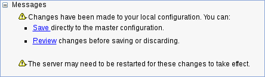
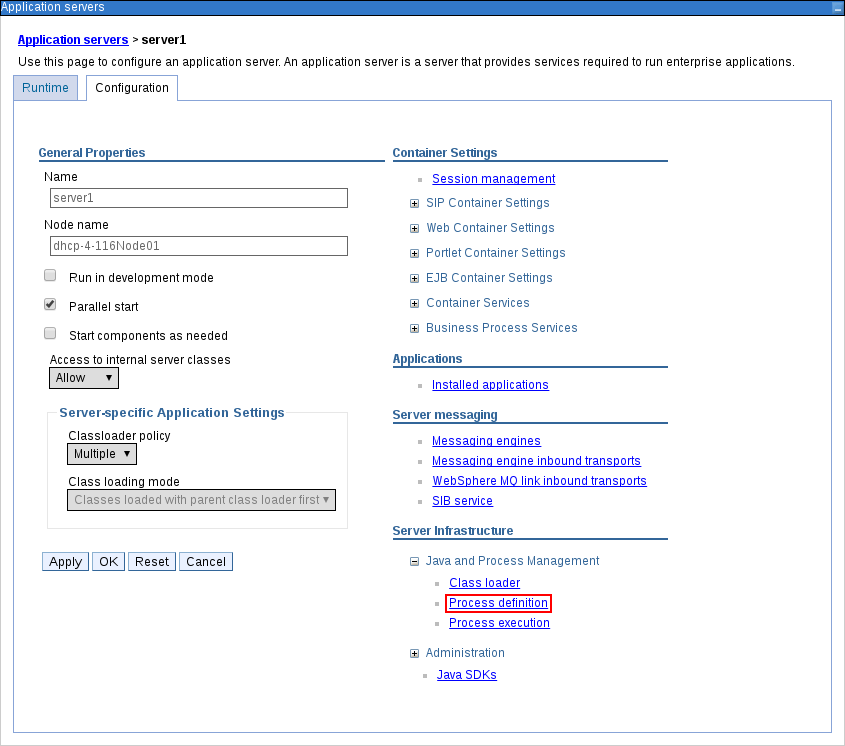
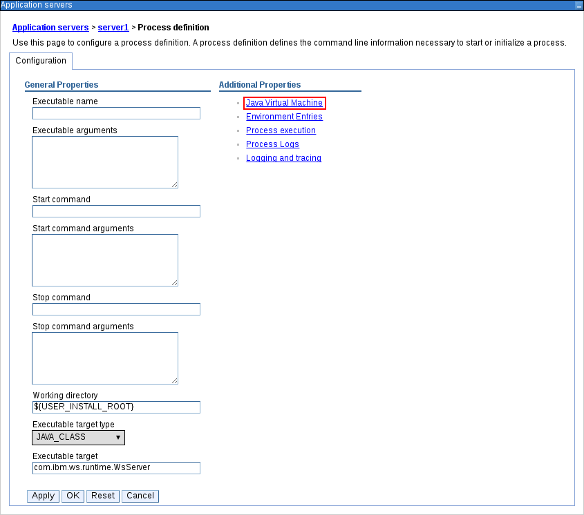

Installing and configuring Red Hat Process Automation Manager
Abstract
- Preface
- Making open source more inclusive
- I. Planning a Red Hat Process Automation Manager installation
- 1. Red Hat Process Automation Manager versioning
- 2. Red Hat Process Automation Manager components
- 3. Red Hat Process Automation Manager installation platforms
- 4. Red Hat Process Automation Manager supported repositories
- 5. Installation environment options for Red Hat Process Automation Manager
- 6. Red Hat Process Automation Manager roles and users
- 7. Red Hat Process Automation Manager reference implementations
- 8. Integrating with Red Hat Process Automation Manager
- 9. Additional resources
- II. Installing and configuring Red Hat Process Automation Manager on Red Hat JBoss EAP 7.3
- 10. About Red Hat Process Automation Manager
- 11. Red Hat Process Automation Manager roles and users
- 12. Downloading the Red Hat Process Automation Manager installation files
- 13. Using the Red Hat Process Automation Manager installer
- 14. Installing Red Hat Process Automation Manager from ZIP files
- 15. Securing passwords with a keystore
- 16. Configuring SSH to use RSA
- 17. Verifying the Red Hat Process Automation Manager installation
- 18. Running Red Hat Process Automation Manager
- 19. Installing and running the headless Process Automation Manager controller
- 20. Configuring and running standalone Business Central
- 21. Maven settings and repositories for Red Hat Process Automation Manager
- 22. Importing projects from Git repositories
- 23. Customizing the branding of Business Central
- 24. Integrating LDAP and SSL
- 25. Dashbuilder Runtime
- A. Business Central system properties
- 26. Additional resources
- 27. Next steps
- III. Installing and configuring Red Hat Process Automation Manager in a Red Hat JBoss EAP clustered environment
- 28. Red Hat Process Automation Manager clusters
- 29. Red Hat Process Automation Manager clusters in a development (authoring) environment
- 29.1. Installing and configuring Red Hat Data Grid
- 29.2. Downloading and configuring AMQ Broker
- 29.3. Configuring an NFS server
- 29.4. Downloading and extracting Red Hat JBoss EAP 7.3 and Red Hat Process Automation Manager
- 29.5. Configuring and running Business Central in a cluster
- 29.6. Testing your high availability (HA) on-premise infrastructure
- 29.7. Verifying the Red Hat Process Automation Manager cluster
- 30. KIE Server clusters in a runtime environment
- 31. Installing and configuring Smart Router
- 32. Configuring Quartz timer service
- 33. Additional resources
- IV. Installing and configuring Red Hat Process Automation Manager on Red Hat JBoss Web Server
- 34. About Red Hat Process Automation Manager
- 35. Downloading the Red Hat Process Automation Manager installation files
- 36. Using the Red Hat Process Automation Manager installer
- 37. KIE Server ZIP file installation and configuration
- 38. Securing passwords with a keystore
- 39. Verifying the KIE Server installation
- 40. Downloading and installing the headless Process Automation Manager controller
- 41. Configuring and running standalone Business Central
- 42. Maven settings and repositories for Red Hat Process Automation Manager
- 43. Importing projects from Git repositories
- 44. Integrating LDAP and SSL
- B. Business Central system properties
- V. Installing and configuring KIE Server on IBM WebSphere Application Server
- 45. KIE Server
- 46. IBM WebSphere Application Server
- 47. Installing and running IBM WebSphere Application Server
- 48. Configuring IBM WebSphere Application Server for KIE Server
- 49. Installing and running KIE Server with IBM WebSphere Application Server
- 50. Installing and running the headless Process Automation Manager controller with IBM WebSphere Application Server
- 51. Configuring an embedded process engine and decision engine in IBM WebSphere Application Server
- 52. Securing passwords with a keystore
- 53. Next steps
- VI. Installing and configuring KIE Server on Oracle WebLogic Server
- 54. KIE Server
- 55. Oracle WebLogic Server
- 56. Installing and running Oracle WebLogic Server
- 57. Configuring Oracle WebLogic Server for KIE Server
- 58. Installing KIE Server with Oracle WebLogic Server
- 59. Installing and running the headless Process Automation Manager controller with Oracle WebLogic Server
- 60. Configuring an embedded process engine and decision engine in Oracle WebLogic Server
- 61. Securing passwords with a keystore
- 62. Next steps
- VII. Patching and upgrading Red Hat Process Automation Manager 7.10
- C. Versioning information
- D. Contact information
Preface
As a developer or system administrator, you can install Red Hat Process Automation Manager components on Red Hat JBoss EAP, in an Red Hat JBoss EAP clustered environment, on JBoss Web Server, and in other supported environments.
Making open source more inclusive
Red Hat is committed to replacing problematic language in our code, documentation, and web properties. We are beginning with these four terms: master, slave, blacklist, and whitelist. Because of the enormity of this endeavor, these changes will be implemented gradually over several upcoming releases. For more details, see our CTO Chris Wright’s message.
Part I. Planning a Red Hat Process Automation Manager installation
As a system administrator, you have several options for installing Red Hat Process Automation Manager.
Table of Contents
- 1. Red Hat Process Automation Manager versioning
- 2. Red Hat Process Automation Manager components
- 3. Red Hat Process Automation Manager installation platforms
- 4. Red Hat Process Automation Manager supported repositories
- 5. Installation environment options for Red Hat Process Automation Manager
- 6. Red Hat Process Automation Manager roles and users
- 7. Red Hat Process Automation Manager reference implementations
- 8. Integrating with Red Hat Process Automation Manager
- 9. Additional resources
Chapter 1. Red Hat Process Automation Manager versioning
Red Hat Process Automation Manager versions are designated with a numerical Major.Minor.Patch format, such as 7.5.1. In this example, the major release is 7.x.x, the minor release is 7.5.x, and the patch release is 7.5.1. Major releases often require data migration, while minor release upgrades and patch updates are typically managed with update tools provided with the Red Hat Process Automation Manager release artifacts.
The following are the general types of releases for Red Hat Process Automation Manager:
- Major release migrations
Major releases of Red Hat Process Automation Manager include substantial enhancements, security updates, bug fixes, and possibly redesigned features and functions. Data migration is typically required when an application is moved from one major release to another major release, such as from Red Hat JBoss BPM Suite 6.4.x to Red Hat Process Automation Manager 7.0. Automated migration tools are often provided with new major versions of Red Hat Process Automation Manager to facilitate migration, but some manual effort is likely required for certain data and configurations. The supported migration paths are specified in product announcements and documentation.
For example migration instructions, see Migrating from Red Hat JBoss BPM Suite 6.4 to Red Hat Process Automation Manager 7.0.
- Minor release upgrades
Minor releases of Red Hat Process Automation Manager include enhancements, security updates, and bug fixes. Data migration may be required when an application is moved from one minor release to another minor release, such as from Red Hat Process Automation Manager 7.5.x to 7.6. Automated update tools are often provided with both patch updates and new minor versions of Red Hat Process Automation Manager to facilitate updating certain components of Red Hat Process Automation Manager, such as Business Central, KIE Server, and the headless Process Automation Manager controller. Other Red Hat Process Automation Manager artifacts, such as the decision engine and standalone Business Central, are released as new artifacts with each minor release and you must re-install them to apply the update.
Before you upgrade to a new minor release, apply the latest patch update to your current version of Red Hat Process Automation Manager to ensure that the minor release upgrade is successful.
- Patch updates
Patch updates of Red Hat Process Automation Manager include the latest security updates and bug fixes. Scheduled patch updates contain all previously released patch updates for that minor version of the product, so you do not need to apply each patch update incrementally in order to apply the latest update. For example, you can update Red Hat Process Automation Manager 7.5.0 or 7.5.1 to Red Hat Process Automation Manager 7.5.2. However, for optimal Red Hat Process Automation Manager performance, apply product updates as they become available. Occasionally, unscheduled patch updates may be released outside the normal update cycle of the existing product. These may include security or other updates provided by Red Hat Global Support Services (GSS) to fix specific issues, and may not be cumulative updates.
Automated update tools are often provided with both patch updates and new minor versions of Red Hat Process Automation Manager to facilitate updating certain components of Red Hat Process Automation Manager, such as Business Central, KIE Server, and the headless Process Automation Manager controller. Other Red Hat Process Automation Manager artifacts, such as the decision engine and standalone Business Central, are released as new artifacts with each minor release and you must re-install them to apply the update.
To ensure optimal transition between releases and to keep your Red Hat Process Automation Manager distribution current with the latest enhancements and fixes, apply new product releases and updates to Red Hat Process Automation Manager as they become available in the Red Hat Customer Portal. Consider also enabling product notifications in the Red Hat Customer Portal.
Chapter 2. Red Hat Process Automation Manager components
Red Hat Process Automation Manager is made up of Business Central and KIE Server.
Business Central is the graphical user interface where you create and manage business rules. You can install Business Central in a Red Hat JBoss EAP instance or on the Red Hat OpenShift Container Platform (OpenShift).
Business Central is also available as a standalone JAR file. You can use the Business Central standalone JAR file to run Business Central without deploying it to an application server.
KIE Server is the server where rules and other artifacts are executed. It is used to instantiate and execute rules and solve planning problems. You can install KIE Server in a Red Hat JBoss EAP instance, in a Red Hat JBoss EAP cluster, on OpenShift, in an Oracle WebLogic server instance, in an IBM WebSphere Application Server instance, or as a part of Spring Boot application.
You can configure KIE Server to run in managed or unmanaged mode. If KIE Server is unmanaged, you must manually create and maintain KIE containers (deployment units). A KIE container is a specific version of a project. If KIE Server is managed, the Process Automation Manager controller manages the KIE Server configuration and you interact with the Process Automation Manager controller to create and maintain KIE containers.
The Process Automation Manager controller is integrated with Business Central. If you install Business Central on Red Hat JBoss EAP, use the Execution Server page to create and maintain KIE containers. However, if you do not install Business Central, you can install the headless Process Automation Manager controller and use the REST API or the KIE Server Java Client API to interact with it.
- Red Hat Business Optimizer is integrated in Business Central and KIE Server. It is a lightweight, embeddable planning engine that optimizes planning problems. Red Hat Business Optimizer helps Java programmers solve planning problems efficiently, and it combines optimization heuristics and metaheuristics with efficient score calculations.
Chapter 3. Red Hat Process Automation Manager installation platforms
Every Red Hat Process Automation Manager release is certified on a variety of operating systems, JVMs, web browsers, and database combinations. Red Hat provides both production and development support for supported and tested configurations in both physical and virtual environments, according to your subscription agreement. See the following pages for information about supported configurations and version numbers:
Red Hat Process Automation Manager 7.10 is available for the following application platforms:
- Red Hat JBoss EAP
- Red Hat JBoss Web Server
- Red Hat OpenShift Container Platform
- Oracle WebLogic Server
- IBM WebSphere Application Server
3.1. Red Hat JBoss EAP
Red Hat JBoss Enterprise Application Platform (Red Hat JBoss EAP) is a certified implementation of the Java Enterprise Edition 7 (Java EE 7) full and web profile specifications. Red Hat JBoss EAP provides preconfigured options for features such as high availability, clustering, messaging, and distributed caching. It also enables users to write, deploy, and run applications using the various APIs and services that Red Hat JBoss EAP provides.
You can install both Business Central and KIE Server in a single Red Hat JBoss EAP instance. However, in production environments you should install them in separate instances.
3.2. Red Hat JBoss Web Server
Red Hat JBoss Web Server is an enterprise-ready web server designed for medium and large applications, based on Tomcat. Red Hat JBoss Web Server provides organizations with a single deployment platform for Java Server Pages (JSP) and Java Servlet technologies, PHP, and CGI.
You can install KIE Server and the headless Process Automation Manager controller on Red Hat JBoss Web Server.
3.3. Red Hat OpenShift Container Platform
Red Hat OpenShift Container Platform (OpenShift) uses Kubernetes and provides an API to manage these services. OpenShift enables you to create and manage containers.
In this solution, components of Red Hat Process Automation Manager are deployed as separate OpenShift pods. You can scale each of the pods up and down individually, providing as few or as many containers as necessary for a particular component. You can use standard OpenShift methods to manage the pods and balance the load.
You can install both Business Central and KIE Server on OpenShift.
3.4. Oracle WebLogic Server
Oracle WebLogic Server is a Java EE application server that provides a standard set of APIs for creating distributed Java applications that can access a wide variety of services, such as databases, messaging services, and connections to external enterprise systems. Users access these applications using web browser clients or Java clients.
You can install KIE Server in an Oracle WebLogic Server instance and then use the headless Process Automation Manager controller and the REST API or the KIE Server Java Client API to interact with KIE Server. You can also use standalone Business Central to interact with KIE Server.
3.5. IBM WebSphere Application Server
IBM WebSphere Application Server is a flexible and secure web application server that hosts Java-based web applications and provides Java EE-certified run time environments. IBM WebSphere 9.0 supports Java SE 8 and is fully compliant with Java EE 7 since version 8.5.5.6.
You can install KIE Server in an IBM WebSphere Application Server instance and then use the headless Process Automation Manager controller to interact with KIE Server. You can also use standalone Business Central to interact with KIE Server.
3.6. Red Hat Process Automation Manager development options
Developers can develop assets in Red Hat Process Automation Manager. In addition, you can integrate Red Hat CodeReady Studio with Red Hat Process Automation Manager to enable developers to write complex applications and leverage code auto-completion.
Red Hat CodeReady Studio is an integrated development environment (IDE) based on Eclipse. It integrates tooling and runtime components by combining Eclipse, Eclipse Tooling, and Red Hat JBoss EAP. Red Hat CodeReady Studio provides plug-ins with tools and interfaces for Red Hat Process Automation Manager. These plug-ins are based on the community version of these products. For this reason, the Red Hat Process Automation Manager plug-ins are called the jBPM and Drools plug-ins.
Chapter 4. Red Hat Process Automation Manager supported repositories
You can use Git repositories and Apache Maven with Red Hat Process Automation Manager.
4.1. Git repositories
Git repositories are used internally within Business Central to store all processes, rules, and other artifacts that are created in the authoring environment. Git is a distributed version control system. It implements revisions as commit objects. When you commit your changes into a repository, a new commit object in the Git repository is created. When you create a project in Business Central, it is added to the Git repository that is connected to Business Central.
If you have projects in other Git repositories, you can import them into Business Central spaces. You can use Git hooks to synchronize the internal Git repositories with external repositories.
4.2. Apache Maven
Apache Maven is a distributed build automation tool used in Java application development to build and manage software projects. You can use Maven to build, publish, and deploy your Red Hat Process Automation Manager projects. Maven provides the following benefits:
- The build process is easy and a uniform build system is implemented across projects.
- All of the required JAR files for a project are made available at compile time.
- A proper project structure is configured.
- Dependencies and versions are well managed.
- There is no need for additional build processing because Maven builds output into a number of predefined types, such as JAR and WAR.
Maven uses repositories to store Java libraries, plug-ins, and other build artifacts. These repositories can be local or remote. Red Hat Process Automation Manager maintains local and remote maven repositories that you can add to your project for accessing the rules, processes, events, and other project dependencies. When building projects and archetypes, Maven dynamically retrieves Java libraries and Maven plug-ins from local or remote repositories. Doing this promotes sharing and reuse of dependencies across projects.
Chapter 5. Installation environment options for Red Hat Process Automation Manager
With Red Hat Process Automation Manager, you can set up a development environment to develop business applications, a runtime environment to run those applications to support decisions, or both.
- Development environment: Typically consists of one Business Central installation and at least one KIE Server installation. You can use Business Central to design decisions and other artifacts, and you can use KIE Server to execute and test the artifacts that you created.
- Runtime environment: Consists of one or more KIE Server instances with or without Business Central. Business Central has an embedded Process Automation Manager controller. If you install Business Central, use the Menu → Deploy → Execution servers page to create and maintain containers. If you want to automate KIE Server management without Business Central, you can use the headless Process Automation Manager controller.
You can also cluster both development and runtime environments. A clustered development or runtime environment consists of a unified group or cluster of two or more servers. The primary benefit of clustering Red Hat Process Automation Manager development environments is high availability and enhanced collaboration, while the primary benefit of clustering Red Hat Process Automation Manager runtime environments is high availability and load balancing. High availability decreases the chance of data loss when a single server fails. When a server fails, another server fills the gap by providing a copy of the data that was on the failed server. When the failed server comes online again, it resumes its place in the cluster.
Clustering of the runtime environment is currently supported on Red Hat JBoss EAP 7.3 and Red Hat OpenShift Container Platform only.
Chapter 6. Red Hat Process Automation Manager roles and users
To access Business Central or KIE Server, you must create users and assign them appropriate roles before the servers are started. You can create users and roles when you install Business Central or KIE Server.
Business Central and KIE Server use the Java Authentication and Authorization Service (JAAS) login module to authenticate users. If both Business Central and KIE Server are running on a single instance, then they share the same JAAS subject and security domain. Therefore, a user who is authenticated for Business Central can also access KIE Server.
However, if Business Central and KIE Server are running on different instances, then the JAAS login module is triggered for both individually. Therefore, a user who is authenticated for Business Central must be authenticated separately to access KIE Server. For example, if a user who is authenticated on Business Central but not authenticated on KIE Server tries to view or manage process definitions in Business Central, a 401 error is logged in the log file and the Invalid credentials to load data from remote server. Contact your system administrator. message appears in Business Central.
This section describes Red Hat Process Automation Manager user roles.
The admin, analyst, developer, manager, process-admin, user, and rest-all roles are reserved for Business Central. The kie-server role is reserved for KIE Server. For this reason, the available roles can differ depending on whether Business Central, KIE Server, or both are installed.
-
admin: Users with theadminrole are the Business Central administrators. They can manage users and create, clone, and manage repositories. They have full access to make required changes in the application. Users with theadminrole have access to all areas within Red Hat Process Automation Manager. -
analyst: Users with theanalystrole have access to all high-level features. They can model and execute their projects. However, these users cannot add contributors to spaces or delete spaces in the Design → Projects view. Access to the Deploy → Execution Servers view, which is intended for administrators, is not available to users with theanalystrole. However, the Deploy button is available to these users when they access the Library perspective. -
developer: Users with thedeveloperrole have access to almost all features and can manage rules, models, process flows, forms, and dashboards. They can manage the asset repository, they can create, build, and deploy projects, and they can use Red Hat CodeReady Studio to view processes. Only certain administrative functions such as creating and cloning a new repository are hidden from users with thedeveloperrole. -
manager: Users with themanagerrole can view reports. These users are usually interested in statistics about the business processes and their performance, business indicators, and other business-related reporting. A user with this role has access only to process and task reports. -
process-admin: Users with theprocess-adminrole are business process administrators. They have full access to business processes, business tasks, and execution errors. These users can also view business reports and have access to the Task Inbox list. -
user: Users with theuserrole can work on the Task Inbox list, which contains business tasks that are part of currently running processes. Users with this role can view process and task reports and manage processes. -
rest-all: Users with therest-allrole can access Business Central REST capabilities. -
kie-server: Users with thekie-serverrole can access KIE Server REST capabilities. This role is mandatory for users to have access to Manage and Track views in Business Central.
Chapter 7. Red Hat Process Automation Manager reference implementations
Red Hat Process Automation Manager provides reference implementations that you can use as starter applications. They are included in the Red Hat Process Automation Manager 7.10.0 Reference Implementations download, available on the Red Hat Process Automation Manager Software Downloads page in the Red Hat Customer Portal.
Employee Rostering reference implementation
The employee rostering reference implementation enables you to create an application that assigns employees to shifts on various positions in an organization. For example, you can use the application to distribute shifts in a hospital between nurses, guard duty shifts across a number of locations, or shifts on an assembly line between workers.
Vehicle route planning reference implementation
The vehicle route planning reference implementation enables you to create an application that solves a vehicle route planning problem with real-world maps, roads, and vehicles delivering goods to locations, each with a specific capacity. For more information, see the README file in the vehicle routing ZIP file, included in the reference implementation download.
School timetable reference implementation
The school timetable reference implementation enables you to build a REST application on Spring Boot that associates lessons with rooms and time slots and avoids conflicts by considering student and teacher constraints.
High available event-driven decisioning reference implementation
The high available event-driven decisioning reference implementation enables you to deploy Drools engine code that requires stateful processing, including rules developed with complex event processing, in an OpenShift environment. Doing this enables the decision engine to process complex event series with high availability.
Chapter 8. Integrating with Red Hat Process Automation Manager
You can integrate Red Hat Process Automation Manager with other products and components, such as Spring Boot, Red Hat Fuse, and Red Hat Single Sign-On.
8.1. Red Hat Process Automation Manager Spring Boot business applications
Spring Framework is a Java platform that provides comprehensive infrastructure support for developing Java applications. Spring Boot is a lightweight framework based on Spring Boot starters. Spring Boot starters are pom.xml files that contain a set of dependency descriptors that you can include in your Spring Boot project. Red Hat offers support and maintenance for Red Hat Process Automation Manager Spring Boot projects as part of Red Hat Runtimes.
Red Hat Process Automation Manager Spring Boot business applications are flexible, UI-agnostic logical groupings of individual services that provide certain business capabilities. Business applications are based on Spring Boot starters. They are usually deployed separately and can be versioned individually. A complete business application enables a domain to achieve specific business goals, for example order management or accommodation management.
On the business application website you can create a Process Automation Manager, Decision Manager, or Business Optimizer business application. After you create and configure your business application, you can deploy it to an existing service or to the cloud, through OpenShift.
8.2. Integrating Red Hat Fuse
Fuse is a distributed, cloud-native integration platform that is part of an agile integration solution. Its distributed approach enables teams to deploy integrated services where required.
You can install Red Hat Fuse on the Apache Karaf container platform or Red Hat JBoss Enterprise Application Platform and then install and configure Red Hat Process Automation Manager in that container.
8.3. Integrating Red Hat Single Sign-On
Red Hat Single Sign-On (RH-SSO) is a single sign-on solution that you can use to secure your browser applications with your REST web services and Git access.
When you integrate Red Hat Process Automation Manager with RH-SSO, you create an SSO and identity management (IDM) environment for Red Hat Process Automation Manager. The session management feature of RH-SSO enables you to use a single authentication for different Red Hat Process Automation Manager environments on the internet.
RH-SSO 7.3 is supported with Red Hat Process Automation Manager on Red Hat JBoss EAP 7.3.
Chapter 9. Additional resources
Installation
- Installing and configuring Red Hat Process Automation Manager on Red Hat JBoss EAP 7.3
- Installing and configuring Red Hat Process Automation Manager in a Red Hat JBoss EAP clustered environment
- Installing and configuring Red Hat Process Automation Manager on Red Hat JBoss Web Server
- Installing and configuring KIE Server on IBM WebSphere Application Server
- Installing and configuring KIE Server on Oracle WebLogic Server
Integration
Reference Implementations
- Running and modifying the employee rostering starter application for Red Hat Business Optimizer using an IDE
- Deploying and using the vehicle route planning starter application for Red Hat Business Optimizer
- Creating a school timetable using Red Hat Business Optimizer with Spring Boot
- Implementing high available event-driven decisioning using the decision engine on Red Hat OpenShift Container Platform
OpenShift
- Deploying a Red Hat Process Automation Manager environment on Red Hat OpenShift Container Platform using Operators
- Deploying a Red Hat Process Automation Manager environment on Red Hat OpenShift Container Platform using templates
- Implementing high available event-driven decisioning using the decision engine on Red Hat OpenShift Container Platform
Part II. Installing and configuring Red Hat Process Automation Manager on Red Hat JBoss EAP 7.3
This document describes how to install Red Hat Process Automation Manager on a Red Hat JBoss Enterprise Application Platform 7.3 instance.
Prerequisites
- You have reviewed the information in Planning a Red Hat Process Automation Manager installation.
- You have installed the latest patch release of Red Hat JBoss Enterprise Application Platform 7.3. For information about installing Red Hat JBoss EAP, see the Red Hat JBoss Enterprise Application Platform installaton guide.
Table of Contents
- 10. About Red Hat Process Automation Manager
- 11. Red Hat Process Automation Manager roles and users
- 12. Downloading the Red Hat Process Automation Manager installation files
- 13. Using the Red Hat Process Automation Manager installer
- 14. Installing Red Hat Process Automation Manager from ZIP files
- 15. Securing passwords with a keystore
- 16. Configuring SSH to use RSA
- 17. Verifying the Red Hat Process Automation Manager installation
- 18. Running Red Hat Process Automation Manager
- 19. Installing and running the headless Process Automation Manager controller
- 20. Configuring and running standalone Business Central
- 21. Maven settings and repositories for Red Hat Process Automation Manager
- 22. Importing projects from Git repositories
- 23. Customizing the branding of Business Central
- 24. Integrating LDAP and SSL
- 25. Dashbuilder Runtime
- A. Business Central system properties
- 26. Additional resources
- 27. Next steps
Chapter 10. About Red Hat Process Automation Manager
Red Hat Process Automation Manager is the Red Hat middleware platform for creating business automation applications and microservices. It enables enterprise business and IT users to document, simulate, manage, automate, and monitor business processes and policies. It is designed to empower business and IT users to collaborate more effectively, so business applications can be changed easily and quickly.
Red Hat Process Automation Manager is made up of Business Central and KIE Server.
- KIE Server is the server where rules and other artifacts are executed. It is used to instantiate and execute rules and solve planning problems. KIE Server provides the runtime environment for business assets and accesses the data stored in the assets repository (knowledge store).
- Business Central
Business Central is the graphical user interface where you create and manage business rules that KIE Server executes. It enables you to perform the following tasks:
- Create, manage, and edit your rules, processes, and related assets.
- Manage connected KIE Server instances and their KIE containers (deployment units).
Execute runtime operations against processes and tasks in KIE Server instances connected to Business Central.
Business Central is also available as a standalone JAR file. You can use the Business Central standalone JAR file to run Business Central without needing to deploy it to an application server.
Red Hat JBoss Enterprise Application Platform (Red Hat JBoss EAP) 7.3 is a certified implementation of the Java Enterprise Edition 8 (Java EE 8) full and web profile specifications. Red Hat JBoss EAP provides preconfigured options for features such as high availability, clustering, messaging, and distributed caching. It also enables users to write, deploy, and run applications using the various APIs and services that Red Hat JBoss EAP provides.
The instructions in this document explain how to install Red Hat Process Automation Manager in a Red Hat JBoss EAP 7.3 server instance.
For instructions on how to install Red Hat Process Automation Manager in other environments, see the following documents:
- Installing and configuring KIE Server on IBM WebSphere Application Server
- Installing and configuring KIE Server on Oracle WebLogic Server
- Deploying a Red Hat Process Automation Manager environment on Red Hat OpenShift Container Platform using Operators
- Deploying a Red Hat Process Automation Manager environment on Red Hat OpenShift Container Platform using templates
For information about supported components, see the following documents:
Chapter 11. Red Hat Process Automation Manager roles and users
To access Business Central or KIE Server, you must create users and assign them appropriate roles before the servers are started. You can create users and roles when you install Business Central or KIE Server.
Business Central and KIE Server use the Java Authentication and Authorization Service (JAAS) login module to authenticate users. If both Business Central and KIE Server are running on a single instance, then they share the same JAAS subject and security domain. Therefore, a user who is authenticated for Business Central can also access KIE Server.
However, if Business Central and KIE Server are running on different instances, then the JAAS login module is triggered for both individually. Therefore, a user who is authenticated for Business Central must be authenticated separately to access KIE Server. For example, if a user who is authenticated on Business Central but not authenticated on KIE Server tries to view or manage process definitions in Business Central, a 401 error is logged in the log file and the Invalid credentials to load data from remote server. Contact your system administrator. message appears in Business Central.
This section describes Red Hat Process Automation Manager user roles.
The admin, analyst, developer, manager, process-admin, user, and rest-all roles are reserved for Business Central. The kie-server role is reserved for KIE Server. For this reason, the available roles can differ depending on whether Business Central, KIE Server, or both are installed.
-
admin: Users with theadminrole are the Business Central administrators. They can manage users and create, clone, and manage repositories. They have full access to make required changes in the application. Users with theadminrole have access to all areas within Red Hat Process Automation Manager. -
analyst: Users with theanalystrole have access to all high-level features. They can model and execute their projects. However, these users cannot add contributors to spaces or delete spaces in the Design → Projects view. Access to the Deploy → Execution Servers view, which is intended for administrators, is not available to users with theanalystrole. However, the Deploy button is available to these users when they access the Library perspective. -
developer: Users with thedeveloperrole have access to almost all features and can manage rules, models, process flows, forms, and dashboards. They can manage the asset repository, they can create, build, and deploy projects, and they can use Red Hat CodeReady Studio to view processes. Only certain administrative functions such as creating and cloning a new repository are hidden from users with thedeveloperrole. -
manager: Users with themanagerrole can view reports. These users are usually interested in statistics about the business processes and their performance, business indicators, and other business-related reporting. A user with this role has access only to process and task reports. -
process-admin: Users with theprocess-adminrole are business process administrators. They have full access to business processes, business tasks, and execution errors. These users can also view business reports and have access to the Task Inbox list. -
user: Users with theuserrole can work on the Task Inbox list, which contains business tasks that are part of currently running processes. Users with this role can view process and task reports and manage processes. -
rest-all: Users with therest-allrole can access Business Central REST capabilities. -
kie-server: Users with thekie-serverrole can access KIE Server REST capabilities. This role is mandatory for users to have access to Manage and Track views in Business Central.
Chapter 12. Downloading the Red Hat Process Automation Manager installation files
You can use the installer JAR file or deployable ZIP files to install Red Hat Process Automation Manager. You can run the installer in interactive or command line interface (CLI) mode. Alternatively, you can extract and configure the Business Central and KIE Server deployable ZIP files. If you want to run Business Central without deploying it to an application server, download the Business Central Standalone JAR file.
Download a Red Hat Process Automation Manager distribution that meets your environment and installation requirements.
Procedure
Navigate to the Software Downloads page in the Red Hat Customer Portal (login required), and select the product and version from the drop-down options:
- Product: Process Automation Manager
- Version: 7.10
Download one of the following product distributions, depending on your preferred installation method:
NoteYou only need to download one of these distributions.
-
If you want to use the installer to install Red Hat Process Automation Manager on Red Hat JBoss EAP 7.3, download Red Hat Process Automation Manager 7.10.0 Installer (
rhpam-installer-7.10.0.jar). The installer graphical user interface guides you through the installation process. If you want to install Red Hat Process Automation Manager on Red Hat JBoss EAP 7.3 using the deployable ZIP files, download the following files:
-
Red Hat Process Automation Manager 7.10.0 KIE Server for All Supported EE8 Containers (
rhpam-7.10.0-kie-server-ee8.zip) -
Red Hat Process Automation Manager 7.10.0 Business Central Deployable for EAP 7 (
rhpam-7.10.0-business-central-eap7-deployable.zip) -
Red Hat Process Automation Manager 7.10.0 Add Ons (
rhpam-7.10.0-add-ons.zip)
-
Red Hat Process Automation Manager 7.10.0 KIE Server for All Supported EE8 Containers (
-
To run Business Central without needing to deploy it to an application server, download Red Hat Process Automation Manager 7.10.0 Business Central Standalone (
rhpam-7.10.0-business-central-standalone.jar).
-
If you want to use the installer to install Red Hat Process Automation Manager on Red Hat JBoss EAP 7.3, download Red Hat Process Automation Manager 7.10.0 Installer (
Chapter 13. Using the Red Hat Process Automation Manager installer
This section describes how to install Business Central and the KIE Server using the installer JAR file. The JAR file is an executable file that installs Red Hat Process Automation Manager in an existing Red Hat JBoss EAP 7.3 server installation. You can run the installer in interactive or command line interface (CLI) mode.
The Red Hat Process Automation Manager JAR file installer does not support the Red Hat JBoss EAP distribution installed by yum or RPM Package Manager. If you want to install Red Hat Process Automation Manager in this type of Red Hat JBoss EAP installation, download the Red Hat Process Automation Manager 7.10 Deployable for Red Hat JBoss EAP 7.3 file and follow the steps in Chapter 14, Installing Red Hat Process Automation Manager from ZIP files.
Because IBM JDK cannot use keystores generated on other JDKs, you cannot install Red Hat Process Automation Manager into an existing Red Hat JBoss EAP installation running on IBM JDK with a keystore generated on another JDK.
Next steps:
Follow the instructions in one of the following sections:
13.1. Using the installer in interactive mode
The installer for Red Hat Process Automation Manager is an executable JAR file. You can use it to install Red Hat Process Automation Manager in an existing Red Hat JBoss EAP 7.3 server installation.
For security reasons, you should run the installer as a non-root user.
Prerequisites
- The Red Hat Process Automation Manager 7.10.0 Installer has been downloaded. For instructions, see Chapter 12, Downloading the Red Hat Process Automation Manager installation files.
- A supported JDK is installed. For a list of supported JDKs, see Red Hat Process Automation Manager 7 Supported Configurations.
- A backed-up Red Hat JBoss EAP 7.3 server installation is available.
- Sufficient user permissions to complete the installation are granted.
The JAR binary is included in
$PATHenvironment variable. On Red Hat Enterprise Linux, it is included in thejava-$JAVA_VERSION-openjdk-develpackage.NoteRed Hat Process Automation Manager is designed to work with UTF-8 encoding. If a different encoding system is used by the underlying JVM, unexpected errors might occur. To ensure UTF-8 is used by the JVM, use the
"-Dfile.encoding=UTF-8"system property. For a list of system properties, see Appendix A, Business Central system properties.
Procedure
In a terminal window, navigate to the directory where you downloaded the installer JAR file and enter the following command:
java -jar rhpam-installer-7.10.0.jar
NoteWhen running the installer on Windows, you may be prompted to provide administrator credentials during the installation. To prevent this requirement, add the
izpack.mode=privilegedoption to the installation command:java -Dizpack.mode=privileged -jar rhpam-installer-7.10.0.jar
Furthermore, when running the installer on a 32-bit Java virtual machine, you might encounter memory limitations. To prevent this issue, run this command:
java -XX:MaxHeapSize=4g -jar rhpam-installer-7.10.0.jar
The graphical installer displays a splash screen and a license agreement page.
- Click I accept the terms of this license agreement and click Next.
- Specify the Red Hat JBoss EAP 7.3 server home where you want to install Red Hat Process Automation Manager and click Next.
Select the components that you want to install and click Next.
NoteYou can install Business Central and KIE Server on the same server. However, you should install Business Central and KIE Server on different servers in production environments. To do this, run the installer twice.
Create a user and click Next. By default, if you install both Business Central and KIE Server in the same container the new user is given the
admin,kie-server, andrest-allroles. If you install only KIE Server, the user is given thekie-serverrole. To select another role, deselectadmin. For information about roles, see Chapter 11, Red Hat Process Automation Manager roles and users.NoteMake sure that the specified user name is not the same as an existing user, role, or group. For example, do not create a user with the user name
admin.The password must have at least eight characters and must contain at least one number and one non-alphanumeric character, but not & (ampersand).
Make a note of the user name and password. You will need them to access Business Central and KIE Server.
- On the Installation Overview page, review the components that you will install and click Next to start the installation.
- When the installation has completed, click Next.
If KIE Server is installed, the Configure Runtime step appears under Component Installation. On the Configure Runtime Environment page, choose to perform the default installation or perform an advanced configuration.
If you choose Perform advanced configuration, you can choose to configure database settings or customize certain KIE Server options.
If you selected Customize database settings, on the JDBC Drive Configuration page specify a data source JDBC driver vendor, select one or more driver JAR files, and click Next.
A data source is an object that enables a Java Database Connectivity (JDBC) client, such as an application server, to establish a connection with a database. Applications look up the data source on the Java Naming and Directory Interface (JNDI) tree or in the local application context and request a database connection to retrieve data. You must configure data sources for KIE Server to ensure correct data exchange between the servers and the designated database.
If you selected Customize KIE Server properties, on the KIE Server Properties Configuration page change any of the following properties:
- Change the value of KIE Server ID to change the name of the KIE Server property.
- Change the value of Controller URL to change the URL of the headless Process Automation Manager controller.
- Deselect any KIE Server functions that you want to disable.
- Click Next to configure the runtime environment.
- When Processing finished appears at the top of the screen, click Next to complete the installation.
Optional: Click Generate Installation Script and Properties File to save the installation data in XML files, and then click Done.
The installer generates two files. The
auto.xmlfile automates future installations and theauto.xml.variablesfile stores user passwords and other sensitive variables. Use theauto.xmlfile to repeat the Red Hat Process Automation Manager installation on multiple systems with the same type of server and the same configuration as the original installation. If necessary, update theinstallpathparameter in theauto.xmlfile. To perform an installation using the XML file, enter the following command:java -jar rhpam-installer-7.10.0.jar <path-to-auto.xml-file>
You have successfully installed Red Hat Process Automation Manager using the installer. If you installed only Business Central, repeat these steps to install KIE Server on a separate server.
If you use Microsoft SQL Server, make sure you have configured applicable transaction isolation for your database. If you do not, you may experience deadlocks. The recommended configuration is to turn on ALLOW_SNAPSHOT_ISOLATION and READ_COMMITTED_SNAPSHOT by entering the following statements:
ALTER DATABASE <DBNAME> SET ALLOW_SNAPSHOT_ISOLATION ON ALTER DATABASE <DBNAME> SET READ_COMMITTED_SNAPSHOT ON
13.2. Using the installer in CLI mode
You can use the command-line interface (CLI) to run the Red Hat Process Automation Manager installer.
For security reasons, you should run the installer as a non-root user.
Prerequisites
- The Red Hat Process Automation Manager 7.10.0 Installer has been downloaded. For instructions, see Chapter 12, Downloading the Red Hat Process Automation Manager installation files.
- A supported JDK is installed. For a list of supported JDKs, see Red Hat Process Automation Manager 7 Supported Configurations.
- A backed-up Red Hat JBoss EAP 7.3 server installation is available.
- Sufficient user permissions to complete the installation are granted.
The JAR binary is included in the
$PATHenvironment variable. On Red Hat Enterprise Linux, it is included in thejava-$JAVA_VERSION-openjdk-develpackage.NoteRed Hat Process Automation Manager is designed to work with UTF-8 encoding. If a different encoding system is used by the underlying JVM, unexpected errors might occur. To ensure UTF-8 is used by the JVM, use the
"-Dfile.encoding=UTF-8"system property. For a list of system properties, see Appendix A, Business Central system properties.
Procedure
In a terminal window, navigate to the directory where you downloaded the installer file and enter the following command:
java -jar rhpam-installer-7.10.0.jar -console
The command-line interactive process will start and display the End-User License Agreement.
press 1 to continue, 2 to quit, 3 to redisplay.
Read the license agreement, enter
1, and pressEnterto continue:Specify the home directory of one of the following servers: Red Hat JBoss EAP 7 or Red Hat JBoss Web Server 5. For more information, see https://access.redhat.com/articles/3405381[Red Hat Process Automation Manager 7 Supported Configurations].
Enter the parent directory of an existing Red Hat JBoss EAP 7.3 installation.
The installer will verify the location of the installation at the location provided. Enter
1to confirm and continue.NoteYou can install Business Central and KIE Server on the same server. However, you should install Business Central and KIE Server on different servers in production environments.
Follow the instructions in the installer to complete the installation.
NoteWhen you create the user name and password, make sure that the specified user name does not conflict with any known title of a role or a group. For example, if there is a role called
admin, you should not create a user with the user nameadmin.The password must have at least eight characters and must contain at least one number and one non-alphanumeric character (not including the character
&).Make a note of the user name and password. You will need them to access Business Central and KIE Server.
When the installation has completed, you will see this message:
Would you like to generate an automatic installation script and properties file?
-
Enter
yto create XML files that contain the installation data, ornto complete the installation. If you entery, you are prompted to specify a path for the XML files. Enter a path or press the Enter key to accept the suggested path.
The installer generates two files. The
auto.xmlfile automates future installations and theauto.xml.variablesfile stores user passwords and other sensitive variables. Use theauto.xmlfile on multiple systems to easily repeat a Red Hat Process Automation Manager installation on the same type of server with the same configuration as the original installation. If necessary, update theinstallpathparameter in theauto.xmlfile. To perform an installation using the XML file, enter the following command:java -jar rhpam-installer-7.10.0.jar <path-to-auto.xml-file>
- If you installed only Business Central, repeat these steps to install KIE Server on a separate server.
If you use Microsoft SQL Server, make sure you have configured applicable transaction isolation for your database. If you do not, you may experience deadlocks. The recommended configuration is to turn on ALLOW_SNAPSHOT_ISOLATION and READ_COMMITTED_SNAPSHOT by entering the following statements:
ALTER DATABASE <DBNAME> SET ALLOW_SNAPSHOT_ISOLATION ON ALTER DATABASE <DBNAME> SET READ_COMMITTED_SNAPSHOT ON
13.3. Using the installer to configure KIE Server with the Process Automation Manager controller
KIE Server can be managed by the Process Automation Manager controller or it can be unmanaged. If KIE Server is unmanaged, you must manually create and maintain KIE containers (deployment units). If KIE Server is managed, the Process Automation Manager controller manages the KIE Server configuration and you interact with the Process Automation Manager controller to create and maintain KIE containers.
The Process Automation Manager controller is integrated with Business Central. If you install Business Central, you can use the Execution Server page in Business Central to interact with the Process Automation Manager controller.
You can use the installer in interactive or CLI mode to install Business Central and KIE Server, and then configure KIE Server with the Process Automation Manager controller.
Prerequisites
- Two computers with backed-up Red Hat JBoss EAP 7.3 server installations are available.
- Sufficient user permissions to complete the installation are granted.
Procedure
On the first computer, run the installer in interactive mode or CLI mode. See one of the following sections for more information:
- On the Component Selection page, clear the KIE Server box.
- Complete the Business Central installation.
- On the second computer, run the installer in interactive mode or CLI mode.
- On the Component Selection page, clear the Business Central box.
- On the Configure Runtime Environment page, select Perform Advanced Configuration.
- Select Customize KIE Server properties and click Next.
Enter the controller URL for Business Central and configure additional properties for KIE Server. The controller URL has the following form where
<HOST:PORT>is the address of Business Central on the second computer:<HOST:PORT>/business-central/rest/controller
- Complete the installation.
- To verify that the Process Automation Manager controller is now integrated with Business Central, go to the Execution Servers page in Business Central and confirm that the KIE Server that you configured appears under REMOTE SERVERS.
Chapter 14. Installing Red Hat Process Automation Manager from ZIP files
You can use the Red Hat Process Automation Manager ZIP files (one for Business Central and one for KIE Server) to install Red Hat Process Automation Manager without using the installer.
You should install Business Central and the KIE Server on different servers in production environments.
For information about installing the headless Process Automation Manager controller, see Chapter 19, Installing and running the headless Process Automation Manager controller.
14.1. Installing Business Central from the ZIP file
Business Central is the graphical user interface where you create and manage business rules that KIE Server executes. You can use a deployable ZIP file to install and configure Business Central.
Prerequisites
-
A backed-up Red Hat JBoss EAP installation version 7.3 is available. The base directory of the Red Hat JBoss EAP installation is referred to as
EAP_HOME. - Sufficient user permissions to complete the installation are granted.
The following file is downloaded as described in Chapter 12, Downloading the Red Hat Process Automation Manager installation files:
rhpam-7.10.0-business-central-eap7-deployable.zip
Procedure
-
Extract the
rhpam-7.10.0-business-central-eap7-deployable.zipfile to a temporary directory. In the following examples this directory is calledTEMP_DIR. Copy the contents of the
TEMP_DIR/rhpam-7.10.0-business-central-eap7-deployable/jboss-eap-7.3directory toEAP_HOME. When prompted, merge or replace files.WarningEnsure that the names of the Red Hat Process Automation Manager deployments that you copy do not conflict with your existing deployments in the Red Hat JBoss EAP instance.
14.2. Installing KIE Server from the ZIP file
KIE Server provides the runtime environment for business assets and accesses the data stored in the assets repository (knowledge store). You can use a deployable ZIP file to install and configure KIE Server.
Prerequisites
-
A backed-up Red Hat JBoss EAP installation version 7.3 is available. The base directory of the Red Hat JBoss EAP installation is referred to as
EAP_HOME. - Sufficient user permissions to complete the installation are granted.
The following file is downloaded as described in Chapter 12, Downloading the Red Hat Process Automation Manager installation files:
rhpam-7.10.0-kie-server-ee8.zip
Procedure
-
Extract the
rhpam-7.10.0-kie-server-ee8.ziparchive to a temporary directory. In the following examples this directory is calledTEMP_DIR. Copy the
TEMP_DIR/rhpam-7.10.0-kie-server-ee8/kie-server.wardirectory toEAP_HOME/standalone/deployments/.WarningEnsure the names of the Red Hat Process Automation Manager deployments you copy do not conflict with your existing deployments in the Red Hat JBoss EAP instance.
-
Copy the contents of the
TEMP_DIR/rhpam-7.10.0-kie-server-ee8/rhpam-7.10.0-kie-server-ee8/SecurityPolicy/toEAP_HOME/bin. - When prompted to overwrite files, click Replace.
-
In the
EAP_HOME/standalone/deployments/directory, create an empty file namedkie-server.war.dodeploy. This file ensures that KIE Server is automatically deployed when the server starts.
If you use Microsoft SQL Server, make sure you have configured applicable transaction isolation for your database. If you do not, you may experience deadlocks. The recommended configuration is to turn on ALLOW_SNAPSHOT_ISOLATION and READ_COMMITTED_SNAPSHOT by entering the following statements:
ALTER DATABASE <DBNAME> SET ALLOW_SNAPSHOT_ISOLATION ON ALTER DATABASE <DBNAME> SET READ_COMMITTED_SNAPSHOT ON
14.3. Configuring JDBC data sources for KIE Server
A data source is an object that enables a Java Database Connectivity (JDBC) client, such as an application server, to establish a connection with a database. Applications look up the data source on the Java Naming and Directory Interface (JNDI) tree or in the local application context and request a database connection to retrieve data. You must configure data sources for KIE Server to ensure correct data exchange between the servers and the designated database.
For production environments, specify an actual data source. Do not use the example data source in production environments.
Prerequisites
- The JDBC providers that you want to use to create database connections are configured on all servers on which you want to deploy KIE Server, as described in the "Creating Datasources" and "JDBC Drivers" sections of the Red Hat JBoss Enterprise Application Server Configuration Guide.
-
The Red Hat Process Automation Manager 7.10.0 Add Ons (
rhpam-7.10.0-add-ons.zip) file is downloaded from the Software Downloads page in the Red Hat Customer Portal.
Procedure
Complete the following steps to prepare your database:
-
Extract
rhpam-7.10.0-add-ons.zipin a temporary directory, for exampleTEMP_DIR. -
Extract
TEMP_DIR/rhpam-7.10.0-migration-tool.zip. -
Change your current directory to the
TEMP_DIR/rhpam-7.10.0-migration-tool/ddl-scriptsdirectory. This directory contains DDL scripts for several database types. Import the DDL script for your database type into the database that you want to use.
- The following example creates jBPM database structures in PostreSQL
psql jbpm < /ddl-scripts/postgresql/postgresql-jbpm-schema.sql
NoteIf you are using PostgreSQL or Oracle in conjunction with Spring Boot, you must import the respective Spring Boot DDL script, for example
/ddl-scripts/oracle/oracle-springboot-jbpm-schema.sqlor/ddl-scripts/postgresql/postgresql-springboot-jbpm-schema.sql.NoteThe PostgreSQL DDL scripts create the PostgreSQL schema with auto-incrementing integer value (OID) columns for entity attributes annotated with
@LOB. To use other binary column types such as BYTEA instead of OID, you must create the PostgreSQL schema with thepostgresql-bytea-jbpm-schema.sqlscript and set the Red Hat Process Automation Managerorg.kie.persistence.postgresql.useBytea=trueflag. Do not use thepostgresql-jbpm-lo-trigger-clob.sqlscript when creating a BYTEA-based schema. Red Hat Process Automation Manager does not provide a migration tool to change from an OID-based to a BYTEA-based schema.
-
Extract
-
Open
EAP_HOME/standalone/configuration/standalone-full.xmlin a text editor and locate the<system-properties>tag. Add the following properties to the
<system-properties>tag where<DATASOURCE>is the JNDI name of your data source and<HIBERNATE_DIALECT>is the hibernate dialect for your database.NoteThe default value of the
org.kie.server.persistence.dsproperty isjava:jboss/datasources/ExampleDS. The default value of theorg.kie.server.persistence.dialectproperty isorg.hibernate.dialect.H2Dialect.<property name="org.kie.server.persistence.ds" value="<DATASOURCE>"/> <property name="org.kie.server.persistence.dialect" value="<HIBERNATE_DIALECT>"/>
The following example shows how to configure a datasource for the PostgreSQL hibernate dialect:
<system-properties> <property name="org.kie.server.repo" value="${jboss.server.data.dir}"/> <property name="org.kie.example" value="true"/> <property name="org.jbpm.designer.perspective" value="full"/> <property name="designerdataobjects" value="false"/> <property name="org.kie.server.user" value="rhpamUser"/> <property name="org.kie.server.pwd" value="rhpam123!"/> <property name="org.kie.server.location" value="http://localhost:8080/kie-server/services/rest/server"/> <property name="org.kie.server.controller" value="http://localhost:8080/business-central/rest/controller"/> <property name="org.kie.server.controller.user" value="kieserver"/> <property name="org.kie.server.controller.pwd" value="kieserver1!"/> <property name="org.kie.server.id" value="local-server-123"/> <!-- Data source properties. --> <property name="org.kie.server.persistence.ds" value="java:jboss/datasources/KieServerDS"/> <property name="org.kie.server.persistence.dialect" value="org.hibernate.dialect.PostgreSQLDialect"/> </system-properties>
The following dialects are supported:
-
DB2:
org.hibernate.dialect.DB2Dialect -
MSSQL:
org.hibernate.dialect.SQLServer2012Dialect -
MySQL:
org.hibernate.dialect.MySQL5InnoDBDialect -
MariaDB:
org.hibernate.dialect.MySQL5InnoDBDialect -
Oracle:
org.hibernate.dialect.Oracle10gDialect -
PostgreSQL:
org.hibernate.dialect.PostgreSQL82Dialect -
PostgreSQL plus:
org.hibernate.dialect.PostgresPlusDialect -
Sybase:
org.hibernate.dialect.SybaseASE157Dialect
14.4. Creating users
If you used the deployable ZIP files to install Red Hat Process Automation Manager, before you can log in to Business Central or KIE Server, you must create users. This section shows you how to create a Business Central user with the admin, rest-all, and kie-server roles and a KIE Server user that has the kie-server role. For information about roles, see Chapter 11, Red Hat Process Automation Manager roles and users.
If you used the installer to install Red Hat Process Automation Manager, you created at least one user during that process. The EAP_HOME/standalone/configuration/application-users.properties file contains application users and their passwords.
Prerequisites
-
Red Hat Process Automation Manager is installed in the base directory of the Red Hat JBoss EAP installation (
EAP_HOME).
Procedure
-
In a terminal application, navigate to the
EAP_HOME/bindirectory. Create a user with the
admin,rest-all, andkie-serverroles that you will use to log in to Business Central.NoteUsers with the
adminrole are Business Central administrators. Users withrest-allrole can access Business Central REST capabilities. Users with thekie-serverrole can access KIE Server (KIE Server) REST capabilities. Thekie-serverrole is mandatory for users to have access to Manage and Track views in Business Central.In the following command, replace
<USERNAME>and<PASSWORD>with the user name and password of your choice:$ ./add-user.sh -a --user <USERNAME> --password <PASSWORD> --role admin,rest-all,kie-server
NoteMake sure that the specified user name is not the same as an existing user, role, or group. For example, do not create a user with the user name
admin.The password must have at least eight characters and must contain at least one number and one non-alphanumeric character, but not & (ampersand).
Create a user with the
kie-serverrole that you will use to log in to KIE Server.$ ./add-user.sh -a --user <USERNAME> --password <PASSWORD> --role kie-server
Make a note of your user names and passwords.
NoteIf you installed Business Central and KIE Server in the same server instance, you can create a single user that has both of these roles:
$ ./add-user.sh -a --user <USERNAME> --password <PASSWORD> --role admin,rest-all,kie-server
You should install Business Central and KIE Server on different servers in production environments.
14.5. Configuring KIE Server to connect to Business Central
This section provides a sample setup that you can use for testing purposes. Some of the values are unsuitable for a production environment, and are marked as such.
If a KIE Server is not configured in your Red Hat Process Automation Manager environment, or if you require additional KIE Servers in your Red Hat Process Automation Manager environment, you must configure a KIE Server to connect to Business Central.
If you are deploying KIE Server on Red Hat OpenShift Container Platform, see the Deploying a Red Hat Process Automation Manager environment on Red Hat OpenShift Container Platform using Operators document for instructions about configuring it to connect to Business Central.
Prerequisites
Business Central and KIE Server are installed in the base directory of the Red Hat JBoss EAP installation (
EAP_HOME) as described in the following sections:Users with the following roles exist:
-
In Business Central, a user with the role
rest-all On the KIE Server, a user with the role
kie-serverFor more information, see Section 14.4, “Creating users”.
-
In Business Central, a user with the role
Procedure
-
In your Red Hat Process Automation Manager installation directory, navigate to the
standalone-full.xmlfile. For example, if you use a Red Hat JBoss EAP installation for Red Hat Process Automation Manager, go to$EAP_HOME/standalone/configuration/standalone-full.xml. Open the
standalone-full.xmlfile and under the<system-properties>tag, set the following JVM properties:Table 14.1. JVM Properties for the KIE Server instance
Property Value Note org.kie.server.iddefault-kie-serverThe KIE Server ID.
org.kie.server.controllerhttp://localhost:8080/business-central/rest/controllerThe location of Business Central. The URL for connecting to the API of Business Central.
org.kie.server.controller.usercontrollerUserThe user name with the role
rest-allwho can log in to the Business Central.org.kie.server.controller.pwdcontrollerUser1234;The password of the user who can log in to the Business Central.
org.kie.server.locationhttp://localhost:8080/kie-server/services/rest/serverThe location of the KIE Server. The URL for connecting to the API of KIE Server.
Table 14.2. JVM Properties for the Business Central instance
Property Value Note org.kie.server.usercontrollerUserThe user name with the role
kie-server.org.kie.server.pwdcontrollerUser1234;The password of the user.
The following example shows how to configure a KIE Server instance:
<property name="org.kie.server.id" value="default-kie-server"/> <property name="org.kie.server.controller" value="http://localhost:8080/business-central/rest/controller"/> <property name="org.kie.server.controller.user" value="controllerUser"/> <property name="org.kie.server.controller.pwd" value="controllerUser1234;"/> <property name="org.kie.server.location" value="http://localhost:8080/kie-server/services/rest/server"/>
The following example shows how to configure a for Business Central instance:
<property name="org.kie.server.user" value="controllerUser"/> <property name="org.kie.server.pwd" value="controllerUser1234;"/>
Send a GET request to
http://SERVER:PORT/kie-server/services/rest/server/to verify that KIE Server started successfully. After authentication, you receive an XML response similar to the following example:<response type="SUCCESS" msg="Kie Server info"> <kie-server-info> <capabilities>KieServer</capabilities> <capabilities>BRM</capabilities> <capabilities>BPM</capabilities> <capabilities>CaseMgmt</capabilities> <capabilities>BPM-UI</capabilities> <capabilities>BRP</capabilities> <capabilities>DMN</capabilities> <capabilities>Swagger</capabilities> <location>http://localhost:8230/kie-server/services/rest/server</location> <messages> <content>Server KieServerInfo{serverId='first-kie-server', version='7.5.1.Final-redhat-1', location='http://localhost:8230/kie-server/services/rest/server', capabilities=[KieServer, BRM, BPM, CaseMgmt, BPM-UI, BRP, DMN, Swagger]}started successfully at Mon Feb 05 15:44:35 AEST 2018</content> <severity>INFO</severity> <timestamp>2018-02-05T15:44:35.355+10:00</timestamp> </messages> <name>first-kie-server</name> <id>first-kie-server</id> <version>7.5.1.Final-redhat-1</version> </kie-server-info> </response>Verify successful registration:
- Log in to Business Central.
Click Menu → Deploy → Execution Servers.
If registration is successful, you will see the registered server ID.
Chapter 15. Securing passwords with a keystore
You can use a keystore to encrypt passwords that are used for communication between Business Central and KIE Server. You should encrypt both controller and KIE Server passwords. If Business Central and KIE Server are deployed to different application servers, then both application servers should use the keystore.
Use Java Cryptography Extension KeyStore (JCEKS) for your keystore because it supports symmetric keys. Use KeyTool, which is part of the JDK installation, to create a new JCEKS.
If KIE Server is not configured with JCEKS, KIE Server passwords are stored in system properties in plain text form.
Prerequisites
- KIE Server is installed in Red Hat JBoss EAP.
- Java 8 or higher is installed.
Procedure
In the Red Hat JBoss EAP home directory, enter the following command to create a KIE Server user with the
kie-serverrole and specify a password. In the following example, replace<USER_NAME>and<PASSWORD>with the user name and password of your choice.$<EAP_HOME>/bin/add-user.sh -a -e -u <USER_NAME> -p <PASSWORD> -g kie-server
To use KeyTool to create a JCEKS, enter the following command in the Java 8 home directory:
$<JAVA_HOME>/bin/keytool -importpassword -keystore <KEYSTORE_PATH> -keypass <ALIAS_KEY_PASSWORD> -alias <PASSWORD_ALIAS> -storepass <KEYSTORE_PASSWORD> -storetype JCEKS
In this example, replace the following variables:
-
<KEYSTORE_PATH>: The path where the keystore will be stored -
<KEYSTORE_PASSWORD>: The keystore password -
<ALIAS_KEY_PASSWORD>: The password used to access values stored with the alias -
<PASSWORD_ALIAS>: The alias of the entry to the process
-
- When prompted, enter the password for the KIE Server user that you created.
Set the following system properties in the
EAP_HOME/standalone/configuration/standalone-full.xmlfile and replace the placeholders as listed in the following table:<system-properties> <property name="kie.keystore.keyStoreURL" value="<KEYSTORE_URL>"/> <property name="kie.keystore.keyStorePwd" value="<KEYSTORE_PWD>"/> <property name="kie.keystore.key.server.alias" value="<KEY_SERVER_ALIAS>"/> <property name="kie.keystore.key.server.pwd" value="<KEY_SERVER_PWD>"/> <property name="kie.keystore.key.ctrl.alias" value="<KEY_CONTROL_ALIAS>"/> <property name="kie.keystore.key.ctrl.pwd" value="<KEY_CONTROL_PWD>"/> </system-properties>Table 15.1. System properties used to load a KIE Server JCEKS
System property Placeholder Description kie.keystore.keyStoreURL<KEYSTORE_URL>URL for the JCEKS that you want to use, for example
file:///home/kie/keystores/keystore.jcekskie.keystore.keyStorePwd<KEYSTORE_PWD>Password for the JCEKS
kie.keystore.key.server.alias<KEY_SERVER_ALIAS>Alias of the key for REST services where the password is stored
kie.keystore.key.server.pwd<KEY_SERVER_PWD>Password of the alias for REST services with the stored password
kie.keystore.key.ctrl.alias<KEY_CONTROL_ALIAS>Alias of the key for default REST Process Automation Controller where the password is stored
kie.keystore.key.ctrl.key.ctrl.pwd<KEY_CONTROL_PWD>Password of the alias for default REST Process Automation Controller with the stored password
- Start KIE Server to verify the configuration.
Chapter 16. Configuring SSH to use RSA
SSH is used to clone Git repositories. By default, the DSA encryption algorithm is provided by Business Central. However, some SSH clients, for example SSH clients in the Fedora 23 environment, use the RSA algorithm instead of the DSA algorithm. Business Central contains a system property that you can use to switch from DSA to RSA if required.
SSH clients on supported configurations, for example Red Hat Enterprise Linux 7, are not affected by this issue. For a list of supported configurations, see Red Hat Process Automation Manager 7 Supported Configurations.
Procedure
Complete one of the following tasks to enable this system property:
Modify the
~/.ssh/configfile on the client side as follows to force the SSH client to accept the deprecated DSA algorithm:Host <SERVER_IP> HostKeyAlgorithms +ssh-dssInclude the
-Dorg.uberfire.nio.git.ssh.algorithm=RSAparameter when you start Business Central, for example:$ ./standalone.sh -c standalone-full.xml -Dorg.uberfire.nio.git.ssh.algorithm=RSA
Chapter 17. Verifying the Red Hat Process Automation Manager installation
After you have installed Red Hat Process Automation Manager, create an asset to verify that the installation is working.
Procedure
In a terminal window, navigate to the
EAP_HOME/bindirectory and enter the following command to start Red Hat Process Automation Manager:./standalone.sh -c standalone-full.xml
NoteIf you deployed Business Central without KIE Server, you can start Business Central with the
standalone.shscript without specifying thestandalone-full.xmlfile. In this case, ensure that you make any configuration changes to thestandalone.xmlfile before starting Business Central.In a web browser, enter
localhost:8080/business-central.If you configured Red Hat Process Automation Manager to run from a domain name, replace
localhostwith the domain name, for example:http://www.example.com:8080/business-centralIf you configured Red Hat Process Automation Manager to run in a cluster, replace
localhostwith the IP address of a particular node, for example:http://<node_IP_address>:8080/business-central
-
Enter the
adminuser credentials that you created during installation. The Business Central home page appears. - Select Menu → Deploy → Execution Servers.
- Confirm that default-kieserver is listed under Server Configurations.
- Select Menu → Design → Projects.
- Open the MySpace space.
- Click Try Samples → Mortgages → OK. The Assets window appears.
- Click Add Asset → Data Object.
-
Enter
MyDataObjectin the Data Object field and click OK. -
Click Spaces → MySpace → Mortgages and confirm that
MyDataObjectis in the list of assets. - Delete the Mortgages project.
Chapter 18. Running Red Hat Process Automation Manager
Use this procedure to run the Red Hat Process Automation Manager on Red Hat JBoss EAP in standalone mode.
Prerequisites
- Red Hat Process Automation Manager is installed and configured.
If you changed the default host (localhost) or the default port (9990), then before you run Red Hat Process Automation Manager, you must edit the business-central.war/WEB-INF/classes/datasource-management.properties and business-central.war/WEB-INF/classes/security-management.properties files as described in Solution 3519551.
Procedure
-
In a terminal application, navigate to
EAP_HOME/bin. Run the standalone configuration:
On Linux or UNIX-based systems:
$ ./standalone.sh -c standalone-full.xml
On Windows:
standalone.bat -c standalone-full.xml
NoteIf you deployed Business Central without KIE Server, you can start Business Central with the
standalone.shscript without specifying thestandalone-full.xmlfile. In this case, ensure that you make any configuration changes to thestandalone.xmlfile before starting Business Central.On Linux or UNIX-based systems:
$ /standalone.sh
On Windows:
standalone.bat
In a web browser, open the URL
localhost:8080/business-central.If you configured Red Hat Process Automation Manager to run from a domain name, replace
localhostwith the domain name, for example:http://www.example.com:8080/business-central- Log in using the credentials of the user that you created for Business Central in Section 14.4, “Creating users”.
Chapter 19. Installing and running the headless Process Automation Manager controller
You can configure KIE Server to run in managed or unmanaged mode. If KIE Server is unmanaged, you must manually create and maintain KIE containers (deployment units). If KIE Server is managed, the Process Automation Manager controller manages the KIE Server configuration and you interact with the Process Automation Manager controller to create and maintain KIE containers.
Business Central has an embedded Process Automation Manager controller. If you install Business Central, use the Execution Server page to create and maintain KIE containers. If you want to automate KIE Server management without Business Central, you can use the headless Process Automation Manager controller.
19.1. Installing the headless Process Automation Manager controller
You can install the headless Process Automation Manager controller and use the REST API or the KIE Server Java Client API to interact with it.
Prerequisites
-
A backed-up Red Hat JBoss EAP installation version 7.3 is available. The base directory of the Red Hat JBoss EAP installation is referred to as
EAP_HOME. - Sufficient user permissions to complete the installation are granted.
Procedure
Navigate to the Software Downloads page in the Red Hat Customer Portal (login required), and select the product and version from the drop-down options:
- Product: Process Automation Manager
- Version: 7.10
-
Download Red Hat Process Automation Manager 7.10.0 Add Ons (the
rhpam-7.10.0-add-ons.zipfile). -
Extract the
rhpam-7.10.0-add-ons.zipfile. Therhpam-7.10.0-controller-ee7.zipfile is in the extracted directory. -
Extract the
rhpam-7.10.0-controller-ee7archive to a temporary directory. In the following examples this directory is calledTEMP_DIR. Copy the
TEMP_DIR/rhpam-7.10.0-controller-ee7/controller.wardirectory toEAP_HOME/standalone/deployments/.WarningEnsure that the names of the headless Process Automation Manager controller deployments you copy do not conflict with your existing deployments in the Red Hat JBoss EAP instance.
-
Copy the contents of the
TEMP_DIR/rhpam-7.10.0-controller-ee7/SecurityPolicy/directory toEAP_HOME/bin. - When prompted to overwrite files, select Yes.
-
In the
EAP_HOME/standalone/deployments/directory, create an empty file namedcontroller.war.dodeploy. This file ensures that the headless Process Automation Manager controller is automatically deployed when the server starts.
19.1.1. Creating a headless Process Automation Manager controller user
Before you can use the headless Process Automation Manager controller, you must create a user that has the kie-server role.
Prerequisites
-
The headless Process Automation Manager controller is installed in the base directory of the Red Hat JBoss EAP installation (
EAP_HOME).
Procedure
-
In a terminal application, navigate to the
EAP_HOME/bindirectory. Enter the following command and replace
<USER_NAME>and<PASSWORD>with the user name and password of your choice.$ ./add-user.sh -a --user <USER_NAME> --password <PASSWORD> --role kie-server
NoteMake sure that the specified user name is not the same as an existing user, role, or group. For example, do not create a user with the user name
admin.The password must have at least eight characters and must contain at least one number and one non-alphanumeric character, but not & (ampersand).
- Make a note of your user name and password.
19.1.2. Configuring KIE Server and the headless Process Automation Manager controller
If KIE Server will be managed by the headless Process Automation Manager controller, you must edit the standalone-full.xml file in KIE Server installation and the standalone.xml file in the headless Process Automation Manager controller installation.
Prerequisites
-
KIE Server is installed in an
EAP_HOME. The headless Process Automation Manager controller is installed in an
EAP_HOME.NoteYou should install KIE Server and the headless Process Automation Manager controller on different servers in production environments. However, if you install KIE Server and the headless Process Automation Manager controller on the same server, for example in a development environment, make these changes in the shared
standalone-full.xmlfile.-
On KIE Server nodes, a user with the
kie-serverrole exists. On the server nodes, a user with the
kie-serverrole exists.For more information, see Section 14.4, “Creating users”.
Procedure
In the
EAP_HOME/standalone/configuration/standalone-full.xmlfile, add the following properties to the<system-properties>section and replace<USERNAME>and<USER_PWD>with the credentials of a user with thekie-serverrole:<property name="org.kie.server.user" value="<USERNAME>"/> <property name="org.kie.server.pwd" value="<USER_PWD>"/>
In the KIE Server
EAP_HOME/standalone/configuration/standalone-full.xmlfile, add the following properties to the<system-properties>section:<property name="org.kie.server.controller.user" value="<CONTROLLER_USER>"/> <property name="org.kie.server.controller.pwd" value="<CONTROLLER_PWD>"/> <property name="org.kie.server.id" value="<KIE_SERVER_ID>"/> <property name="org.kie.server.location" value="http://<HOST>:<PORT>/kie-server/services/rest/server"/> <property name="org.kie.server.controller" value="<CONTROLLER_URL>"/>
In this file, replace the following values:
-
Replace
<CONTROLLER_USER>and<CONTROLLER_PWD>with the credentials of a user with thekie-serverrole. -
Replace
<KIE_SERVER_ID>with the ID or name of the KIE Server installation, for example,rhpam-7.10.0-kie-server-1. -
Replace
<HOST>with the ID or name of the KIE Server host, for example,localhostor192.7.8.9. Replace
<PORT>with the port of the KIE Server host, for example,8080.NoteThe
org.kie.server.locationproperty specifies the location of KIE Server.-
Replace
<CONTROLLER_URL>with the URL of the headless Process Automation Manager controller. KIE Server connects to this URL during startup.
-
Replace
19.2. Running the headless Process Automation Manager controller
After you have installed the headless Process Automation Manager controller on Red Hat JBoss EAP, use this procedure to run the headless Process Automation Manager controller.
Prerequisites
-
The headless Process Automation Manager controller is installed and configured in the base directory of the Red Hat JBoss EAP installation (
EAP_HOME).
Procedure
-
In a terminal application, navigate to
EAP_HOME/bin. If you installed the headless Process Automation Manager controller on the same Red Hat JBoss EAP instance as the Red Hat JBoss EAP instance where you installed the KIE Server, enter one of the following commands:
On Linux or UNIX-based systems:
$ ./standalone.sh -c standalone-full.xml
On Windows:
standalone.bat -c standalone-full.xml
If you installed the headless Process Automation Manager controller on a separate Red Hat JBoss EAP instance from the Red Hat JBoss EAP instance where you installed the KIE Server, start the headless Process Automation Manager controller with the
standalone.shscript:NoteIn this case, ensure that you made all required configuration changes to the
standalone.xmlfile.On Linux or UNIX-based systems:
$ ./standalone.sh
On Windows:
standalone.bat
To verify that the headless Process Automation Manager controller is working on Red Hat JBoss EAP, enter the following command where
<CONTROLLER>and<CONTROLLER_PWD>is the user name and password combination that you created in Section 19.1.1, “Creating a headless Process Automation Manager controller user”. The output of this command provides information about the KIE Server instance.curl -X GET "http://<HOST>:<PORT>/controller/rest/controller/management/servers" -H "accept: application/xml" -u '<CONTROLLER>:<CONTROLLER_PWD>'
Alternatively, you can use the KIE Server Java API Client to access the headless Process Automation Manager controller.
Chapter 20. Configuring and running standalone Business Central
You can use the Business Central standalone JAR file to run Business Central without deploying it to an application server. You can use sample configuration files to run the Business Central standalone JAR file out of the box or you can customize the sampfiles for your requirements.
This JAR file is supported only when it is run on Red Hat Enterprise Linux.
Prerequisites
-
The Red Hat Process Automation Manager 7.10.0 Business Central Standalone (
rhpam-7.10.0-business-central-standalone.jar) and the Red Hat Process Automation Manager 7.10.0 Add Ons (rhpam-7.10.0-add-ons.zip) files have been downloaded from the Software Downloads page for Red Hat Process Automation Manager 7.10, as described in Chapter 12, Downloading the Red Hat Process Automation Manager installation files.
Procedure
-
Extract the downloaded
rhpam-7.10.0-addons.zipto a temporary directory. This archive includes therhpam-7.10.0-standalone-sample-configuration.zipfile. Extract the
rhpam-7.10.0-standalone-sample-configuration.zipfile to the directory that contains therhpam-7.10.0-business-central-standalone.jarfile. Therhpam-7.10.0-standalone-sample-configuration.zipfile contains the following sample configuration files:-
application-roles.properties -
application-users.properties sample-standalone-config.ymlYou can run the
rhpam-7.10.0-business-central-standalone.jarfiles with the sample data provided in the configuration files or you can customize the data for your requirements.
-
To customize the configuration data, complete the following steps:
Edit the
application-users.propertiesfile. Include an administrative user and if this Business Central instance will be a Process Automation Manager controller for KIE Server, include a Process Automation Manager controller user, for example:rhpamAdmin=password1
Edit the
application-roles.propertiesfile to assign roles to the users that you included in theapplication-users.propertiesfile, for example:rhpamAdmin=admin controllerUser=kie-server
For more information, see Chapter 11, Red Hat Process Automation Manager roles and users.
-
Review the contents of the the
sample-standalone-config.ymlconfiguration file and update as required.
To run the Business Central standalone JAR file, enter the following command:
java -jar rhpam-7.10.0-business-central-standalone.jar -s sample-standalone-config.yml
To set application properties when you run the JAR file, include the
-D<PROPERTY>=<VALUE>parameter in the command, where<PROPERTY>is the name of a supported application property and<VALUE>is the property value:java -jar rhpam-7.10.0-business-central-standalone.jar -s sample-standalone-config.yml -D<PROPERTY>=<VALUE> -D<PROPERTY>=<VALUE>
For example, to run Business Central and connect to KIE Server as the user
controllerUser, enter:java -jar {PRODUCT_FILE}-{URL_COMPONENT_CENTRAL}-standalone.jar \ -s sample-standalone-config.yml \ -Dorg.kie.server.user=controllerUser -Dorg.kie.server.pwd=controllerUser1234Doing this enables you to deploy containers to KIE Server. See Appendix A, Business Central system properties for more information.
Chapter 21. Maven settings and repositories for Red Hat Process Automation Manager
When you create a Red Hat Process Automation Manager project, Business Central uses the Maven repositories that are configured for Business Central. You can use the Maven global or user settings to direct all Red Hat Process Automation Manager projects to retrieve dependencies from the public Red Hat Process Automation Manager repository by modifying the Maven project object model (POM) file (pom.xml). You can also configure Business Central and KIE Server to use an external Maven repository or prepare a Maven mirror for offline use.
For more information about Red Hat Process Automation Manager packaging and deployment options, see Packaging and deploying a Red Hat Process Automation Manager project.
21.1. Adding Maven dependencies for Red Hat Process Automation Manager
To use the correct Maven dependencies in your Red Hat Process Automation Manager project, add the Red Hat Business Automation bill of materials (BOM) files to the project’s pom.xml file. The Red Hat Business Automation BOM applies to both Red Hat Decision Manager and Red Hat Process Automation Manager. When you add the BOM files, the correct versions of transitive dependencies from the provided Maven repositories are included in the project.
For more information about the Red Hat Business Automation BOM, see What is the mapping between Red Hat Process Automation Manager and the Maven library version?.
Procedure
Declare the Red Hat Business Automation BOM in the
pom.xmlfile:<dependencyManagement> <dependencies> <dependency> <groupId>com.redhat.ba</groupId> <artifactId>ba-platform-bom</artifactId> <version>7.10.0.redhat-00002</version> <type>pom</type> <scope>import</scope> </dependency> </dependencies> </dependencyManagement> <dependencies> <!-- Your dependencies --> </dependencies>
-
Declare dependencies required for your project in the
<dependencies>tag. After you import the product BOM into your project, the versions of the user-facing product dependencies are defined so you do not need to specify the<version>sub-element of these<dependency>elements. However, you must use the<dependency>element to declare dependencies which you want to use in your project. For standalone projects that are not authored in Business Central, specify all dependencies required for your projects. In projects that you author in Business Central, the basic decision engine and process engine dependencies are provided automatically by Business Central.
For a basic Red Hat Process Automation Manager project, declare the following dependencies, depending on the features that you want to use:
Embedded process engine dependencies
<!-- Public KIE API --> <dependency> <groupId>org.kie</groupId> <artifactId>kie-api</artifactId> </dependency> <!-- Core dependencies for process engine --> <dependency> <groupId>org.jbpm</groupId> <artifactId>jbpm-flow</artifactId> </dependency> <dependency> <groupId>org.jbpm</groupId> <artifactId>jbpm-flow-builder</artifactId> </dependency> <dependency> <groupId>org.jbpm</groupId> <artifactId>jbpm-bpmn2</artifactId> </dependency> <dependency> <groupId>org.jbpm</groupId> <artifactId>jbpm-runtime-manager</artifactId> </dependency> <dependency> <groupId>org.jbpm</groupId> <artifactId>jbpm-persistence-jpa</artifactId> </dependency> <dependency> <groupId>org.jbpm</groupId> <artifactId>jbpm-query-jpa</artifactId> </dependency> <dependency> <groupId>org.jbpm</groupId> <artifactId>jbpm-audit</artifactId> </dependency> <dependency> <groupId>org.jbpm</groupId> <artifactId>jbpm-kie-services</artifactId> </dependency> <!-- Dependency needed for default WorkItemHandler implementations. --> <dependency> <groupId>org.jbpm</groupId> <artifactId>jbpm-workitems-core</artifactId> </dependency> <!-- Logging dependency. You can use any logging framework compatible with slf4j. --> <dependency> <groupId>ch.qos.logback</groupId> <artifactId>logback-classic</artifactId> <version>${logback.version}</version> </dependency>For a Red Hat Process Automation Manager project that uses CDI, you typically declare the following dependencies:
CDI-enabled process engine dependencies
<dependency> <groupId>org.kie</groupId> <artifactId>kie-api</artifactId> </dependency> <dependency> <groupId>org.jbpm</groupId> <artifactId>jbpm-kie-services</artifactId> </dependency> <dependency> <groupId>org.jbpm</groupId> <artifactId>jbpm-services-cdi</artifactId> </dependency>
For a basic Red Hat Process Automation Manager project, declare the following dependencies:
Embedded decision engine dependencies
<dependency> <groupId>org.drools</groupId> <artifactId>drools-compiler</artifactId> </dependency> <!-- Dependency for persistence support. --> <dependency> <groupId>org.drools</groupId> <artifactId>drools-persistence-jpa</artifactId> </dependency> <!-- Dependencies for decision tables, templates, and scorecards. For other assets, declare org.drools:business-central-models-* dependencies. --> <dependency> <groupId>org.drools</groupId> <artifactId>drools-decisiontables</artifactId> </dependency> <dependency> <groupId>org.drools</groupId> <artifactId>drools-templates</artifactId> </dependency> <dependency> <groupId>org.drools</groupId> <artifactId>drools-scorecards</artifactId> </dependency> <!-- Dependency for loading KJARs from a Maven repository using KieScanner. --> <dependency> <groupId>org.kie</groupId> <artifactId>kie-ci</artifactId> </dependency>
To use the KIE Server, declare the following dependencies:
Client application KIE Server dependencies
<dependency> <groupId>org.kie.server</groupId> <artifactId>kie-server-client</artifactId> </dependency>
To create a remote client for Red Hat Process Automation Manager, declare the following dependency:
Client dependency
<dependency> <groupId>org.uberfire</groupId> <artifactId>uberfire-rest-client</artifactId> </dependency>
When creating a JAR file that includes assets, such as rules and process definitions, specify the packaging type for your Maven project as
kjarand useorg.kie:kie-maven-pluginto process thekjarpackaging type located under the<project>element. In the following example,${kie.version}is the Maven library version listed in What is the mapping between Red Hat Process Automation Manager and the Maven library version?:<packaging>kjar</packaging> <build> <plugins> <plugin> <groupId>org.kie</groupId> <artifactId>kie-maven-plugin</artifactId> <version>${kie.version}</version> <extensions>true</extensions> </plugin> </plugins> </build>
21.2. Configuring an external Maven repository for Business Central and KIE Server
You can configure Business Central and KIE Server to use an external Maven repository, such as Nexus or Artifactory, instead of the built-in repository. This enables Business Central and KIE Server to access and download artifacts that are maintained in the external Maven repository.
Artifacts in the repository do not receive automated security patches because Maven requires that artifacts be immutable. As a result, artifacts that are missing patches for known security flaws will remain in the repository to avoid breaking builds that depend on them. The version numbers of patched artifacts are incremented. For more information, see JBoss Enterprise Maven Repository.
For information about configuring an external Maven repository for an authoring environment on Red Hat OpenShift Container Platform, see the following documents:
Prerequisites
- Business Central and KIE Server are installed. For installation options, see Planning a Red Hat Process Automation Manager installation.
Procedure
-
Create a Maven
settings.xmlfile with connection and access details for your external repository. For details about thesettings.xmlfile, see the Maven Settings Reference. -
Save the file in a known location, for example,
/opt/custom-config/settings.xml. -
In your Red Hat Process Automation Manager installation directory, navigate to the
standalone-full.xmlfile. For example, if you use a Red Hat JBoss EAP installation for Red Hat Process Automation Manager, go to$EAP_HOME/standalone/configuration/standalone-full.xml. Open
standalone-full.xmland under the<system-properties>tag, set thekie.maven.settings.customproperty to the full path name of thesettings.xmlfile.For example:
<property name="kie.maven.settings.custom" value="/opt/custom-config/settings.xml"/>
- Start or restart Business Central and KIE Server.
Next steps
For each Business Central project that you want to export or push as a KJAR artifact to the external Maven repository, you must add the repository information in the project pom.xml file. For instructions, see Packaging and deploying a Red Hat Process Automation Manager project.
21.3. Preparing a Maven mirror repository for offline use
If your Red Hat Process Automation Manager deployment does not have outgoing access to the public Internet, you must prepare a Maven repository with a mirror of all the necessary artifacts and make this repository available to your environment.
You do not need to complete this procedure if your Red Hat Process Automation Manager deployment is connected to the Internet.
Prerequisites
- A computer that has outgoing access to the public Internet is available.
Procedure
- On the computer that has an outgoing connection to the public Internet, complete the following steps:
Navigate to the Software Downloads page in the Red Hat Customer Portal (login required), and select the product and version from the drop-down options:
- Product: Red Hat Process Automation Manager
Version: 7.10
-
Download and extract the Red Hat Process Automation Manager 7.10.0 Offliner Content List (
rhpam-7.10.0-offliner.zip) product deliverable file. -
Extract the contents of the
rhpam-7.10.0-offliner.zipfile into any directory. Change to the directory and enter the following command:
./offline-repo-builder.sh offliner.txt
This command creates the
repositorysubdirectory and downloads the necessary artifacts into this subdirectory. This is the mirror repository.If a message reports that some downloads have failed, run the same command again. If downloads fail again, contact Red Hat support.
-
Download and extract the Red Hat Process Automation Manager 7.10.0 Offliner Content List (
If you developed services outside of Business Central and they have additional dependencies, add the dependencies to the mirror repository. If you developed the services as Maven projects, you can use the following steps to prepare these dependencies automatically. Complete the steps on the computer that has an outgoing connection to the public Internet.
-
Create a backup of the local Maven cache directory (
~/.m2/repository) and then clear the directory. -
Build the source of your projects using the
mvn clean installcommand. For every project, enter the following command to ensure that Maven downloads all runtime dependencies for all the artifacts generated by the project:
mvn -e -DskipTests dependency:go-offline -f /path/to/project/pom.xml --batch-mode -Djava.net.preferIPv4Stack=true
Replace
/path/to/project/pom.xmlwith the path of thepom.xmlfile of the project.-
Copy the contents of the local Maven cache directory (
~/.m2/repository) to therepositorysubdirectory that was created.
-
Create a backup of the local Maven cache directory (
-
Copy the contents of the
repositorysubdirectory to a directory on the computer on which you deployed Red Hat Process Automation Manager. This directory becomes the offline Maven mirror repository. -
Create and configure a
settings.xmlfile for your Red Hat Process Automation Manager deployment as described in Section 21.2, “Configuring an external Maven repository for Business Central and KIE Server”. Make the following changes in the
settings.xmlfile:-
Under the
<profile>tag, if a<repositories>or<pluginRepositores>tag is missing, add the missing tags. Under
<repositories>add the following content:<repository> <id>offline-repository</id> <url>file:///path/to/repo</url> <releases> <enabled>true</enabled> </releases> <snapshots> <enabled>false</enabled> </snapshots> </repository>Replace
/path/to/repowith the full path to the local Maven mirror repository directory.Under
<pluginRepositories>add the following content:<repository> <id>offline-plugin-repository</id> <url>file:///path/to/repo</url> <releases> <enabled>true</enabled> </releases> <snapshots> <enabled>false</enabled> </snapshots> </repository>Replace
/path/to/repowith the full path to the local Maven mirror repository directory.
-
Under the
-
Set the
kie.maven.offline.forceproperty for Business Central totrue. For instructions about setting properties for Business Central, see Installing and configuring Red Hat Process Automation Manager on Red Hat JBoss EAP 7.3.
Chapter 22. Importing projects from Git repositories
Git is a distributed version control system. It implements revisions as commit objects. When you save your changes to a repository, a new commit object in the Git repository is created.
Business Central uses Git to store project data, including assets such as rules and processes. When you create a project in Business Central, it is added to a Git repository that is embedded in Business Central. If you have projects in other Git repositories, you can import those projects into the Business Central Git repository through Business Central spaces.
Prerequisites
- Red Hat Process Automation Manager projects exist in an external Git repository.
- You have the credentials required for read access to that external Git repository.
Procedure
- In Business Central, click Menu → Design → Projects.
- Select or create the space into which you want to import the projects. The default space is MySpace.
To import a project, do one of the following:
- Click Import Project.
- Select Import Project from the drop-down list.
- In the Import Project window, enter the URL and credentials for the Git repository that contains the projects that you want to import and click Import. The projects are added to the Business Central Git repository and are available from the current space.
Chapter 23. Customizing the branding of Business Central
You can customize the branding of the Business Central login page and application header by replacing the images with your own.
23.1. Customizing the Business Central login page
You can customize the company logo and the project logo on the Business Central login page.
Procedure
- Start Red Hat JBoss EAP and open Business Central in a web browser.
-
Copy an SVG format image to the
EAP_HOME/standalone/deployments/business-central.war/img/directory in your Red Hat Process Automation Manager installation. -
In the
EAP_HOME/standalone/deployments/business-central.war/img/directory, either move or rename the existingredhat_logo.pngfile. -
Rename your PNG file
redhat_logo.png. -
To change the project logo that appears above the User name and Password fields, replace the default image
BC_Logo.pngwith a new SVG file. - Force a full reload of the login page, bypassing the cache, to view the changes. For example, in most Linux and Windows web browsers, press Ctrl+F5.
23.2. Customizing Business Central application header
You can customize the Business Central application header.
Procedure
- Start Red Hat JBoss EAP, open Business Central in a web browser, and log in with your user credentials.
-
Copy your new application header image in the SVG format to the
EAP_HOME/standalone/deployments/business-central.war/banner/directory in your Red Hat Process Automation Manager installation. -
Open the
EAP_HOME/standalone/deployments/business-central.war/banner/banner.htmlfile in a text editor. Replace
logo.pngin the<img>tag with the file name of your new image:admin-and-config/<img src="banner/logo.png"/>
- Force a full reload of the login page, bypassing the cache, to view the changes. For example, in most Linux and Windows web browsers, press Ctrl+F5.
Chapter 24. Integrating LDAP and SSL
With Red Hat Process Automation Manager you can integrate LDAP and SSL through RH-SSO. For more information, see the Red Hat Single Sign-On Server Administration Guide.
Chapter 25. Dashbuilder Runtime
Dashbuilder Runtime is an add-on Red Hat Process Automation Manager application WAR that you can use to view dashboards created in and exported from Business Central. This is useful for reviewing business metrics in Red Hat JBoss EAP installations that do not have Business Central.
Navigation between the pages of a dashboard in Dashbuilder Runtime is identical to navigation in the Business Central where the dashboard was created. If a page belongs to a group, that group is imported to Dashbuilder Runtime as well as the page. If a page is imported to Dashbuilder Runtime but not used for navigation, then the page is added to the Runtime Dashboards menu group. If no navigation is exported then all pages are added to the Runtime Dashboards menu group.
25.1. Installing Dashbuilder Runtime
To install Dashbuilder Runtime, download the Dashbuilder Runtime WAR and create a user with the admin role.
Prerequisites
- You have created and exported a dashboard in Business Central. For more information about exporting Dashbuilder data, see the "Exporting and importing Dashbuilder data" section in the Configuring Business Central settings and properties guide.
Procedure
Navigate to the Software Downloads page in the Red Hat Customer Portal (login required), and select the product and version from the drop-down options:
- Product: Process Automation Manager
- Version: 7.10
-
Download Red Hat Process Automation Manager 7.10.0 Add Ons (
rhpam-7.10.0-add-ons.zip) and extract the ZIP file. -
Navigate to the directory that contains the extracted files and extract the
rhpam-7.10.0-dashbuilder-runtime.zipfile. -
Copy the contents of the
dashbuilder-runtime.zipfile that you extracted into the<EAP_HOME>/standalone/deploymentsfolder. In the Red Hat JBoss EAP home directory, enter the following command to create a user with the
adminrole and specify a password. In the following example, replace<USER_NAME>and<PASSWORD>with the user name and password of your choice.$<EAP_HOME>/bin/add-user.sh -a -e -u <USER_NAME> -p <PASSWORD> -g admin
-
In a terminal application, navigate to
EAP_HOME/bin. Enter the following command to start Red Hat JBoss EAP:
On Linux or UNIX-based systems:
$ ./standalone.sh -c standalone-full.xml
On Windows:
standalone.bat -c standalone-full.xml
-
In a web browser, open the URL
http://localhost:8080. - Log in using the credentials of the user that you created for Dashbuilder Runtime.
- When promted, upload a dashboard that you exported from Business Central. Dashbuilder Runtime uses that dashboard until it is restarted.
25.2. KIE Server data sets on Dashbuilder Runtime
A data set is a collection of related information. If you have a KIE Server that contains imported data sets, you can use Dashbuilder Runtime and the KIE Server REST API to run queries on imported data sets.
Because KIE Server uses Business Central as a controller, KIE Server containers are created in Business Central. Data sets are also created in Business Central. The KIE Server configuration is a template that you can refer to when you create data sets or install containers.
Other services, such as Dashbuilder Runtime, use the KIE Server REST API to retrieve KIE Server information. Dashbuilder Runtime accesses the KIE Server REST API to run queries from data sets.
When a KIE Server data set is created in Business Central, the server template information is provided and it is used by Dashbuilder Runtime to look for the KIE Server information. For example:
dashbuilder.kieserver.serverTemplate.{SERVER_TEMPLATE}.location={LOCATION}
dashbuilder.kieserver.serverTemplate.{SERVER_TEMPLATE}.user={USER}
dashbuilder.kieserver.serverTemplate.{SERVER_TEMPLATE}.password={PASSWORD}
dashbuilder.kieserver.serverTemplate.{SERVER_TEMPLATE}.token={TOKEN}You can also setup KIE Server for each data set. For example:
dashbuilder.kieserver.dataset.{DATA_SET_NAME}.location={LOCATION}
dashbuilder.kieserver.dataset.{DATA_SET_NAME}.user={USER}
dashbuilder.kieserver.dataset.{DATA_SET_NAME}.password={PASSWORD}
dashbuilder.kieserver.dataset.{DATA_SET_NAME}.token={TOKEN}Token authentication is not used if credentials are provided.
You might want to run the dashboard against another KIE Server installation. When data sets are created on a KIE Server in a development environment, the data sets queries are created on the development KIE Server, for example DEV. If the dashboards are exported to a production environment, for example PROD, with a different KIE Server, the queries that you created in DEV are not available, so an error is thrown. In this case it is possible to port queries from a data set to another KIE Server by using the replace query functionality, either through a server template or a data set:
Server template example:
dashbuilder.kieserver.serverTemplate.{SERVER_TEMPLATE}.replace_query=trueData set example:
dashbuilder.kieserver.dataset.{DATA_SET_NAME}.replace_query=true
The replace_query=true property only needs to be set once so that Dashbuilder Runtime creates the queries. After the queries are created you can remove this system property.
Additional resources
25.3. Customizing Dashbuilder Runtime
You can use system properties to customize Dashbuilder Runtime.
- Dashboards Path
When a dashboard is uploaded it is stored in the filesystem. The path where it is stored is controlled by the system property
dashbuilder.import.base.dir. The default is/tmp/dashbuilder.The system property is the root path for any dashboard model. For example, if there are multiple files on this path, the file can be imported by accessing Dashbuilder Runtime and passing a query parameter import with the name of the file that should be loaded. For example, if you want to load the
sales_dashboard, executeruntime_host?import=sales_dashboardand Dashbuilder Runtime will try to load the file/tmp/dashbuilder/sales_dashboard.zip.- Static Dashboard
-
If you want the runtime instance to load a specific dashboard, you can change the system property
dashbuilder.runtime.import. Setting the property to a local file path will cause that specific dashboard to be loaded during Runtime startup. - Controlling upload size
-
Application servers control POST request size by default. You can control the allowable size of uploaded dashboards by using the system property
dashbuilder.runtime.upload.size. The size should be in KB and by default the value is 96kb, meaning that if someone tries to upload a file larger than 96kb then an error will be displayed and the dashboard won’t be installed. - Loading external dashboards
A Dashboard that is located at an accessible URL can be accessed by Dashbuilder Runtime. You can access the URL by passing the URL with the import query parameter such as
runtime_host?import=http://filesHost/sales_dashboard.zip.NoteFor security reasons this option is disabled by default. You can enable it by setting the system property
dashbuilder.runtime.allowExternalas true.
Appendix A. Business Central system properties
The Business Central system properties listed in this section are passed to standalone*.xml files.
- Git directory
Use the following properties to set the location and name for the Business Central Git directory:
-
org.uberfire.nio.git.dir: Location of the Business Central Git directory. -
org.uberfire.nio.git.dirname: Name of the Business Central Git directory. Default value:.niogit. -
org.uberfire.nio.git.ketch: Enables or disables Git ketch. -
org.uberfire.nio.git.hooks: Location of the Git hooks directory.
-
- Git over HTTP
Use the following properties to configure access to the Git repository over HTTP:
-
org.uberfire.nio.git.proxy.ssh.over.http: Specifies whether SSH should use an HTTP proxy. Default value:false. -
http.proxyHost: Defines the host name of the HTTP proxy. Default value:null. -
http.proxyPort: Defines the host port (integer value) of the HTTP proxy. Default value:null. -
http.proxyUser: Defines the user name of the HTTP proxy. -
http.proxyPassword: Defines the user password of the HTTP proxy. -
org.uberfire.nio.git.http.enabled: Enables or disables the HTTP daemon. Default value:true. -
org.uberfire.nio.git.http.host: If the HTTP daemon is enabled, it uses this property as the host identifier. This is an informative property that is used to display how to access the Git repository over HTTP. The HTTP still relies on the servlet container. Default value:localhost. -
org.uberfire.nio.git.http.hostname: If the HTTP daemon is enabled, it uses this property as the host name identifier. This is an informative property that is used to display how to access the Git repository over HTTP. The HTTP still relies on the servlet container. Default value:localhost. -
org.uberfire.nio.git.http.port: If the HTTP daemon is enabled, it uses this property as the port number. This is an informative property that is used to display how to access the Git repository over HTTP. The HTTP still relies on the servlet container. Default value:8080.
-
- Git over HTTPS
Use the following properties to configure access to the Git repository over HTTPS:
-
org.uberfire.nio.git.proxy.ssh.over.https: Specifies whether SSH uses an HTTPS proxy. Default value:false. -
https.proxyHost: Defines the host name of the HTTPS proxy. Default value:null. -
https.proxyPort: Defines the host port (integer value) of the HTTPS proxy. Default value:null. -
https.proxyUser: Defines the user name of the HTTPS proxy. -
https.proxyPassword: Defines the user password of the HTTPS proxy. -
user.dir: Location of the user directory. -
org.uberfire.nio.git.https.enabled: Enables or disables the HTTPS daemon. Default value:false -
org.uberfire.nio.git.https.host: If the HTTPS daemon is enabled, it uses this property as the host identifier. This is an informative property that is used to display how to access the Git repository over HTTPS. The HTTPS still relies on the servlet container. Default value:localhost. -
org.uberfire.nio.git.https.hostname: If the HTTPS daemon is enabled, it uses this property as the host name identifier. This is an informative property that is used to display how to access the Git repository over HTTPS. The HTTPS still relies on the servlet container. Default value:localhost. -
org.uberfire.nio.git.https.port: If the HTTPS daemon is enabled, it uses this property as the port number. This is an informative property that is used to display how to access the Git repository over HTTPS. The HTTPS still relies on the servlet container. Default value:8080.
-
- JGit
-
org.uberfire.nio.jgit.cache.instances: Defines the JGit cache size. -
org.uberfire.nio.jgit.cache.overflow.cleanup.size: Defines the JGit cache overflow cleanup size. -
org.uberfire.nio.jgit.remove.eldest.iterations: Enables or disables whether to remove eldest JGit iterations. -
org.uberfire.nio.jgit.cache.evict.threshold.duration: Defines the JGit evict threshold duration. -
org.uberfire.nio.jgit.cache.evict.threshold.time.unit: Defines the JGit evict threshold time unit.
-
- Git daemon
Use the following properties to enable and configure the Git daemon:
-
org.uberfire.nio.git.daemon.enabled: Enables or disables the Git daemon. Default value:true. -
org.uberfire.nio.git.daemon.host: If the Git daemon is enabled, it uses this property as the local host identifier. Default value:localhost. -
org.uberfire.nio.git.daemon.hostname: If the Git daemon is enabled, it uses this property as the local host name identifier. Default value:localhost -
org.uberfire.nio.git.daemon.port: If the Git daemon is enabled, it uses this property as the port number. Default value:9418. org.uberfire.nio.git.http.sslVerify: Enables or disables SSL certificate checking for Git repositories. Default value:true.NoteIf the default or assigned port is already in use, a new port is automatically selected. Ensure that the ports are available and check the log for more information.
-
- Git SSH
Use the following properties to enable and configure the Git SSH daemon:
-
org.uberfire.nio.git.ssh.enabled: Enables or disables the SSH daemon. Default value:true. -
org.uberfire.nio.git.ssh.host: If the SSH daemon enabled, it uses this property as the local host identifier. Default value:localhost. -
org.uberfire.nio.git.ssh.hostname: If the SSH daemon is enabled, it uses this property as local host name identifier. Default value:localhost. org.uberfire.nio.git.ssh.port: If the SSH daemon is enabled, it uses this property as the port number. Default value:8001.NoteIf the default or assigned port is already in use, a new port is automatically selected. Ensure that the ports are available and check the log for more information.
-
org.uberfire.nio.git.ssh.cert.dir: Location of the.securitydirectory where local certificates are stored. Default value: Working directory. -
org.uberfire.nio.git.ssh.idle.timeout: Sets the SSH idle timeout. -
org.uberfire.nio.git.ssh.passphrase: Pass phrase used to access the public key store of your operating system when cloning git repositories with SCP style URLs. Example:git@github.com:user/repository.git. -
org.uberfire.nio.git.ssh.algorithm: Algorithm used by SSH. Default value:RSA. -
org.uberfire.nio.git.gc.limit: Sets the GC limit. -
org.uberfire.nio.git.ssh.ciphers: A comma-separated string of ciphers. The available ciphers areaes128-ctr,aes192-ctr,aes256-ctr,arcfour128,arcfour256,aes192-cbc,aes256-cbc. If the property is not used, all available ciphers are loaded. org.uberfire.nio.git.ssh.macs: A comma-separated string of message authentication codes (MACs). The available MACs arehmac-md5,hmac-md5-96,hmac-sha1,hmac-sha1-96,hmac-sha2-256,hmac-sha2-512. If the property is not used, all available MACs are loaded.NoteIf you plan to use RSA or any algorithm other than DSA, make sure you set up your application server to use the Bouncy Castle JCE library.
-
- KIE Server nodes and Process Automation Manager controller
Use the following properties to configure the connections with the KIE Server nodes from the Process Automation Manager controller:
-
org.kie.server.controller: The URL is used to connect to the Process Automation Manager controller. For example,ws://localhost:8080/business-central/websocket/controller. -
org.kie.server.user: User name used to connect to the KIE Server nodes from the Process Automation Manager controller. This property is only required when using this Business Central installation as a Process Automation Manager controller. -
org.kie.server.pwd: Password used to connect to the KIE Server nodes from the Process Automation Manager controller. This property is only required when using this Business Central installation as a Process Automation Manager controller.
-
- Maven and miscellaneous
Use the following properties to configure Maven and other miscellaneous functions:
kie.maven.offline.force: Forces Maven to behave as if offline. If true, disables online dependency resolution. Default value:false.NoteUse this property for Business Central only. If you share a runtime environment with any other component, isolate the configuration and apply it only to Business Central.
-
org.uberfire.gzip.enable: Enables or disables Gzip compression on theGzipFiltercompression filter. Default value:true. -
org.kie.workbench.profile: Selects the Business Central profile. Possible values areFULLorPLANNER_AND_RULES. A prefixFULL_sets the profile and hides the profile preferences from the administrator preferences. Default value:FULL -
org.appformer.m2repo.url: Business Central uses the default location of the Maven repository when looking for dependencies. It directs to the Maven repository inside Business Central, for example,http://localhost:8080/business-central/maven2. Set this property before starting Business Central. Default value: File path to the innerm2repository. -
appformer.ssh.keystore: Defines the custom SSH keystore to be used with Business Central by specifying a class name. If the property is not available, the default SSH keystore is used. -
appformer.ssh.keys.storage.folder: When using the default SSH keystore, this property defines the storage folder for the user’s SSH public keys. If the property is not available, the keys are stored in the Business Central.securityfolder. -
appformer.experimental.features: Enables the experimental features framework. Default value:false. -
org.kie.demo: Enables an external clone of a demo application from GitHub. -
org.uberfire.metadata.index.dir: Place where the Lucene.indexdirectory is stored. Default value: Working directory. -
org.uberfire.ldap.regex.role_mapper: Regex pattern used to map LDAP principal names to the application role name. Note that the variable role must be a part of the pattern as the application role name substitutes the variable role when matching a principle value and role name. -
org.uberfire.sys.repo.monitor.disabled: Disables the configuration monitor. Do not disable unless you are sure. Default value:false. -
org.uberfire.secure.key: Password used by password encryption. Default value:org.uberfire.admin. -
org.uberfire.secure.alg: Crypto algorithm used by password encryption. Default value:PBEWithMD5AndDES. -
org.uberfire.domain: Security-domain name used by uberfire. Default value:ApplicationRealm. -
org.guvnor.m2repo.dir: Place where the Maven repository folder is stored. Default value:<working-directory>/repositories/kie. -
org.guvnor.project.gav.check.disabled: Disables group ID, artifact ID, and version (GAV) checks. Default value:false. -
org.kie.build.disable-project-explorer: Disables automatic build of a selected project in Project Explorer. Default value:false. -
org.kie.builder.cache.size: Defines the cache size of the project builder. Default value:20. -
org.kie.verification.disable-dtable-realtime-verification: Disables the real-time validation and verification of decision tables. Default value:false.
- Process Automation Manager controller
Use the following properties to configure how to connect to the Process Automation Manager controller:
-
org.kie.workbench.controller: The URL used to connect to the Process Automation Manager controller, for example,ws://localhost:8080/kie-server-controller/websocket/controller. -
org.kie.workbench.controller.user: The Process Automation Manager controller user. Default value:kieserver. -
org.kie.workbench.controller.pwd: The Process Automation Manager controller password. Default value:kieserver1!. -
org.kie.workbench.controller.token: The token string used to connect to the Process Automation Manager controller.
-
- Java Cryptography Extension KeyStore (JCEKS)
Use the following properties to configure JCEKS:
-
kie.keystore.keyStoreURL: The URL used to load a Java Cryptography Extension KeyStore (JCEKS). For example,file:///home/kie/keystores/keystore.jceks. -
kie.keystore.keyStorePwd: The password used for the JCEKS. -
kie.keystore.key.ctrl.alias: The alias of the key for the default REST Process Automation Manager controller. -
kie.keystore.key.ctrl.pwd: The password of the alias for the default REST Process Automation Manager controller.
-
- Rendering
Use the following properties to switch between Business Central and KIE Server rendered forms:
-
org.jbpm.wb.forms.renderer.ext: Switches the form rendering between Business Central and KIE Server. By default, the form rendering is performed by Business Central. Default value:false. -
org.jbpm.wb.forms.renderer.name: Enables you to switch between Business Central and KIE Server rendered forms. Default value:workbench.
-
Chapter 26. Additional resources
Chapter 27. Next steps
Part III. Installing and configuring Red Hat Process Automation Manager in a Red Hat JBoss EAP clustered environment
As a system engineer, you can create a Red Hat Process Automation Manager clustered environment to provide high availability and load balancing for your development and runtime environments.
Prerequisites
- You have reviewed the information in Planning a Red Hat Process Automation Manager installation.
Table of Contents
- 28. Red Hat Process Automation Manager clusters
- 29. Red Hat Process Automation Manager clusters in a development (authoring) environment
- 29.1. Installing and configuring Red Hat Data Grid
- 29.2. Downloading and configuring AMQ Broker
- 29.3. Configuring an NFS server
- 29.4. Downloading and extracting Red Hat JBoss EAP 7.3 and Red Hat Process Automation Manager
- 29.5. Configuring and running Business Central in a cluster
- 29.6. Testing your high availability (HA) on-premise infrastructure
- 29.7. Verifying the Red Hat Process Automation Manager cluster
- 30. KIE Server clusters in a runtime environment
- 31. Installing and configuring Smart Router
- 32. Configuring Quartz timer service
- 33. Additional resources
Chapter 28. Red Hat Process Automation Manager clusters
By clustering two or more computers, you have the benefits of high availability, enhanced collaboration, and load balancing. High availability decreases the chance of data loss when a single computer fails. When a computer fails, another computer fills the gap by providing a copy of the data that was on the failed computer. When the failed computer comes online again, it resumes its place in the cluster.
There are several ways that you can cluster Red Hat Process Automation Manager components. This document describes how to cluster the following scenarios:
Chapter 29. Red Hat Process Automation Manager clusters in a development (authoring) environment
Developers can use Red Hat Process Automation Manager to author rules and processes that assist users with decision making.
You can configure Red Hat Process Automation Manager as a clustered development environment to benefit from high availability. With a clustered environment, if a developer is working on a node and that node fails, that developer’s work is preserved and visible on any other node of the cluster.
Most development environments consist of Business Central for creating rules and processes. and at least one KIE Server to test those rules and processes .
To create a Red Hat Process Automation Manager clustered development environment, you must perform the following tasks:
- Configure Red Hat JBoss EAP 7.3 with Red Hat Data Grid 7.3 on a machine.
- Configure AMQ Broker, a Java messaging server (JMS) broker, on a machine.
- Configure an NFS file server on a machine.
- Download Red Hat JBoss EAP 7.3 and Red Hat Process Automation Manager 7.10, then install them on each machine that is to become a cluster node.
- Configure and start Business Central on each cluster node to start the operation of the cluster.
Red Hat Data Grid is built from the Infinispan open-source software project. It is a distributed in-memory key/value data store that has indexing capabilities that enable you to store, search, and analyze high volumes of data quickly and in near-real time. In a Red Hat Process Automation Manager clustered environment, it enables you to perform complex and efficient searches across cluster nodes.
A JMS broker is a software component that receives messages, stores them locally, and forwards the messages to a recipient. AMQ Broker enables your applications to communicate with any messaging provider. It specifies how components such as message-driven beans, Enterprise JavaBeans, and servlets can send or receive messages.
29.1. Installing and configuring Red Hat Data Grid
Install and configure Red Hat Data Grid for the Red Hat Process Automation Manager clustered environment for more efficient searching across cluster nodes.
For information about advanced installation and configuration options, and Red Hat Data Grid modules for Red Hat JBoss EAP, see the Red Hat Data Grid User Guide.
Do not install Red Hat Data Grid on the same node as Business Central.
Prerequisites
- A Java Virtual Machine (JVM) environment compatible with Java 8.0 or later is installed.
Procedure
Navigate to the Software Downloads page in the Red Hat Customer Portal (login required), and select the product and version from the drop-down options:
- Product: Data Grid
- Version: 7.3
Download and extract the Red Hat JBoss Data Grid 7.3.0 Server (
jboss-datagrid-7.3.0-1-server.zip) installation file to the preferred location on your system.The extracted directory is referred to as
JDG_HOME.- Update Red Hat Data Grid to the latest version. For more information, see Red Hat Data Grid Red Hat Data Grid User Guide.
To run Red Hat Data Grid, navigate to
JDG_HOME/binand enter the following command:$ ./standalone.sh -c clustered.xml -b <HOST>
Replace
<HOST>with the IP address or host name of the server where you installed Red Hat Data Grid.
29.2. Downloading and configuring AMQ Broker
Red Hat AMQ Broker enables your applications to communicate with any messaging provider. It specifies how components such as message-driven beans, Enterprise JavaBeans, and servlets can send or receive messages.
For information about advanced installations and configuration options, see Getting started with AMQ Broker.
Procedure
Navigate to the Software Downloads page in the Red Hat Customer Portal (login required), and select the product and version from the drop-down options:
- Product: AMQ Broker
- Version: 7.7.0
-
Click Download next to Red Hat AMQ Broker 7.7.0 (
amq-broker-7.7.0-bin.zip). -
Extract the
amq-broker-7.7.0-bin.zipfile. -
Change directory to
amq-broker-7.7.0-bin/amq-broker-7.7.0/bin. Enter the following command and replace the following placeholders to create the broker and broker user:
-
<HOST>is the IP address or host name of the server where you installed AMQ Broker. -
<AMQ_USER>and<AMQ_PASSWORD>is a user name and password combination of your choice. <BROKER_NAME>is a name for the broker that you are creating../artemis create --host <HOST> --user <AMQ_USER> --password <AMQ_PASSWORD> --require-login <BROKER_NAME>
-
To run AMQ Broker, enter the following command in the
amq-broker-7.7.0-bin/amq-broker-7.7.0/bindirectory:<BROKER_NAME>/bin/artemis run
29.3. Configuring an NFS server
A shared file system is required for a Business Central clustered environment and each client node must have access to the shared file system.
You must deploy and configure an NFS version 4 server.
Procedure
- Configure a server to export NFS version 4 shares. For instructions about exporting NFS shares on Red Hat Enterprise Linux, see Exporting NFS shares in Managing file systems. For more information about creating the NFS server, see How to configure NFS in RHEL 7.
On the server, create an
/opt/kie/datashare with therw,sync,no_root_squashoptions by adding the following line to the/etc/exportsfile:/opt/kie/data *(rw,sync,no_root_squash)
In this example,
/opt/kie/datais the shared folder,*are the IP addresses allowed to connect to the NFS server, and(rw,sync,no_root_squash)are the minimum options required for NFS. For example:/opt/kie/data 192.268.1.0/24(rw,sync,no_root_squash)
NoteYou can use another share name instead of '/opt/kie/data'. In this case, you must use this name when configuring all nodes that run Business Central.
29.4. Downloading and extracting Red Hat JBoss EAP 7.3 and Red Hat Process Automation Manager
Download and install Red Hat JBoss EAP 7.3 and Red Hat Process Automation Manager 7.10 on each node of the cluster.
Procedure
Download Red Hat JBoss EAP 7.3 on each node of the cluster:
Navigate to the Software Downloads page in the Red Hat Customer Portal (login required), and select the product and version from the drop-down options:
- Product: Enterprise Application Platform
- Version: 7.3
-
Click Download next to Red Hat JBoss Enterprise Application Platform 7.3.4. (
JBEAP-7.3.4/jboss-eap-7.3.4.zip).
-
Extract the
jboss-eap-7.3.4.zipfile. In the following steps,EAP_HOMEis thejboss-eap-7.3/jboss-eap-7.3directory. - Download and apply the latest Red Hat JBoss EAP patch, if available.
Download Red Hat Process Automation Manager on each node of the cluster:
Navigate to the Software Downloads page in the Red Hat Customer Portal, and select the product and version from the drop-down options:
- Product: Process Automation Manager
- Version: 7.10
-
Download Red Hat Process Automation Manager 7.10.0 Business Central Deployable for Red Hat JBoss EAP 7 (
rhpam-7.10.0-business-central-eap7-deployable.zip).
-
Extract the
rhpam-7.10.0-business-central-eap7-deployable.zipfile to a temporary directory. In the following commands this directory is calledTEMP_DIR. -
Copy the contents of
TEMP_DIR/rhpam-7.10.0-business-central-eap7-deployable/jboss-eap-7.3toEAP_HOME. - Download and apply the latest Red Hat Process Automation Manager patch, if available.
- Configure Red Hat Single Sign-On for your high availability environment. For more information, see Integrating Red Hat Process Automation Manager with Red Hat Single Sign-On and the Red Hat Single Sign-On Server Administration Guide.
29.5. Configuring and running Business Central in a cluster
After you install Red Hat JBoss EAP and Business Central you can use Red Hat Data Grid and the AMQ Broker to configure the cluster. Complete these steps on each node of the cluster.
These steps describe a basic cluster configuration. For more complex configurations, see the Red Hat JBoss EAP 7.3 Configuration Guide.
Do not connect KIE Server to Business Central in high availability (HA) on premise environments.
Business Central instances are not able to keep in sync with the status of each KIE Server. For example, if a KIE Server is up but not in sync, Business Central will not be able to deploy through that instance.
Prerequisites
- Red Hat Data Grid 7.3 is installed as described in Section 29.1, “Installing and configuring Red Hat Data Grid”.
- AMQ Broker is installed and configured, as described in Section 29.2, “Downloading and configuring AMQ Broker”.
- Red Hat JBoss EAP and Red Hat Process Automation Manager are installed on each node of the cluster as described in Section 29.4, “Downloading and extracting Red Hat JBoss EAP 7.3 and Red Hat Process Automation Manager”.
- An NFS server with a shared folder is available as described in Section 29.3, “Configuring an NFS server”.
Procedure
Mount the directory shared over NFS as
/data. Enter the following commands as the root user:mkdir /data mount <NFS_SERVER_IP>:<DATA_SHARE> /data
Replace <NFS_SERVER_IP> with the IP address or hostname of the NFS server machine. Replace <DATA_SHARE> with the share name that you configured (for example,
/opt/kie/data).Create a
kie-wb-playgrounddirectory in the/dataNFS directory:mkdir /kie-wb-playground
Create a
kie-wb-playgrounddirectory in theEAP_HOME/bindirectory and mount the directory:mount -o rw,sync,actimeo=1 <NFS_SERVER_IP>:<DATA_SHARE>/kie-wb-playground kie-wb-playground
-
Open the
EAP_HOME/standalone/configuration/standalone-full.xmlfile in a text editor. Edit or add the properties under the
<system-properties>element and replace the following placeholders:-
<AMQ_USER>and<AMQ_PASSWORD>are the credentials that you defined when creating the AMQ Broker. -
<AMQ_BROKER_IP_ADDRESS>is the IP address of the AMQ Broker. <DATA_GRID_NODE_IP>is the IP address where Red Hat Data Grid is installed.<system-properties> <property name="appformer-jms-connection-mode" value="REMOTE"/> <property name="appformer-jms-username" value="<AMQ_USER>"/> <property name="appformer-jms-password" value="<AMQ_USER_PASSWORD>"/> <property name="appformer-jms-url" value="tcp://<AMQ_BROKER_IP_ADDRESS>:61616?ha=true&retryInterval=1000&retryIntervalMultiplier=1.0&reconnectAttempts=-1"/> <property name="org.appformer.ext.metadata.infinispan.port" value="11222"/> <property name="org.appformer.ext.metadata.infinispan.host" value="<DATA_GRID_NODE_IP>"/> <property name="org.appformer.ext.metadata.infinispan.realm" value="ApplicationRealm"/> <property name="org.appformer.ext.metadata.infinispan.cluster" value="kie-cluster"/> <property name="org.appformer.ext.metadata.index" value="infinispan"/> <property name="org.uberfire.nio.git.dir" value="/data"/> <property name="es.set.netty.runtime.available.processors" value="false"/> </system-properties>
-
Optional: If the Red Hat Data Grid deployment requires authentication, edit or add the properties under the
<system-properties>element and replace the following placeholders:-
<SERVER_NAME>is the server name specified in your Red Hat Data Grid server configuration. <SASL_QOP>is the combination of auth, auth-int and auth-conf values for your Red Hat Data Grid server configuration.<property name="org.appformer.ext.metadata.infinispan.server.name" value="<SERVER_NAME>"/> <property name="org.appformer.ext.metadata.infinispan.sasl.qop" value="<SASL_QOP>"/> <property name="org.appformer.ext.metadata.infinispan.username" value=""/> <property name="org.appformer.ext.metadata.infinispan.password" value=""/>
-
-
Save the
standalone-full.xmlfile. To start the cluster, navigate to
EAP_HOME/binand enter the following command:$ ./standalone.sh -c standalone-full.xml -b <HOST>
Replace
<HOST>with the IP address or host name of the server where you installed Red Hat Process Automation Manager.
29.6. Testing your high availability (HA) on-premise infrastructure
When you create a production-ready high availability (HA) on-premises infrastructure for Business Central, you must ensure that it meets the minimum hardware and performance requirements for a viable HA environment. An HA on-premise infrastructure consists of the following four main components: Business Central, the message system (AMQ), the indexing server (Red Hat Data Grid), and a shared file system (NFS/GlusterFS/Ceph).
Prerequisites
A network environment of at least 3 nodes is configured with the following layout:
Node 1: Business Central
Node 2: Business Central
Node 3: AMQ, Red Hat Data Grid, and NFS
Procedure
Test the network speed by following these steps:
In the command terminal of each server node, install
iPerf3:$ dnf install iperf3
In the command terminal of the NFS server node (server node 3), start
iPerf3in server mode:$ iperf3 -s
In the command terminal of each Business Central server node, start
iPerf3in client mode with the NFS server node set as the host:$ iperf3 -c <NFS_SERVER_IP>
Compare the results from each server node with the following example of minimum values:
iperf3 -c 172.31.47.103 Connecting to host 172.31.47.103, port 5201 [ 5] local 172.31.39.4 port 44820 connected to 172.31.47.103 port 5201 [ ID] Interval Transfer Bitrate Retr Cwnd [ 5] 0.00-1.00 sec 143 MBytes 1.20 Gbits/sec 0 419 KBytes [ 5] 1.00-2.00 sec 111 MBytes 928 Mbits/sec 6 848 KBytes [ 5] 2.00-3.00 sec 53.8 MBytes 451 Mbits/sec 0 1.08 MBytes [ 5] 3.00-4.00 sec 52.5 MBytes 440 Mbits/sec 1 1022 KBytes [ 5] 4.00-5.00 sec 53.8 MBytes 451 Mbits/sec 1 935 KBytes [ 5] 5.00-6.00 sec 53.8 MBytes 451 Mbits/sec 1 848 KBytes [ 5] 6.00-7.00 sec 52.5 MBytes 440 Mbits/sec 0 1.08 MBytes [ 5] 7.00-8.00 sec 53.8 MBytes 451 Mbits/sec 1 1.01 MBytes [ 5] 8.00-9.00 sec 53.8 MBytes 451 Mbits/sec 1 953 KBytes [ 5] 9.00-10.00 sec 52.5 MBytes 440 Mbits/sec 1 856 KBytes - - - - - - - - - - - - - - - - - - - - - - - - - [ ID] Interval Transfer Bitrate Retr [ 5] 0.00-10.00 sec 680 MBytes 570 Mbits/sec 12 sender [ 5] 0.00-10.04 sec 677 MBytes 566 Mbits/sec receiver iperf Done.
Verify the NFS information by following these steps:
In the command terminal of each Business Central server node, mount the NFS node:
$ mount -o actimeo=1 <NFS_SERVER_IP>:/opt/nfs/kie /opt/kie/niogit
In the command terminal of each mounted node, enter
nfsiostat:$ nfsiostat
Compare the results from each server node with the following example of minimum values:
nfsiostat ops/s rpc bklog 6.415 0.000 read: ops/s kB/s kB/op retrans avg RTT (ms) avg exe (ms) avg queue (ms) errors 0.031 0.045 1.452 0 (0.0%) 0.129 0.166 0.019 0 (0.0%) write: ops/s kB/s kB/op retrans avg RTT (ms) avg exe (ms) avg queue (ms) errors 0.517 0.467 0.903 0 (0.0%) 1.235 1.269 0.01 8 0 (0.0%)
Verify that the disk is an SSD by following these steps:
In the command terminal of the NFS server, enter
df -hto identify the disk as shown in the following example:$ df -h Filesystem Size Used Avail Use% Mounted on devtmpfs 3.8G 0 3.8G 0% /dev tmpfs 3.9G 0 3.9G 0% /dev/shm tmpfs 3.9G 33M 3.8G 1% /run tmpfs 3.9G 0 3.9G 0% /sys/fs/cgroup /dev/xvda2 25G 3.2G 22G 13% / tmpfs 781M 0 781M 0% /run/user/1000 172.31.47.103:/root/nfs 25G 2.1G 23G 9% /root/nfs
Enter
lsblk -dto verify that the disk is an SSD:$ lsblk -d
Enter
hdparm -Ttto test the disk:$ hdparm -Tt /dev/xvda2
Compare the results from each server node with the following example of minimum values:
$ hdparm -Tt /dev/xvda2 /dev/xvda2: Timing cached reads: 18670 MB in 1.99 seconds = 9389.01 MB/sec Timing buffered disk reads: 216 MB in 3.03 seconds = 71.40 MB/sec
29.7. Verifying the Red Hat Process Automation Manager cluster
After configuring the cluster for Red Hat Process Automation Manager, create an asset to verify that the installation is working.
Procedure
-
In a web browser, enter
<node-IP-address>:8080/business-central. Replace<node-IP-address>with the IP address of a particular node. -
Enter the
adminuser credentials that you created during installation. The Business Central home page appears. - Select Menu → Design → Projects.
- Open the MySpace space.
- Click Try Samples → Mortgages → OK. The Assets window appears.
- Click Add Asset → Data Object.
-
Enter
MyDataObjectin the Data Object field and click OK. -
Click Spaces → MySpace → Mortgages and confirm that
MyDataObjectis in the list of assets. Enter the following URL in a web browser, where
<node_IP_address>is the address of a different node of the cluster:http://<node_IP_address>:8080/business-central-
Enter the same credentials that you used to log in to Business Central on the first node, where you created the
MyDataObjectasset. - Select Menu→ Design → Projects.
- Open the MySpace space.
- Select the Mortgages project.
-
Verify that
MyDataObjectis in the asset list. - Delete the Mortgages project.
Chapter 30. KIE Server clusters in a runtime environment
In a runtime environment, KIE Server runs services that contain rules and processes that support business decisions. The primary benefit of clustering a KIE Server runtime environment is load balancing. If activity on one node of the cluster increases, that activity can be shared among the other nodes of the cluster to improve performance.
To create a KIE Server clustered runtime environment, you download and extract Red Hat JBoss EAP 7.3 and KIE Server. Then, you configure Red Hat JBoss EAP 7.3 for a cluster, start the cluster, and install KIE Server on each cluster node.
Optionally, you can then cluster the headless Process Automation Manager controller and Smart Router.
Do not connect KIE Server to Business Central in high availability (HA) on premise environments.
Business Central instances are not able to keep in sync with the status of each KIE Server. For example, if a KIE Server is up but not in sync, Business Central will not be able to deploy through that instance.
30.1. Downloading and extracting Red Hat JBoss EAP 7.3 and KIE Server
Complete the steps in this section to download and install Red Hat JBoss EAP 7.3 and KIE Server for installation in a clustered environment.
Procedure
Download Red Hat JBoss EAP 7.3 on each node of the cluster:
Navigate to the Software Downloads page in the Red Hat Customer Portal (login required) and select the product and version from the drop-down options:
- Product: Red Hat JBoss EAP
- Version: 7.3
-
Click Download next to Red Hat JBoss Enterprise Application Platform 7.3.4. (
jboss-eap-7.3.4.zip).
-
Extract the
jboss-eap-7.3.4.zipfile. Thejboss-eap-7.3/jboss-eap-7.3directory is referred to asEAP_HOME. - Download and apply the latest Red Hat JBoss EAP patch, if available.
Download KIE Server:
Navigate to the Software Downloads page in the Red Hat Customer Portal and select the product and version from the drop-down options:
- Product: Process Automation Manager
- Version: 7.10
-
Download Red Hat Process Automation Manager 7.10.0 KIE Server for All Supported EE8 Containers (
rhpam-7.10.0-kie-server-ee8.zip).
-
Extract the
rhpam-7.10.0-kie-server-ee8.ziparchive to a temporary directory. In the following examples this directory is calledTEMP_DIR. Copy the
TEMP_DIR/rhpam-7.10.0-kie-server-ee8/rhpam-7.10.0-kie-server-ee8/kie-server.wardirectory toEAP_HOME/standalone/deployments/.WarningEnsure the names of the Red Hat Process Automation Manager deployments you copy do not conflict with your existing deployments in the Red Hat JBoss EAP instance.
-
Copy the contents of the
TEMP_DIR/rhpam-7.10.0-kie-server-ee8/rhpam-7.10.0-kie-server-ee8/SecurityPolicy/toEAP_HOME/bin. - When prompted to overwrite files, click Replace.
-
In the
EAP_HOME/standalone/deployments/directory, create an empty file namedkie-server.war.dodeploy. This file ensures that KIE Server is automatically deployed when the server starts. - Download and apply the latest Red Hat Process Automation Manager patch, if available.
-
Navigate to the
EAP_HOME/bindirectory. Create a user with the
kie-serverrole that you will use to log in to KIE Server.$ ./add-user.sh -a --user <USERNAME> --password <PASSWORD> --role kie-server
- Make a note of your user names and passwords.
30.2. Configuring and running a Red Hat JBoss EAP 7.3 cluster for KIE Server
Configure the Red Hat JBoss EAP cluster for KIE Server, and then start the cluster.
Procedure
- Install the JDBC driver on all Red Hat JBoss EAP instances that are part of this cluster. For more information, see the "JDBC Drivers" section of the Red Hat JBoss EAP 7.3 Configuration Guide.
-
Open the
EAP_HOME/standalone/configuration/standalone-full.xmlfile in a text editor. Edit the
data-storesproperty and thetimer-service thread-pool-nameabove it:-
The
datasource-jndi-nameis the JNDI name of the database specified at the beginning of this procedure. -
You can enter any name for the value of the
partitionproperty. However, a node will only see timers from other nodes that have the same partition name. Grouping nodes into partitions by assigning partition names enables you to break a large cluster up into several smaller clusters. Doing this improves performance. For example, instead of having a cluster of 100 nodes, where all 100 nodes are trying to execute and refresh the same timers, you can create 20 clusters of 5 nodes by giving every group of 5 a different partition name. -
Replace the
default-data-storeattribute value withejb_timer_ds. Set the value of
refresh-intervalin milliseconds to specify how often the EJB timer connects to the database to synchronize and load tasks to be processed.<timer-service thread-pool-name="default" default-data-store="ejb_timer_ds"> <data-stores> <database-data-store name="ejb_timer_ds" datasource-jndi-name="java:jboss/datasources/ejb_timer" database="postgresql" partition="ejb_timer_part" refresh-interval="30000"/> </data-stores> </timer-service>The following table lists the supported databases and the corresponding
databaseattribute value:Table 30.1. Supported databases
Database Attribute value Hyper SQL (for demonstration purposes only, not supported)
hsqlPostgreSQL
postgresqlOracle
oracleIBM DB2
db2Microsoft SQL Server
mssqlMySQL and MariaDB
mysql
-
The
Add the KIE Server and EJB timer data sources to the
standalone-full.xmlfile. In these examples,<DATABASE>is the name of the database,<SERVER_NAME>is the host name of the JNDI database, and<USER_NAME>and<USER_PWD>are the credentials for that database.Add the data source to allow KIE Server to connect to the database, for example:
<xa-datasource jndi-name="java:/jboss/datasources/rhpam" pool-name="rhpam-RHPAM" use-java-context="true" enabled="true"> <xa-datasource-property name="DatabaseName"><DATABASE></xa-datasource-property> <xa-datasource-property name="PortNumber">5432</xa-datasource-property> <xa-datasource-property name="ServerName"><SERVER_NAME></xa-datasource-property> <driver>postgresql</driver> <security> <user-name><USER_NAME></user-name> <password><USER_PWD></password> </security> </xa-datasource>Add the data source to enable the EJB timer, for example:
<xa-datasource jndi-name="java:jboss/datasources/ejb_timer" pool-name="ejb_timer" use-java-context="true" enabled="true"> <xa-datasource-property name="DatabaseName"><DATABASE></xa-datasource-property> <xa-datasource-property name="PortNumber">5432</xa-datasource-property> <xa-datasource-property name="ServerName"><SERVER_NAME></xa-datasource-property> <driver>postgresql</driver> <transaction-isolation>TRANSACTION_READ_COMMITTED</transaction-isolation> <security> <user-name><USER_NAME></user-name> <password><USER_PWD></password> </security> </xa-datasource>WarningYou must use two different databases for KIE Server runtime data and EJB timer data.
Add the following properties to the
<system-properties>element and replace the following placeholders:-
<JNDI_NAME>is the JNDI name of your data source. For Red Hat Process Automation Manager, this isjava:/jboss/datasources/rhpam. <DIALECT>is the hibernate dialect for your database.The following dialects are supported:
-
DB2:
org.hibernate.dialect.DB2Dialect -
MSSQL:
org.hibernate.dialect.SQLServer2012Dialect -
MySQL:
org.hibernate.dialect.MySQL5InnoDBDialect -
MariaDB:
org.hibernate.dialect.MySQL5InnoDBDialect -
Oracle:
org.hibernate.dialect.Oracle10gDialect -
PostgreSQL:
org.hibernate.dialect.PostgreSQL82Dialect PostgreSQL plus:
org.hibernate.dialect.PostgresPlusDialect<system-properties> <property name="org.kie.server.persistence.ds" value="<JNDI_NAME>"/> <property name="org.kie.server.persistence.dialect" value="<DIALECT>"/> <property name="org.jbpm.ejb.timer.tx" value="true"/> </system-properties>
-
DB2:
-
-
Save the
standalone-full.xmlfile. To start the cluster, navigate to
EAP_HOME/binand enter one of the following commands:On Linux or UNIX-based systems:
$ ./standalone.sh -c standalone-full.xml
On Windows:
standalone.bat -c standalone-full.xml
30.3. Clustering KIE Servers with the headless Process Automation Manager controller
The Process Automation Manager controller is integrated with Business Central. However, if you do not install Business Central, you can install the headless Process Automation Manager controller and use the REST API or the KIE Server Java Client API to interact with it.
Prerequisites
-
A backed-up Red Hat JBoss EAP installation version 7.3 or later is available. The base directory of the Red Hat JBoss EAP installation is referred to as
EAP_HOME. - Sufficient user permissions to complete the installation are granted.
- An NFS server with a shared folder is available as described in Section 29.3, “Configuring an NFS server”.
Procedure
Navigate to the Software Downloads page in the Red Hat Customer Portal (login required), and select the product and version from the drop-down options:
- Product: Process Automation Manager
- Version: 7.10
-
Download Red Hat Process Automation Manager 7.10.0 Add Ons (the
rhpam-7.10.0-add-ons.zipfile). -
Extract the
rhpam-7.10.0-add-ons.zipfile. Therhpam-7.10.0-controller-ee7.zipfile is in the extracted directory. -
Extract the
rhpam-7.10.0-controller-ee7archive to a temporary directory. In the following examples this directory is calledTEMP_DIR. Copy the
TEMP_DIR/rhpam-7.10.0-controller-ee7/controller.wardirectory toEAP_HOME/standalone/deployments/.WarningEnsure that the names of the headless Process Automation Manager controller deployments you copy do not conflict with your existing deployments in the Red Hat JBoss EAP instance.
-
Copy the contents of the
TEMP_DIR/rhpam-7.10.0-controller-ee7/SecurityPolicy/directory toEAP_HOME/bin. - When prompted to overwrite files, click Yes.
-
In the
EAP_HOME/standalone/deployments/directory, create an empty file namedcontroller.war.dodeploy. This file ensures that the headless Process Automation Manager controller is automatically deployed when the server starts. -
Open the
EAP_HOME/standalone/configuration/standalone.xmlfile in a text editor. Add the following properties to the
<system-properties>element and replace<NFS_STORAGE>with the absolute path to the NFS storage where the template configuration is stored:<system-properties> <property name="org.kie.server.controller.templatefile.watcher.enabled" value="true"/> <property name="org.kie.server.controller.templatefile" value="<NFS_STORAGE>"/> </system-properties>
Template files contain default configurations for specific deployment scenarios.
If the value of the
org.kie.server.controller.templatefile.watcher.enabledproperty is set to true, a separate thread is started to watch for modifications of the template file. The default interval for these checks is 30000 milliseconds and can be further controlled by theorg.kie.server.controller.templatefile.watcher.intervalsystem property. If the value of this property is set to false, changes to the template file are detected only when the server restarts.To start the headless Process Automation Manager controller, navigate to
EAP_HOME/binand enter the following command:On Linux or UNIX-based systems:
$ ./standalone.sh
On Windows:
standalone.bat
Chapter 31. Installing and configuring Smart Router
Smart Router (KIE Server router) is a lightweight Java component that you can use as an integration layer between multiple KIE Servers, client applications, and other components. Depending on your deployment and execution environment, Smart Router can aggregate multiple independent KIE Server instances as though they are a single server. Smart Router provides the following features:
- Data aggregation
- Collects data from all KIE Server instances (one instance from each group) when there is a client application request and aggregates the results in a single response.
- Routing
- Functions as a single endpoint that receives calls from client applications to any of your services and routes each call automatically to the KIE Server that runs the specific service. This means that KIE Servers do not need to have the same services deployed.
- Load balancing
- Provides efficient load balancing. Load balancing requests for a Smart Router cluster must be managed externally with standard load balancing tools.
- Authentication
- Authenticates KIE Server instances by using a system property flag and can enable HTTPS traffic.
- Environment Management
- Manages the changing environment, for example adding or removing server instances.
31.1. Clustering KIE Servers with Smart Router
You can use Smart Router to aggregate multiple independent KIE Server instances as though they are a single server. It performs the role of an intelligent load balancer because it can route requests to individual KIE Servers and aggregate data from different KIE Servers. Smart Router uses aliases to perform as a proxy.
This section describes how to install Smart Router and configure it for a Red Hat Process Automation Manager runtime environment.
Prerequisites
KIE Server is installed on each node of a Red Hat JBoss EAP 7.3 cluster.
NoteYou do not need to configure KIE Server as unmanaged for Smart Router.
An unmanaged KIE Server does not connect to the controller.
For example, if you connect an unmanaged KIE Server to Smart Router and register Smart Router with the controller, then Business Central contacts the unmanaged KIE Server by using Smart Router.
Procedure
Navigate to the Software Downloads page in the Red Hat Customer Portal (login required), and select the product and version from the drop-down options:
- Product: Process Automation Manager
- Version: 7.10
- Download Red Hat Process Automation Manager 7.10.0 Add-Ons.
-
Extract the downloaded
rhpam-7.10.0-add-ons.zipfile to a temporary directory. Therhpam-7.10.0-smart-router.jarfile is in the extractedrhpam-7.10.0-add-onsdirectory. -
Copy the
rhpam-7.10.0-smart-router.jarfile to the location where you will run the file. Enter the following command to start Smart Router:
java -Dorg.kie.server.router.host=<ROUTER_HOST> -Dorg.kie.server.router.port=<ROUTER_PORT> -Dorg.kie.server.controller=<CONTROLLER_URL> -Dorg.kie.server.controller.user=<CONTROLLER_USER> -Dorg.kie.server.controller.pwd=<CONTROLLER_PWD> -Dorg.kie.server.router.config.watcher.enabled=true -Dorg.kie.server.router.repo=<NFS_STORAGE> -jar rhpam-7.9.0-smart-router.jar
The properties in the preceding command have the following default values:
org.kie.server.router.host=localhost org.kie.server.router.port=9000 org.kie.server.controller= N/A org.kie.server.controller.user=kieserver org.kie.server.controller.pwd=kieserver1! org.kie.server.router.repo= <CURRENT_WORKING_DIR> org.kie.server.router.config.watcher.enabled=false
org.kie.server.controlleris the URL of the server controller, for example:org.kie.server.controller=http://<HOST>:<PORT>/controller/rest/controller
org.kie.server.router.config.watcher.enabledis an optional settings to enable the watcher service system property.To access Smart Router from the client side, use the Smart Router URL instead of the KIE Server URL, for example:
KieServicesConfiguration config = KieServicesFactory.newRestConfiguration("http://smartrouter.example.com:9000", "USERNAME", "PASSWORD");In this example,
smartrouter.example.comis the Smart Router URL, andUSERNAMEandPASSWORDare the log in credentials for the Smart Router configuration.
You must create containers directly against the kie-server. For example:
$ curl -v -X POST -H 'Content-type: application/xml' -H 'X-KIE-Content-Type: xstream' -d @create-container.xml -u ${KIE_CRED} http://${KIE-SERVER-HOST}:${KIE-SERVER-PORT}/kie-server/services/rest/server/config/$ cat create-container.xml
<script>
<create-container>
<container container-id="example:timer-test:1.1">
<release-id>
<group-id>example</group-id>
<artifact-id>timer-test</artifact-id>
<version>1.1</version>
</release-id>
<config-items>
<itemName>RuntimeStrategy</itemName>
<itemValue>PER_PROCESS_INSTANCE</itemValue>
<itemType></itemType>
</config-items>
</container>
</create-container>
</script>A message about the deployed container is displayed in the smart-router console. For example:
INFO: Added http://localhost:8180/kie-server/services/rest/server as server location for container example:timer-test:1.1
To display a list of containers, enter the following command:
$ curl http://localhost:9000/mgmt/list
The list of containers is displayed:
{
"containerInfo": [{
"alias": "timer-test",
"containerId": "example:timer-test:1.1",
"releaseId": "example:timer-test:1.1"
}],
"containers": [
{"example:timer-test:1.1": ["http://localhost:8180/kie-server/services/rest/server"]},
{"timer-test": ["http://localhost:8180/kie-server/services/rest/server"]}
],
"servers": [
{"kieserver2": []},
{"kieserver1": ["http://localhost:8180/kie-server/services/rest/server"]}
]
}To initiate a process using the Smart Router URL, enter the following command:
$ curl -s -X POST -H 'Content-type: application/json' -H 'X-KIE-Content-Type: json' -d '{"timerDuration":"9s"}' -u kieserver:kieserver1! http://localhost:9000/containers/example:timer-test:1.1/processes/timer-test.TimerProcess/instances31.2. Configuring Smart Router for TLS support
You can configure Smart Router (KIE Server Router) for TLS support to allow HTTPS traffic.
Prerequisites
- KIE Server is installed on each node of a Red Hat JBoss EAP 7.3 cluster.
- Smart Router is installed and configured. For more information, see Section 31.1, “Clustering KIE Servers with Smart Router”.
Procedure
To start Smart Router with TLS support and HTTPS enabled, use the TLS keystore properties, for example:
java -Dorg.kie.server.router.tls.keystore = <KEYSTORE_PATH> -Dorg.kie.server.router.tls.keystore.password = <KEYSTORE_PWD> -Dorg.kie.server.router.tls.keystore.keyalias = <KEYSTORE_ALIAS> -Dorg.kie.server.router.tls.port = <HTTPS_PORT> -jar rhpam-7.9.0-smart-router.jarorg.kie.server.router.tls.portis a property used to configure the HTTPS port. The default HTTPS port value is9443.
31.3. Configuring Smart Router for endpoint authentication
You can configure Smart Router (KIE Server Router) for endpoint authentication.
Prerequisites
- KIE Server is installed on each node of a Red Hat JBoss EAP 7.3 cluster.
- Smart Router is installed and configured. For more information, see Section 31.1, “Clustering KIE Servers with Smart Router”.
Procedure
To start Smart Router with endpoint authentication enabled, configure the management credentials:
Add the following properties to your KIE Server configuration:
`org.kie.server.router.management.username` `org.kie.server.router.management.password`
The default
usernameis the KIE Server ID.Add the following property to your Smart Router configuration:
`org.kie.server.router.management.password`
The
passwordproperty values aretrueorfalse(default).
NoteEnabling endpoint authentication means any any operation that lists, adds or removes containers must be authenticated.
Optional: Add users to Smart Router. For example:
java -jar rhpam-7.9.0-smart-router.jar -addUser <USERNAME> <PASSWORD>
Optional: Remove users from Smart Router. For example:
java -jar rhpam-7.9.0-smart-router.jar -removeUser <USERNAME>
31.4. Configuring Smart Router behavior
In a clustered environment with multiple KIE Servers, the default behavior is to send requests to each KIE Server in parallel and a host of each KIE Server is sent the request using the "round-robin" method. In the following example environment, each KIE Server is deployed with the same KJAR but each KJAR version is different:
Table 31.1. Example environment
| Server Name | KJAR version | Hosts |
|---|---|---|
|
|
|
|
|
|
|
|
|
|
|
|
If you send a request, the request is sent to kie-server1 (129.0.1.2), kie-server2 (129.0.2.3), and kie-server3 (129.0.3.1).
If you send a second request, that request is sent to the next host of each KIE Server. For example, kie-server1 (129.0.1.3), kie-server2 (129.0.2.1), and kie-server3 (129.0.3.2).
Smart Router has three components that you can modify to change this behavior:
- ContainerResolver
- The component responsible for finding the container id to use when interacting with servers.
- RestrictionPolicy
- The component responsible for disallowing Smart Router to use specific endpoints.
- ConfigRepository
- The component responsible for maintaining the Smart Router configuration. This is mainly related to the routing table.
- IdentityService
- The component responsible for allowing you to use your own identity provider. This is for KIE Server instances.
Smart Router uses the ServiceLoader utility to implement these components:
- ContainerResolver
-
META-INF/services/org.kie.server.router.spi.ContainerResolver - RestrictionPolicy
-
META-INF/services/org.kie.server.router.spi.RestrictionPolicy - ConfigRepository
-
META-INF/services/org.kie.server.router.spi.ConfigRepository - IdentityService
-
META-INF/services/org.kie.server.router.identity.IdentityService
For example, for the above scenario, you can customize the ContainerResolver to make Smart Router search for the latest version of the KJAR process across all available KIE Servers and to always start with that process. This scenario would mean that each KIE Server hosts a single KJAR and each version will share the same alias.
Since Smart Router is an executable jar, to include extensions, you need to modify the command. For example:
java -cp LOCATION/router-ext-7.9.0.redhat-00002.jar:rhpam-7.9.0-smart-router.jar org.kie.server.router.KieServerRouter
Once the service is started you will see log output stating the implementation that is used for the components:
Mar 01, 2017 1:47:10 PM org.kie.server.router.KieServerRouter <init> INFO: KIE Server router repository implementation is InMemoryConfigRepository Mar 01, 2017 1:47:10 PM org.kie.server.router.proxy.KieServerProxyClient <init> INFO: Using 'LatestVersionContainerResolver' container resolver and restriction policy 'ByPassUserNotAllowedRestrictionPolicy' Mar 01, 2017 1:47:10 PM org.xnio.Xnio <clinit> INFO: XNIO version 3.3.6.Final Mar 01, 2017 1:47:10 PM org.xnio.nio.NioXnio <clinit> INFO: XNIO NIO Implementation Version 3.3.6.Final Mar 01, 2017 1:47:11 PM org.kie.server.router.KieServerRouter start INFO: KieServerRouter started on localhost:9000 at Wed Mar 01 13:47:11 CET 2017
Chapter 32. Configuring Quartz timer service
When you run KIE Server in a cluster you can configure the Quartz timer service.
Before you configure a database on your application server, you must prepare the database for Quartz to create Quartz tables, which will hold the timer data, and the Quartz definition file.
Prerequisites
- A supported non-JTA data source is connected to your application server, for example a PostgreSQL data source.
Procedure
Create Quartz tables in your database to enable timer events to synchronize using the DDL script for your database.
The DDL script is available in the extracted supplementary ZIP archive in
QUARTZ_HOME/docs/dbTables.NoteScripts containing the word
dropsuch asquartz_tables_drop_db2.sqldrop the Quartz table before creating it.Create the Quartz configuration file
quartz-definition.propertiesin theJBOSS_HOME/MODE/configuration/directory and add the following example content:#========================================================================= # Configure Main Scheduler Properties #========================================================================= org.quartz.scheduler.instanceName = jBPMClusteredScheduler org.quartz.scheduler.instanceId = AUTO #========================================================================= # Configure ThreadPool #========================================================================= org.quartz.threadPool.class = org.quartz.simpl.SimpleThreadPool org.quartz.threadPool.threadCount = 5 org.quartz.threadPool.threadPriority = 5 #========================================================================= # Configure JobStore #========================================================================= org.quartz.jobStore.misfireThreshold = 60000 org.quartz.jobStore.class=org.quartz.impl.jdbcjobstore.JobStoreCMT org.quartz.jobStore.driverDelegateClass=org.quartz.impl.jdbcjobstore.PostgreSQLDelegate org.quartz.jobStore.useProperties=false org.quartz.jobStore.dataSource=managedDS org.quartz.jobStore.nonManagedTXDataSource=notManagedDS org.quartz.jobStore.tablePrefix=QRTZ_ org.quartz.jobStore.isClustered=true org.quartz.jobStore.clusterCheckinInterval = 20000 #========================================================================= # Configure Datasources #========================================================================= org.quartz.dataSource.managedDS.jndiURL=jboss/datasources/psbpmsDS org.quartz.dataSource.notManagedDS.jndiURL=jboss/datasources/quartzNotManagedDS # Note the configured data sources that accommodate the two Quartz schemes at the very end of the file.
ImportantThe recommended interval for cluster discovery is 20 seconds and is set in the
org.quartz.jobStore.clusterCheckinIntervalattribute of thequartz-definition.propertiesfile. Consider the performance impact on your system and modify the settings as necessary.-
Provide the absolute path to your
quartz-definition.propertiesfile in theorg.quartz.propertiesproperty. Optional: To configure the number of retries and delay for the Quartz trigger, update the following system properties:
-
org.jbpm.timer.quartz.retries(default value is 5) -
org.jbpm.timer.quartz.delayin milliseconds (default value is 1000)
-
By default, Quartz requires two data sources:
- Managed data source to participate in the transaction of the process engine.
- Unmanaged data source to look up timers to trigger without any transaction handling
Red Hat Process Automation Manager business applications assume that the Quartz database (schema) will be co-located with Red Hat Process Automation Manager tables and therefore produce data sources used for transactional operations for Quartz.
The other (non transactional) data source must be configured but it should point to the same database as the main data source.
Chapter 33. Additional resources
- Installing and configuring Red Hat Process Automation Manager on Red Hat JBoss EAP 7.3
- Planning a Red Hat Process Automation Manager installation
- Deploying a Red Hat Process Automation Manager environment on Red Hat OpenShift Container Platform using Operators
- Deploying a Red Hat Process Automation Manager environment on Red Hat OpenShift Container Platform using templates
Part IV. Installing and configuring Red Hat Process Automation Manager on Red Hat JBoss Web Server
This document describes how to install Red Hat Process Automation Manager 7.10 on JBoss Web Server.
Prerequisites
- You have reviewed the information in Planning a Red Hat Process Automation Manager installation.
- You have installed Red Hat JBoss Web Server 5.3.0. For information about installing Red Hat JBoss Web Server, see the Red Hat JBoss Web Server Installation Guide.
Table of Contents
- 34. About Red Hat Process Automation Manager
- 35. Downloading the Red Hat Process Automation Manager installation files
- 36. Using the Red Hat Process Automation Manager installer
- 37. KIE Server ZIP file installation and configuration
- 38. Securing passwords with a keystore
- 39. Verifying the KIE Server installation
- 40. Downloading and installing the headless Process Automation Manager controller
- 41. Configuring and running standalone Business Central
- 42. Maven settings and repositories for Red Hat Process Automation Manager
- 43. Importing projects from Git repositories
- 44. Integrating LDAP and SSL
- B. Business Central system properties
Chapter 34. About Red Hat Process Automation Manager
Red Hat Process Automation Manager is the Red Hat middleware platform for creating business automation applications and microservices. It enables enterprise business and IT users to document, simulate, manage, automate, and monitor business processes and policies. It is designed to empower business and IT users to collaborate more effectively, so business applications can be changed easily and quickly.
Red Hat Process Automation Manager is made up of Business Central and KIE Server.
- KIE Server is the server where rules and other artifacts are executed. It is used to instantiate and execute rules and solve planning problems. KIE Server provides the runtime environment for business assets and accesses the data stored in the assets repository (knowledge store).
- Business Central
Business Central is the graphical user interface where you create and manage business rules that KIE Server executes. It enables you to perform the following tasks:
- Create, manage, and edit your rules, processes, and related assets.
- Manage connected KIE Server instances and their KIE containers (deployment units).
Execute runtime operations against processes and tasks in KIE Server instances connected to Business Central.
Business Central is also available as a standalone JAR file. You can use the Business Central standalone JAR file to run Business Central without needing to deploy it to an application server.
Red Hat JBoss Web Server is an enterprise ready web server designed for medium and large applications, based on Tomcat. Red Hat JBoss Web Server provides organizations with a single deployment platform for Java Server Pages (JSP) and Java Servlet technologies, PHP, and CGI.
On a Red Hat JBoss Web Server installation, you can install KIE Server and the headless Process Automation Manager controller. Alternatively, you can run the standalone Business Central JAR file.
The instructions in this document explain how to install Red Hat Process Automation Manager in a Red Hat JBoss Web Server instance.
For instructions on how to install Red Hat Process Automation Manager in other environments, see the following documents:
- Installing and configuring Red Hat Process Automation Manager on Red Hat JBoss EAP 7.3
- Installing and configuring KIE Server on IBM WebSphere Application Server
- Installing and configuring KIE Server on Oracle WebLogic Server
- Deploying a Red Hat Process Automation Manager environment on Red Hat OpenShift Container Platform using Operators
- Deploying a Red Hat Process Automation Manager environment on Red Hat OpenShift Container Platform using templates
For information about supported components, see the following documents:
34.1. Red Hat Process Automation Manager components
Red Hat Process Automation Manager is made up of Business Central and KIE Server.
Business Central is the graphical user interface where you create and manage business rules. You can install Business Central in a Red Hat JBoss EAP instance or on the Red Hat OpenShift Container Platform (OpenShift).
Business Central is also available as a standalone JAR file. You can use the Business Central standalone JAR file to run Business Central without deploying it to an application server.
KIE Server is the server where rules and other artifacts are executed. It is used to instantiate and execute rules and solve planning problems. You can install KIE Server in a Red Hat JBoss EAP instance, in a Red Hat JBoss EAP cluster, on OpenShift, in an Oracle WebLogic server instance, in an IBM WebSphere Application Server instance, or as a part of Spring Boot application.
You can configure KIE Server to run in managed or unmanaged mode. If KIE Server is unmanaged, you must manually create and maintain KIE containers (deployment units). A KIE container is a specific version of a project. If KIE Server is managed, the Process Automation Manager controller manages the KIE Server configuration and you interact with the Process Automation Manager controller to create and maintain KIE containers.
On a Red Hat JBoss Web Server installation, you can install KIE Server and the headless Process Automation Manager controller. Alternatively, you can run the standalone Business Central JAR file.
34.2. Red Hat Process Automation Manager roles and users
To access Business Central or KIE Server, you must create users and assign them appropriate roles before the servers are started. You can create users and roles when you install Business Central or KIE Server.
Business Central and KIE Server use the Java Authentication and Authorization Service (JAAS) login module to authenticate users. If both Business Central and KIE Server are running on a single instance, then they share the same JAAS subject and security domain. Therefore, a user who is authenticated for Business Central can also access KIE Server.
However, if Business Central and KIE Server are running on different instances, then the JAAS login module is triggered for both individually. Therefore, a user who is authenticated for Business Central must be authenticated separately to access KIE Server. For example, if a user who is authenticated on Business Central but not authenticated on KIE Server tries to view or manage process definitions in Business Central, a 401 error is logged in the log file and the Invalid credentials to load data from remote server. Contact your system administrator. message appears in Business Central.
This section describes Red Hat Process Automation Manager user roles.
The admin, analyst, developer, manager, process-admin, user, and rest-all roles are reserved for Business Central. The kie-server role is reserved for KIE Server. For this reason, the available roles can differ depending on whether Business Central, KIE Server, or both are installed.
-
admin: Users with theadminrole are the Business Central administrators. They can manage users and create, clone, and manage repositories. They have full access to make required changes in the application. Users with theadminrole have access to all areas within Red Hat Process Automation Manager. -
analyst: Users with theanalystrole have access to all high-level features. They can model and execute their projects. However, these users cannot add contributors to spaces or delete spaces in the Design → Projects view. Access to the Deploy → Execution Servers view, which is intended for administrators, is not available to users with theanalystrole. However, the Deploy button is available to these users when they access the Library perspective. -
developer: Users with thedeveloperrole have access to almost all features and can manage rules, models, process flows, forms, and dashboards. They can manage the asset repository, they can create, build, and deploy projects, and they can use Red Hat CodeReady Studio to view processes. Only certain administrative functions such as creating and cloning a new repository are hidden from users with thedeveloperrole. -
manager: Users with themanagerrole can view reports. These users are usually interested in statistics about the business processes and their performance, business indicators, and other business-related reporting. A user with this role has access only to process and task reports. -
process-admin: Users with theprocess-adminrole are business process administrators. They have full access to business processes, business tasks, and execution errors. These users can also view business reports and have access to the Task Inbox list. -
user: Users with theuserrole can work on the Task Inbox list, which contains business tasks that are part of currently running processes. Users with this role can view process and task reports and manage processes. -
rest-all: Users with therest-allrole can access Business Central REST capabilities. -
kie-server: Users with thekie-serverrole can access KIE Server REST capabilities. This role is mandatory for users to have access to Manage and Track views in Business Central.
Chapter 35. Downloading the Red Hat Process Automation Manager installation files
You can use the installer JAR file or deployable ZIP files to install Red Hat Process Automation Manager. You can run the installer in interactive or command line interface (CLI) mode. Alternatively, you can extract and configure the Business Central and KIE Server deployable ZIP files. If you want to run Business Central without deploying it to an application server, download the Business Central Standalone JAR file.
Download a Red Hat Process Automation Manager distribution that meets your environment and installation requirements.
Procedure
Navigate to the Software Downloads page in the Red Hat Customer Portal (login required), and select the product and version from the drop-down options:
- Product: Process Automation Manager
- Version: 7.10
Download one of the following product distributions, depending on your preferred installation method:
NoteYou only need to download one of these distributions.
-
If you want to use the installer to install Red Hat Process Automation Manager on Red Hat JBoss Web Server, download Red Hat Process Automation Manager 7.10.0 Installer (
rhpam-installer-7.10.0.jar). The installer graphical user interface guides you through the installation process. To install KIE Server on Red Hat JBoss Web Server using the deployable ZIP files, download the following files:
-
Red Hat Process Automation Manager 7.10.0 Add Ons (
rhpam-7.10.0-add-ons.zip) -
Red Hat Process Automation Manager 7.10.0 Maven Repository (
rhpam-7.10.0-maven-repository.zip)
-
Red Hat Process Automation Manager 7.10.0 Add Ons (
-
To run Business Central without needing to deploy it to an application server, download Red Hat Process Automation Manager 7.10.0 Business Central Standalone (
rhpam-7.10.0-business-central-standalone.jar).
-
If you want to use the installer to install Red Hat Process Automation Manager on Red Hat JBoss Web Server, download Red Hat Process Automation Manager 7.10.0 Installer (
Chapter 36. Using the Red Hat Process Automation Manager installer
This section describes how to install Business Central and the KIE Server using the installer JAR file. The JAR file is an executable file that installs Red Hat Process Automation Manager in an existing Red Hat JBoss Web Server 5.3.0 server installation. You can run the installer in interactive or command line interface (CLI) mode.
Next steps:
Follow the instructions in one of the following sections:
36.1. Using the installer in interactive mode
The installer for Red Hat Process Automation Manager is an executable JAR file. You can use it to install Red Hat Process Automation Manager in an existing Red Hat JBoss Web Server 5.3.0 server installation.
For security reasons, you should run the installer as a non-root user.
Prerequisites
- The Red Hat Process Automation Manager 7.10.0 Installer has been downloaded. For instructions, see Chapter 35, Downloading the Red Hat Process Automation Manager installation files.
- A supported JDK is installed. For a list of supported JDKs, see Red Hat Process Automation Manager 7 Supported Configurations.
- A backed-up Red Hat JBoss Web Server 5.3.0 server installation is available.
Sufficient user permissions to complete the installation are granted.
NoteEnsure that you are logged in with a user that has write permission for Tomcat.
The JAR binary is included in
$PATHenvironment variable. On Red Hat Enterprise Linux, it is included in thejava-$JAVA_VERSION-openjdk-develpackage.NoteRed Hat Process Automation Manager is designed to work with UTF-8 encoding. If a different encoding system is used by the underlying JVM, unexpected errors might occur. To ensure UTF-8 is used by the JVM, use the
"-Dfile.encoding=UTF-8"system property. For a list of system properties, see Appendix B, Business Central system properties.
Procedure
In a terminal window, navigate to the directory where you downloaded the installer JAR file and enter the following command:
java -jar rhpam-installer-7.10.0.jar
NoteWhen running the installer on Windows, you may be prompted to provide administrator credentials during the installation. To prevent this requirement, add the
izpack.mode=privilegedoption to the installation command:java -Dizpack.mode=privileged -jar rhpam-installer-7.10.0.jar
Furthermore, when running the installer on a 32-bit Java virtual machine, you might encounter memory limitations. To prevent this issue, run this command:
java -XX:MaxHeapSize=4g -jar rhpam-installer-7.10.0.jar
The graphical installer displays a splash screen and a license agreement page.
- Click I accept the terms of this license agreement and click Next.
- Specify the Red Hat JBoss Web Server 5.3.0 server home where you want to install Red Hat Process Automation Manager and click Next.
Select the components that you want to install and click Next.
You cannot install Business Central on Red Hat JBoss Web Server. You can only install it on Red Hat JBoss EAP. However, you can install KIE Server and the headless Process Automation Manager controller on Red Hat JBoss Web Server. The headless Process Automation Manager controller is used to manage KIE Server. Install the headless Process Automation Manager controller if you plan to manage multiple KIE Server instances.
Create a user and click Next. By default, if you install both Business Central and KIE Server in the same container the new user is given the
admin,kie-server, andrest-allroles. If you install only KIE Server, the user is given thekie-serverrole. Thekie-serverrole is required to access KIE Server REST capabilities.NoteMake sure that the specified user name is not the same as an existing user, role, or group. For example, do not create a user with the user name
admin.The password must have at least eight characters and must contain at least one number and one non-alphanumeric character, but not & (ampersand).
Make a note of the user name and password. You will need them to access Business Central and KIE Server.
- On the Installation Overview page, review the components that you will install and click Next to start the installation.
- When the installation has completed, click Next.
If KIE Server is installed, the Configure Runtime step appears under Component Installation. On the Configure Runtime Environment page, choose to perform the default installation or perform an advanced configuration.
If you choose Perform advanced configuration, you can choose to configure database settings or customize certain KIE Server options.
If you selected Customize database settings, on the JDBC Drive Configuration page specify a data source JDBC driver vendor, select one or more driver JAR files, and click Next.
A data source is an object that enables a Java Database Connectivity (JDBC) client, such as an application server, to establish a connection with a database. Applications look up the data source on the Java Naming and Directory Interface (JNDI) tree or in the local application context and request a database connection to retrieve data. You must configure data sources for KIE Server to ensure correct data exchange between the servers and the designated database.
If you selected Customize KIE Server properties, on the KIE Server Properties Configuration page change any of the following properties:
- Change the value of KIE Server ID to change the name of the KIE Server property.
- Deselect any KIE Server functions that you want to disable.
- Click Next to configure the runtime environment.
- When Processing finished appears at the top of the screen, click Next to complete the installation.
Optional: Click Generate Installation Script and Properties File to save the installation data in XML files, and then click Done.
The installer generates two files. The
auto.xmlfile automates future installations and theauto.xml.variablesfile stores user passwords and other sensitive variables. Use theauto.xmlfile to repeat the Red Hat Process Automation Manager installation on multiple systems with the same type of server and the same configuration as the original installation. If necessary, update theinstallpathparameter in theauto.xmlfile. To perform an installation using the XML file, enter the following command:java -jar rhpam-installer-7.10.0.jar <path-to-auto.xml-file>
You have successfully installed Red Hat Process Automation Manager using the installer. If you installed only Business Central, repeat these steps to install KIE Server on a separate server.
If you use Microsoft SQL Server, make sure you have configured applicable transaction isolation for your database. If you do not, you may experience deadlocks. The recommended configuration is to turn on ALLOW_SNAPSHOT_ISOLATION and READ_COMMITTED_SNAPSHOT by entering the following statements:
ALTER DATABASE <DBNAME> SET ALLOW_SNAPSHOT_ISOLATION ON ALTER DATABASE <DBNAME> SET READ_COMMITTED_SNAPSHOT ON
36.2. Using the installer in CLI mode
You can use the command-line interface (CLI) to run the Red Hat Process Automation Manager installer.
For security reasons, you should run the installer as a non-root user.
Prerequisites
- The Red Hat Process Automation Manager 7.10.0 Installer has been downloaded. For instructions, see Chapter 35, Downloading the Red Hat Process Automation Manager installation files.
- A supported JDK is installed. For a list of supported JDKs, see Red Hat Process Automation Manager 7 Supported Configurations.
- A backed-up Red Hat JBoss Web Server 5.3.0 server installation is available.
Sufficient user permissions to complete the installation are granted.
NoteEnsure that you are logged in with a user that has write permission for Tomcat.
The JAR binary is included in the
$PATHenvironment variable. On Red Hat Enterprise Linux, it is included in thejava-$JAVA_VERSION-openjdk-develpackage.NoteRed Hat Process Automation Manager is designed to work with UTF-8 encoding. If a different encoding system is used by the underlying JVM, unexpected errors might occur. To ensure UTF-8 is used by the JVM, use the
"-Dfile.encoding=UTF-8"system property. For a list of system properties, see Appendix B, Business Central system properties.
Procedure
In a terminal window, navigate to the directory where you downloaded the installer file and enter the following command:
java -jar rhpam-installer-7.10.0.jar -console
The command-line interactive process will start and display the End-User License Agreement.
press 1 to continue, 2 to quit, 3 to redisplay.
Read the license agreement, enter
1, and pressEnterto continue:Specify the home directory of one of the following servers: Red Hat JBoss EAP 7 or Red Hat JBoss Web Server 5. For more information, see https://access.redhat.com/articles/3405381[Red Hat Process Automation Manager 7 Supported Configurations].
Enter the parent directory of an existing Red Hat JBoss Web Server 5.3.0 installation.
The installer will verify the location of the installation at the location provided. Enter
1to confirm and continue.Follow the instructions in the installer to complete the installation.
NoteWhen you create the user name and password, make sure that the specified user name does not conflict with any known title of a role or a group. For example, if there is a role called
admin, you should not create a user with the user nameadmin.The password must have at least eight characters and must contain at least one number and one non-alphanumeric character (not including the character
&).Make a note of the user name and password. You will need them to access Business Central and KIE Server.
When the installation has completed, you will see this message:
Would you like to generate an automatic installation script and properties file?
-
Enter
yto create XML files that contain the installation data, ornto complete the installation. If you entery, you are prompted to specify a path for the XML files. Enter a path or press the Enter key to accept the suggested path.
The installer generates two files. The
auto.xmlfile automates future installations and theauto.xml.variablesfile stores user passwords and other sensitive variables. Use theauto.xmlfile on multiple systems to easily repeat a Red Hat Process Automation Manager installation on the same type of server with the same configuration as the original installation. If necessary, update theinstallpathparameter in theauto.xmlfile. To perform an installation using the XML file, enter the following command:java -jar rhpam-installer-7.10.0.jar <path-to-auto.xml-file>
- If you installed only KIE Server, repeat these steps to install the headless Process Automation Manager controller on a separate server.
If you use Microsoft SQL Server, make sure you have configured applicable transaction isolation for your database. If you do not, you may experience deadlocks. The recommended configuration is to turn on ALLOW_SNAPSHOT_ISOLATION and READ_COMMITTED_SNAPSHOT by entering the following statements:
ALTER DATABASE <DBNAME> SET ALLOW_SNAPSHOT_ISOLATION ON ALTER DATABASE <DBNAME> SET READ_COMMITTED_SNAPSHOT ON
Chapter 37. KIE Server ZIP file installation and configuration
You can install KIE Server using the rhpam-7.10.0-kie-server-jws.zip file available from the Red Hat Process Automation Manager 7.10.0 Add Ons (rhpam-7.10.0-add-ons.zip) file on the Customer Portal and then configure the Java Database Connectivity (JDBC) web server data sources on Red Hat JBoss Web Server .
37.1. Installing KIE Server from ZIP files
KIE Server provides the runtime environment for business assets and accesses the data stored in the assets repository (knowledge store). You can use ZIP files to install KIE Server on an existing Red Hat JBoss Web Server 5.3.0 server instance.
To use the installer JAR file to install KIE Server, see Chapter 36, Using the Red Hat Process Automation Manager installer.
The following files have been downloaded, as described in Chapter 35, Downloading the Red Hat Process Automation Manager installation files:
-
Red Hat Process Automation Manager 7.10.0 Add Ons (
rhpam-7.10.0-add-ons.zip) -
Red Hat Process Automation Manager 7.10.0 Maven Repository (
rhpam-7.10.0-maven-repository.zip)
-
Red Hat Process Automation Manager 7.10.0 Add Ons (
-
A backed-up Red Hat JBoss Web Server 5.3.0 server installation is available. The base directory of the Red Hat JBoss Web Server installation is referred to as
JWS_HOME. - Sufficient user permissions to complete the installation are granted.
Procedure
-
Extract the
rhpam-7.10.0-add-ons.zipfile. From the extracted
rhpam-7.10.0-add-ons.zipfile, extract the following files:-
rhpam-7.10.0-kie-server-jws.zip -
rhpam-7.10.0-process-engine.zip
In the following instructions, the directory that contains the extracted
rhpam-7.10.0-kie-server-jws.zipfile is calledJWS_TEMP_DIRand the directory that contains the extractedrhpam-7.10.0-process-engine.zipfile is calledENGINE_TEMP_DIR.-
Copy the
JWS_TEMP_DIR/rhpam-7.10.0-kie-server-jws/kie-server.wardirectory to theJWS_HOME/tomcat/webappsdirectory.NoteEnsure the names of the Red Hat Process Automation Manager deployments you copy do not conflict with your existing deployments in the Red Hat JBoss Web Server instance.
-
Remove the
.warextensions from thekie-server.warfolder. -
Move the
kie-tomcat-integration-7.48.0.Final-redhat-00002.jarfile from theENGINE_TEMP_DIRdirectory to theJWS_HOME/tomcat/libdirectory. -
Move the
jboss-jacc-api-<VERSION>.jar,slf4j-api-<VERSION>.jar, andslf4j-jdk14-<VERSION>.jarfiles from theENGINE_TEMP_DIR/libdirectory to theJWS_HOME/tomcat/libdirectory, where<VERSION>is the version artifact file name, in thelibdirectory. Add the following line to the
<host>element in theJWS_HOME/tomcat/conf/server.xmlfile after the last Valve definition:<Valve className="org.kie.integration.tomcat.JACCValve" />
-
Open the
JWS_HOME/tomcat/conf/tomcat-users.xmlfile in a text editor. Add users and roles to the
JWS_HOME/tomcat/conf/tomcat-users.xmlfile. In the following example,<ROLE_NAME>is a role supported by Red Hat Process Automation Manager.<USER_NAME>and<USER_PWD>are the user name and password of your choice:<role rolename="<ROLE_NAME>"/> <user username="<USER_NAME>" password="<USER_PWD>" roles="<ROLE_NAME>"/>
If a user has more than one role, as shown in the following example, separate the roles with a comma:
<role rolename="admin"/> <role rolename="kie-server"/> <user username="rhpamUser" password="user1234" roles="admin,kie-server"/>
Complete one of the following steps in the
JWS_HOME/tomcat/bindirectory:On Linux or UNIX, create the
setenv.shfile with the following content:CATALINA_OPTS="-Xmx1024m -Dorg.jboss.logging.provider=jdk"
On Windows, add the following content to the
setenv.batfile:set CATALINA_OPTS=-Xmx1024m -Dorg.jboss.logging.provider=jdk
If you use Microsoft SQL Server, make sure you have configured proper transaction isolation for your database. If you do not, you may experience deadlocks. The recommended configuration is to turn on ALLOW_SNAPSHOT_ISOLATION and READ_COMMITTED_SNAPSHOT by entering the following statements:
ALTER DATABASE <DBNAME> SET ALLOW_SNAPSHOT_ISOLATION ON ALTER DATABASE <DBNAME> SET READ_COMMITTED_SNAPSHOT ON
37.2. Configuring JDBC Web Server data sources
Java Database Connectivity (JDBC) is an API specification that is used to connect programs written in Java to the data in popular databases. A data source is an object that enables a JDBC client, such as an application server, to establish a connection with a database. Applications look up the data source on the Java Naming and Directory Interface (JNDI) tree or in the local application context and request a database connection to retrieve data. You must configure data sources for KIE Server to ensure proper data exchange between the servers and the designated database.
Prerequisites
- Red Hat Process Automation Manager is installed on Red Hat JBoss Web Server.
-
The Red Hat Process Automation Manager 7.10.x Maven Repository (
rhpam-7.10.0-maven-repository.zip) and the Red Hat Process Automation Manager 7.10.x Add-Ons (rhpam-7.10.0-add-ons.zip) files have been downloaded, as described in Chapter 35, Downloading the Red Hat Process Automation Manager installation files. You want to configure one of the following supported databases and Hibernate dialects:
-
DB2:
org.hibernate.dialect.DB2Dialect -
MSSQL:
org.hibernate.dialect.SQLServer2012Dialect -
MySQL:
org.hibernate.dialect.MySQL5InnoDBDialect -
MariaDB:
org.hibernate.dialect.MySQL5InnoDBDialect -
Oracle:
org.hibernate.dialect.Oracle10gDialect -
PostgreSQL:
org.hibernate.dialect.PostgreSQL82Dialect -
PostgreSQL plus:
org.hibernate.dialect.PostgresPlusDialect -
Sybase:
org.hibernate.dialect.SybaseASE157Dialect
-
DB2:
Procedure
Complete the following steps to prepare your database:
-
Extract
rhpam-7.10.0-add-ons.zipin a temporary directory, for exampleTEMP_DIR. -
Extract
TEMP_DIR/rhpam-7.10.0-migration-tool.zip. -
Change your current directory to the
TEMP_DIR/rhpam-7.10.0-migration-tool/ddl-scriptsdirectory. This directory contains DDL scripts for several database types. Import the DDL script for your database type into the database that you want to use, for example:
psql jbpm < /ddl-scripts/postgresql/postgresql-jbpm-schema.sql
NoteIf you are using PostgreSQL or Oracle in conjunction with Spring Boot, you must import the respective Spring Boot DDL script, for example
/ddl-scripts/oracle/oracle-springboot-jbpm-schema.sqlor/ddl-scripts/postgresql/postgresql-springboot-jbpm-schema.sql.
-
Extract
-
Extract the
rhpam-7.10.0-maven-repository.zipoffline Maven repository file. Copy the following libraries from the extracted offline Maven repository to the
JWS_HOME/tomcat/libfolder whereVERSIONis the version of that library:org/jboss/spec/javax/transaction/jboss-transaction-api_1.2_spec/{VERSION}/jboss-transaction-api_1.2_spec-{VERSION}.jar org/jboss/integration/narayana-tomcat/{VERSION}/narayana-tomcat-{VERSION}.jar org/jboss/narayana/jta/narayana-jta/{VERSION}/narayana-jta-{VERSION}.jar org/jboss/jboss-transaction-spi/{VERSION}/jboss-transaction-spi-{VERSION}.jar-
Copy your database JDBC driver to the
JWS_HOME/tomcat/libfolder. Configure the pooling XA data source in the
JWS_HOME/tomcat/conf/context.xmlfile:NoteSome of the properties in the following examples might not apply to your database server. Check the documentation for your JDBC driver to determine which properties to set.
Configure an XA data source without pooling capabilities. This XA data source is used to create new connections to the target database. In the following example, the XA datasource is
xadsand the variables are defined in Table 37.1, “XA data source variables”:<?xml version="1.0" encoding="UTF-8"?> <Context> <Resource auth="Container" databaseName="${datasource.dbName}" description="XA Data Source" factory="org.apache.tomcat.jdbc.naming.GenericNamingResourcesFactory" loginTimeout="0" name="xads" uniqueName="xads" portNumber="${datasource.port}" serverName="${datasource.hostname}" testOnBorrow="false" type="${datasource.class}" url="${datasource.url}" URL="${datasource.url}" user="${datasource.username}" password="${datasource.password}" driverType="4" schema="${datasource.schema}" /> </Context>Table 37.1. XA data source variables
Variable Description <datasource.dbName>The name of the database.
<datasource.port>The port number of the database.
<datasource.hostname>The name of the database host.
<datasource.class>XADataSourceclass of JDBC driver.<datasource.url>The JDBC database connection URL. With some databases, the URL property is
urland with other databases (for example H2 databases) this property isURL.<datasource.username>User name for the database connection.
<datasource.password>Password for the database connection.
<datasource.schema>The database schema.
Configure a pooling data source that relies on the XA data source for creating new connections. In this example, the data source is
poolingXaDs,<datasource.username>is the user name for the database connection, and<datasource.password>is the password for the database connection:<?xml version="1.0" encoding="UTF-8"?> <Context> <Resource name="poolingXaDs" uniqueName="poolingXaDs" auth="Container" description="Pooling XA Data Source" factory="org.jboss.narayana.tomcat.jta.TransactionalDataSourceFactory" testOnBorrow="true" transactionManager="TransactionManager" transactionSynchronizationRegistry="TransactionSynchronizationRegistry" type="javax.sql.XADataSource" username="${datasource.username}" password="${datasource.password}" xaDataSource="xads" /> </Context>The data source is now available under the
java:comp/env/poolingXaDsJNDI name and passes it to the KIE Server through theorg.kie.server.persistence.dssystem property as described in the next steps.NoteThe pooling data source configuration relies on additional resources that have been previously configured in
context.xmlfile inkie-serverapplication, specificallyTransactionManagerandTransactionSynchronizationRegistry.
Configure KIE Server to use the data source:
Open one of the following scripts in a text editor:
NoteThe
setenv.shorsetenv.batscript should already exist. However, if it does not, create it.For Linux or Unix:
JWS_HOME/tomcat/bin/setenv.sh
For Windows:
JWS_HOME/tomcat/bin/setenv.bat
Add the following properties to
CATALINA_OPSwhere<hibernate.dialect>is the Hibernate dialect for your database:CATALINA_OPTS="-Xmx1024m -Dorg.jboss.logging.provider=jdk -Dorg.kie.server.persistence.ds=java:comp/env/poolingXaDs -Dorg.kie.server.persistence.tm=JBossTS -Dorg.kie.server.persistence.dialect=${<hibernate.dialect>}"
Chapter 38. Securing passwords with a keystore
You can use a keystore to encrypt passwords that are used for communication between Business Central and KIE Server. You should encrypt both controller and KIE Server passwords. If Business Central and KIE Server are deployed to different application servers, then both application servers should use the keystore.
Use Java Cryptography Extension KeyStore (JCEKS) for your keystore because it supports symmetric keys. Use KeyTool, which is part of the JDK installation, to create a new JCEKS.
If KIE Server is not configured with JCEKS, KIE Server passwords are stored in system properties in plain text form.
Prerequisites
- KIE Server is installed in Red Hat JBoss Web Server.
- Java 8 or higher is installed.
Procedure
-
Open the
JWS_HOME/tomcat/conf/tomcat-users.xmlfile in a text editor. Add a KIE Server user with the
kie-serverrole to theJWS_HOME/tomcat/conf/tomcat-users.xmlfile. In the following example, replace<USER_NAME>and<PASSWORD>with the user name and password of your choice.<role rolename="kie-server"/> <user username="<USER_NAME>" password="<PASSWORD>" roles="kie-server"/>
To use KeyTool to create a JCEKS, enter the following command in the Java 8 home directory:
$<JAVA_HOME>/bin/keytool -importpassword -keystore <KEYSTORE_PATH> -keypass <ALIAS_KEY_PASSWORD> -alias <PASSWORD_ALIAS> -storepass <KEYSTORE_PASSWORD> -storetype JCEKS
In this example, replace the following variables:
-
<KEYSTORE_PATH>: The path where the keystore will be stored -
<KEYSTORE_PASSWORD>: The keystore password -
<ALIAS_KEY_PASSWORD>: The password used to access values stored with the alias -
<PASSWORD_ALIAS>: The alias of the entry to the process
-
- When prompted, enter the password for the KIE Server user that you created.
To set the system properties, complete one of these steps in the
JWS_HOME/tomcat/bindirectory and replace the variables as described in the following table:NoteIf Business Central or the standalone controller are installed in separate instances from Red Hat JBoss Web Server, do not add the
kie.keystore.key.server.aliasandkie.keystore.key.server.pwdproperties toCATALINA_OPTS.On Linux or UNIX, create the
setenv.shfile with the following content:set CATALINA_OPTS=" -Dkie.keystore.keyStoreURL=<KEYSTORE_URL> -Dkie.keystore.keyStorePwd=<KEYSTORE_PWD> -Dkie.keystore.key.server.alias=<KEY_SERVER_ALIAS> -Dkie.keystore.key.server.pwd=<KEY_SERVER_PWD> -Dkie.keystore.key.ctrl.alias=<KEY_CONTROL_ALIAS> -Dkie.keystore.key.ctrl.key.ctrl.pwd=<KEY_CONTROL_PWD>
On Windows, add the following content to the
setenv.batfile:set CATALINA_OPTS=" -Dkie.keystore.keyStoreURL=<KEYSTORE_URL> -Dkie.keystore.keyStorePwd=<KEYSTORE_PWD> -Dkie.keystore.key.server.alias=<KEY_SERVER_ALIAS> -Dkie.keystore.key.server.pwd=<KEY_SERVER_PWD> -Dkie.keystore.key.ctrl.alias=<KEY_CONTROL_ALIAS> -Dkie.keystore.key.ctrl.pwd=<KEY_CONTROL_PWD>
Table 38.1. System properties used to load a KIE Server JCEKS
System property Placeholder Description kie.keystore.keyStoreURL<KEYSTORE_URL>URL for the JCEKS that you want to use, for example
file:///home/kie/keystores/keystore.jcekskie.keystore.keyStorePwd<KEYSTORE_PWD>Password for the JCEKS
kie.keystore.key.server.alias<KEY_SERVER_ALIAS>Alias of the key for REST services where the password is stored
kie.keystore.key.server.pwd<KEY_SERVER_PWD>Password of the alias for REST services with the stored password
kie.keystore.key.ctrl.alias<KEY_CONTROL_ALIAS>Alias of the key for default REST Process Automation Controller where the password is stored
kie.keystore.key.ctrl.pwd<KEY_CONTROL_PWD>Password of the alias for default REST Process Automation Controller with the stored password
- Start KIE Server to verify the configuration.
Chapter 39. Verifying the KIE Server installation
Verify that KIE Server is installed correctly.
Prerequisites
- KIE Server is installed and configured.
Procedure
To start KIE Server, enter one of the following commands in the
JWS_HOME/tomcat/bindirectory:On Linux or UNIX-based systems:
$ ./startup.sh
On Windows:
startup.bat
-
After a few minutes, review the files in the
JWS_HOME/tomcat/logsdirectory and correct any errors. -
To verify that KIE Server is working correctly, enter
http://localhost:8080/kie-server/services/rest/serverin a web browser. -
Enter the user name and password stored in the
tomcat-users.xmlfile.
Chapter 40. Downloading and installing the headless Process Automation Manager controller
You can configure KIE Server to run in managed or unmanaged mode. If KIE Server is unmanaged, you must manually create and maintain KIE containers (deployment units). If KIE Server is managed, the Process Automation Manager controller manages the KIE Server configuration and you interact with the Process Automation Manager controller to create and maintain KIE containers.
The Process Automation Manager controller is integrated with Business Central. If you install Business Central, use the Execution Server page to create and maintain KIE containers. However, if you do not install Business Central, you can install the headless Process Automation Manager controller and use the REST API or the KIE Server Java Client API to interact with it.
Prerequisites
-
The Red Hat Process Automation Manager 7.10.0 Add Ons (
rhpam-7.10.0-add-ons.zip) file has been downloaded, as described in Chapter 35, Downloading the Red Hat Process Automation Manager installation files. -
A Red Hat JBoss Web Server 5.3.0 server installation is available. The base directory of the Red Hat JBoss Web Server installation is referred to as
JWS_HOME. - Sufficient user permissions to complete the installation are granted.
Procedure
-
Extract the
rhpam-7.10.0-add-ons.zipfile. Therhpam-7.10.0-controller-jws.zipfile is in the extracted directory. -
Extract the
rhpam-7.10.0-controller-jws.ziparchive to a temporary directory. In the following examples this directory is calledTEMP_DIR. Copy the
TEMP_DIR/rhpam-7.10.0-controller-jws.zip/controller.wardirectory to theJWS_HOME/tomcat/webappsdirectory.NoteEnsure the names of the Red Hat Process Automation Manager deployments you copy do not conflict with your existing deployments in the Red Hat JBoss Web Server instance.
-
Remove the
.warextensions from thecontroller.warfolder. -
Copy the contents of the
TEMP_DIR/rhpam-7.10.0-controller-jws/SecurityPolicy/directory toJWS_HOME/bin - When prompted to overwrite files, select Yes.
Add the
kie-serverrole and user to theJWS_HOME/tomcat/conf/tomcat-users.xmlfile. In the following example,<USER_NAME>and<PASSWORD>are the user name and password of your choice:<role rolename="kie-server"/> <user username="<USER_NAME>" password="<PASSWORD>" roles="kie-server"/>
Complete one of the following tasks in the
JWS_HOME/tomcat/bindirectory of the instance running KIE Server:On Linux or UNIX, create the
setenv.shfile with the following content:CATALINA_OPTS="-Xmx1024m -Dorg.jboss.logging.provider=jdk -Dorg.kie.server.controller.user=<CONTROLLER_USER> -Dorg.kie.server.controller.pwd=<CONTROLLER_PWD> -Dorg.kie.server.id=<KIE_SERVER_ID> -Dorg.kie.server.location=http://<HOST>:<PORT>/kie-server/services/rest/server -Dorg.kie.server.controller=http://<HOST>:<PORT>/controller/rest/controller"
On Windows, add the following content to the
setenv.batfile:set CATALINA_OPTS=-Xmx1024m -Dorg.jboss.logging.provider=jdk -Dorg.kie.server.controller.user=<CONTROLLER_USER> -Dorg.kie.server.controller.pwd=<CONTROLLER_PWD> -Dorg.kie.server.id=<KIE_SERVER_ID> -Dorg.kie.server.location=http://<HOST>:<PORT>/kie-server/services/rest/server -Dorg.kie.server.controller=http://<HOST>:<PORT>/controller/rest/controller
In the preceding examples, replace the following variables:
-
Replace
<CONTROLLER_USER>and<CONTROLLER_PWD>with the user name and password for thekie-serverrole that you defined earlier in this procedure. -
Replace
<KIE_SERVER_ID>with a unique identifier. -
Replace
<CONTROLLER_HOST>:<CONTROLLER_PORT>with the IP address (host and port) of the controller. If you use the same server for KIE Server and the controller,<CONTROLLER_HOST>:<CONTROLLER_PORT>islocalhost:8080.
In the
JWS_HOME/tomcat/bindirectory of the instance running the headless Process Automation Manager controller, create a readablesetenv.shfile with the following content, where<USERNAME>is the KIE Server user and<USER_PWD>is the password for that user:CATALINA_OPTS="-Dorg.kie.server.user=<USERNAME> -Dorg.kie.server.pwd=<USER_PWD>"To start the headless Process Automation Manager controller, enter one of the following commands in the
JWS_HOME/tomcat/bindirectory:On Linux or UNIX-based systems:
$ ./startup.sh
On Windows:
startup.bat
-
After a few minutes, review the
JWS_HOME/tomcat/logsdirectory and correct any errors. -
To verify that the headless Process Automation Manager controller is working correctly, enter
http://<CONTROLLER_HOST>:<CONTROLLER_PORT>/controller/rest/controller/management/serversin a web browser. If you use the same server for KIE Server and the controller,<CONTROLLER_HOST>:<CONTROLLER_PORT>islocalhost:8080. -
Enter the user name and password stored in the
tomcat-users.xmlfile.
Chapter 41. Configuring and running standalone Business Central
You can use the Business Central standalone JAR file to run Business Central without deploying it to an application server. You can use sample configuration files to run the Business Central standalone JAR file out of the box or you can customize the sampfiles for your requirements.
This JAR file is supported only when it is run on Red Hat Enterprise Linux.
Prerequisites
-
The Red Hat Process Automation Manager 7.10.0 Business Central Standalone (
rhpam-7.10.0-business-central-standalone.jar) and the Red Hat Process Automation Manager 7.10.0 Add Ons (rhpam-7.10.0-add-ons.zip) files have been downloaded from the Software Downloads page for Red Hat Process Automation Manager 7.10, as described in Chapter 35, Downloading the Red Hat Process Automation Manager installation files.
Procedure
-
Extract the downloaded
rhpam-7.10.0-addons.zipto a temporary directory. This archive includes therhpam-7.10.0-standalone-sample-configuration.zipfile. Extract the
rhpam-7.10.0-standalone-sample-configuration.zipfile to the directory that contains therhpam-7.10.0-business-central-standalone.jarfile. Therhpam-7.10.0-standalone-sample-configuration.zipfile contains the following sample configuration files:-
application-roles.properties -
application-users.properties sample-standalone-config.ymlYou can run the
rhpam-7.10.0-business-central-standalone.jarfiles with the sample data provided in the configuration files or you can customize the data for your requirements.
-
To customize the configuration data, complete the following steps:
Edit the
application-users.propertiesfile. Include an administrative user and if this Business Central instance will be a Process Automation Manager controller for KIE Server, include a Process Automation Manager controller user, for example:rhpamAdmin=password1
Edit the
application-roles.propertiesfile to assign roles to the users that you included in theapplication-users.propertiesfile, for example:rhpamAdmin=admin controllerUser=kie-server
For more information, see Section 34.2, “Red Hat Process Automation Manager roles and users”.
-
Review the contents of the the
sample-standalone-config.ymlconfiguration file and update as required.
To run the Business Central standalone JAR file, enter the following command:
java -jar rhpam-7.10.0-business-central-standalone.jar -s sample-standalone-config.yml
To set application properties when you run the JAR file, include the
-D<PROPERTY>=<VALUE>parameter in the command, where<PROPERTY>is the name of a supported application property and<VALUE>is the property value:java -jar rhpam-7.10.0-business-central-standalone.jar -s sample-standalone-config.yml -D<PROPERTY>=<VALUE> -D<PROPERTY>=<VALUE>
For example, to run Business Central and connect to KIE Server as the user
controllerUser, enter:java -jar {PRODUCT_FILE}-{URL_COMPONENT_CENTRAL}-standalone.jar \ -s sample-standalone-config.yml \ -Dorg.kie.server.user=controllerUser -Dorg.kie.server.pwd=controllerUser1234Doing this enables you to deploy containers to KIE Server. See Appendix A, Business Central system properties for more information.
Chapter 42. Maven settings and repositories for Red Hat Process Automation Manager
When you create a Red Hat Process Automation Manager project, Business Central uses the Maven repositories that are configured for Business Central. You can use the Maven global or user settings to direct all Red Hat Process Automation Manager projects to retrieve dependencies from the public Red Hat Process Automation Manager repository by modifying the Maven project object model (POM) file (pom.xml). You can also configure Business Central and KIE Server to use an external Maven repository or prepare a Maven mirror for offline use.
For more information about Red Hat Process Automation Manager packaging and deployment options, see Packaging and deploying a Red Hat Process Automation Manager project.
42.1. Configuring Maven using the project configuration file (pom.xml)
To use Maven for building and managing your Red Hat Process Automation Manager projects, you must create and configure the POM file (pom.xml). This file holds configuration information for your project. For more information, see Apache Maven Project.
Procedure
-
Generate a Maven project. A
pom.xmlfile is automatically generated when you create a Maven project. Edit the
pom.xmlfile to add more dependencies and new repositories.Maven downloads all of the JAR files and the dependent JAR files from the Maven repository when you compile and package your project.
Find the schema for the pom.xml file at http://maven.apache.org/maven-v4_0_0.xsd. For more information about POM files, see Apache Maven Project POM.
42.2. Modifying the Maven settings file
Red Hat Process Automation Manager uses Maven settings.xml file to configure it’s Maven execution. You must create and activate a profile in the settings.xml file and declare the Maven repositories used by your Red Hat Process Automation Manager projects.
For information about the Maven settings.xml file, see the Apache Maven Project Setting Reference.
Procedure
-
In the
settings.xmlfile, declare the repositories that your Red Hat Process Automation Manager projects use. Usually, this is either the online Red Hat Process Automation Manager Maven repository or the Red Hat Process Automation Manager Maven repository that you download from the Red Hat Customer Portal and any repositories for custom artifacts that you want to use. Ensure that Business Central or KIE Server is configured to use the
settings.xmlfile. For example, specify thekie.maven.settings.custom=<SETTINGS_FILE_PATH>property where<SETTINGS_FILE_PATH>is the path to thesettings.xmlfile.On Red Hat JBoss Web Server, for KIE Server add
-Dkie.maven.settings.custom=<SETTINGS_FILE_PATH>to theCATALINA_OPTSsection of thesetenv.sh(Linux) orsetenv.bat(Windows) file. For standalone Business Central, enter the following command:java -jar rhpam-7.10.0-business-central-standalone.jar -s application-config.yaml -Dkie.maven.settings.custom=<SETTINGS_FILE_PATH>
42.3. Adding Maven dependencies for Red Hat Process Automation Manager
To use the correct Maven dependencies in your Red Hat Process Automation Manager project, add the Red Hat Business Automation bill of materials (BOM) files to the project’s pom.xml file. The Red Hat Business Automation BOM applies to both Red Hat Decision Manager and Red Hat Process Automation Manager. When you add the BOM files, the correct versions of transitive dependencies from the provided Maven repositories are included in the project.
For more information about the Red Hat Business Automation BOM, see What is the mapping between Red Hat Process Automation Manager and the Maven library version?.
Procedure
Declare the Red Hat Business Automation BOM in the
pom.xmlfile:<dependencyManagement> <dependencies> <dependency> <groupId>com.redhat.ba</groupId> <artifactId>ba-platform-bom</artifactId> <version>7.10.0.redhat-00002</version> <type>pom</type> <scope>import</scope> </dependency> </dependencies> </dependencyManagement> <dependencies> <!-- Your dependencies --> </dependencies>
-
Declare dependencies required for your project in the
<dependencies>tag. After you import the product BOM into your project, the versions of the user-facing product dependencies are defined so you do not need to specify the<version>sub-element of these<dependency>elements. However, you must use the<dependency>element to declare dependencies which you want to use in your project. For standalone projects that are not authored in Business Central, specify all dependencies required for your projects. In projects that you author in Business Central, the basic decision engine and process engine dependencies are provided automatically by Business Central.
For a basic Red Hat Process Automation Manager project, declare the following dependencies, depending on the features that you want to use:
Embedded process engine dependencies
<!-- Public KIE API --> <dependency> <groupId>org.kie</groupId> <artifactId>kie-api</artifactId> </dependency> <!-- Core dependencies for process engine --> <dependency> <groupId>org.jbpm</groupId> <artifactId>jbpm-flow</artifactId> </dependency> <dependency> <groupId>org.jbpm</groupId> <artifactId>jbpm-flow-builder</artifactId> </dependency> <dependency> <groupId>org.jbpm</groupId> <artifactId>jbpm-bpmn2</artifactId> </dependency> <dependency> <groupId>org.jbpm</groupId> <artifactId>jbpm-runtime-manager</artifactId> </dependency> <dependency> <groupId>org.jbpm</groupId> <artifactId>jbpm-persistence-jpa</artifactId> </dependency> <dependency> <groupId>org.jbpm</groupId> <artifactId>jbpm-query-jpa</artifactId> </dependency> <dependency> <groupId>org.jbpm</groupId> <artifactId>jbpm-audit</artifactId> </dependency> <dependency> <groupId>org.jbpm</groupId> <artifactId>jbpm-kie-services</artifactId> </dependency> <!-- Dependency needed for default WorkItemHandler implementations. --> <dependency> <groupId>org.jbpm</groupId> <artifactId>jbpm-workitems-core</artifactId> </dependency> <!-- Logging dependency. You can use any logging framework compatible with slf4j. --> <dependency> <groupId>ch.qos.logback</groupId> <artifactId>logback-classic</artifactId> <version>${logback.version}</version> </dependency>For a Red Hat Process Automation Manager project that uses CDI, you typically declare the following dependencies:
CDI-enabled process engine dependencies
<dependency> <groupId>org.kie</groupId> <artifactId>kie-api</artifactId> </dependency> <dependency> <groupId>org.jbpm</groupId> <artifactId>jbpm-kie-services</artifactId> </dependency> <dependency> <groupId>org.jbpm</groupId> <artifactId>jbpm-services-cdi</artifactId> </dependency>
For a basic Red Hat Process Automation Manager project, declare the following dependencies:
Embedded decision engine dependencies
<dependency> <groupId>org.drools</groupId> <artifactId>drools-compiler</artifactId> </dependency> <!-- Dependency for persistence support. --> <dependency> <groupId>org.drools</groupId> <artifactId>drools-persistence-jpa</artifactId> </dependency> <!-- Dependencies for decision tables, templates, and scorecards. For other assets, declare org.drools:business-central-models-* dependencies. --> <dependency> <groupId>org.drools</groupId> <artifactId>drools-decisiontables</artifactId> </dependency> <dependency> <groupId>org.drools</groupId> <artifactId>drools-templates</artifactId> </dependency> <dependency> <groupId>org.drools</groupId> <artifactId>drools-scorecards</artifactId> </dependency> <!-- Dependency for loading KJARs from a Maven repository using KieScanner. --> <dependency> <groupId>org.kie</groupId> <artifactId>kie-ci</artifactId> </dependency>
To use the KIE Server, declare the following dependencies:
Client application KIE Server dependencies
<dependency> <groupId>org.kie.server</groupId> <artifactId>kie-server-client</artifactId> </dependency>
To create a remote client for Red Hat Process Automation Manager, declare the following dependency:
Client dependency
<dependency> <groupId>org.uberfire</groupId> <artifactId>uberfire-rest-client</artifactId> </dependency>
When creating a JAR file that includes assets, such as rules and process definitions, specify the packaging type for your Maven project as
kjarand useorg.kie:kie-maven-pluginto process thekjarpackaging type located under the<project>element. In the following example,${kie.version}is the Maven library version listed in What is the mapping between Red Hat Process Automation Manager and the Maven library version?:<packaging>kjar</packaging> <build> <plugins> <plugin> <groupId>org.kie</groupId> <artifactId>kie-maven-plugin</artifactId> <version>${kie.version}</version> <extensions>true</extensions> </plugin> </plugins> </build>
42.4. Preparing a Maven mirror repository for offline use
If your Red Hat Process Automation Manager deployment does not have outgoing access to the public Internet, you must prepare a Maven repository with a mirror of all the necessary artifacts and make this repository available to your environment.
You do not need to complete this procedure if your Red Hat Process Automation Manager deployment is connected to the Internet.
Prerequisites
- A computer that has outgoing access to the public Internet is available.
Procedure
- On the computer that has an outgoing connection to the public Internet, complete the following steps:
Navigate to the Software Downloads page in the Red Hat Customer Portal (login required), and select the product and version from the drop-down options:
- Product: Red Hat Process Automation Manager
Version: 7.10
-
Download and extract the Red Hat Process Automation Manager 7.10.0 Offliner Content List (
rhpam-7.10.0-offliner.zip) product deliverable file. -
Extract the contents of the
rhpam-7.10.0-offliner.zipfile into any directory. Change to the directory and enter the following command:
./offline-repo-builder.sh offliner.txt
This command creates the
repositorysubdirectory and downloads the necessary artifacts into this subdirectory. This is the mirror repository.If a message reports that some downloads have failed, run the same command again. If downloads fail again, contact Red Hat support.
-
Download and extract the Red Hat Process Automation Manager 7.10.0 Offliner Content List (
If you developed services outside of Business Central and they have additional dependencies, add the dependencies to the mirror repository. If you developed the services as Maven projects, you can use the following steps to prepare these dependencies automatically. Complete the steps on the computer that has an outgoing connection to the public Internet.
-
Create a backup of the local Maven cache directory (
~/.m2/repository) and then clear the directory. -
Build the source of your projects using the
mvn clean installcommand. For every project, enter the following command to ensure that Maven downloads all runtime dependencies for all the artifacts generated by the project:
mvn -e -DskipTests dependency:go-offline -f /path/to/project/pom.xml --batch-mode -Djava.net.preferIPv4Stack=true
Replace
/path/to/project/pom.xmlwith the path of thepom.xmlfile of the project.-
Copy the contents of the local Maven cache directory (
~/.m2/repository) to therepositorysubdirectory that was created.
-
Create a backup of the local Maven cache directory (
-
Copy the contents of the
repositorysubdirectory to a directory on the computer on which you deployed Red Hat Process Automation Manager. This directory becomes the offline Maven mirror repository. -
Create and configure a
settings.xmlfile for your Red Hat Process Automation Manager deployment as described in Section 42.2, “Modifying the Maven settings file”. Make the following changes in the
settings.xmlfile:-
Under the
<profile>tag, if a<repositories>or<pluginRepositores>tag is missing, add the missing tags. Under
<repositories>add the following content:<repository> <id>offline-repository</id> <url>file:///path/to/repo</url> <releases> <enabled>true</enabled> </releases> <snapshots> <enabled>false</enabled> </snapshots> </repository>Replace
/path/to/repowith the full path to the local Maven mirror repository directory.Under
<pluginRepositories>add the following content:<repository> <id>offline-plugin-repository</id> <url>file:///path/to/repo</url> <releases> <enabled>true</enabled> </releases> <snapshots> <enabled>false</enabled> </snapshots> </repository>Replace
/path/to/repowith the full path to the local Maven mirror repository directory.
-
Under the
Chapter 43. Importing projects from Git repositories
Git is a distributed version control system. It implements revisions as commit objects. When you save your changes to a repository, a new commit object in the Git repository is created.
Business Central uses Git to store project data, including assets such as rules and processes. When you create a project in Business Central, it is added to a Git repository that is embedded in Business Central. If you have projects in other Git repositories, you can import those projects into the Business Central Git repository through Business Central spaces.
Prerequisites
- Red Hat Process Automation Manager projects exist in an external Git repository.
- You have the credentials required for read access to that external Git repository.
Procedure
- In Business Central, click Menu → Design → Projects.
- Select or create the space into which you want to import the projects. The default space is MySpace.
To import a project, do one of the following:
- Click Import Project.
- Select Import Project from the drop-down list.
- In the Import Project window, enter the URL and credentials for the Git repository that contains the projects that you want to import and click Import. The projects are added to the Business Central Git repository and are available from the current space.
Chapter 44. Integrating LDAP and SSL
With Red Hat Process Automation Manager you can integrate LDAP and SSL through RH-SSO. For more information, see the Red Hat Single Sign-On Server Administration Guide.
Appendix B. Business Central system properties
The Business Central system properties listed in this section are passed to standalone*.xml files.
- Git directory
Use the following properties to set the location and name for the Business Central Git directory:
-
org.uberfire.nio.git.dir: Location of the Business Central Git directory. -
org.uberfire.nio.git.dirname: Name of the Business Central Git directory. Default value:.niogit. -
org.uberfire.nio.git.ketch: Enables or disables Git ketch. -
org.uberfire.nio.git.hooks: Location of the Git hooks directory.
-
- Git over HTTP
Use the following properties to configure access to the Git repository over HTTP:
-
org.uberfire.nio.git.proxy.ssh.over.http: Specifies whether SSH should use an HTTP proxy. Default value:false. -
http.proxyHost: Defines the host name of the HTTP proxy. Default value:null. -
http.proxyPort: Defines the host port (integer value) of the HTTP proxy. Default value:null. -
http.proxyUser: Defines the user name of the HTTP proxy. -
http.proxyPassword: Defines the user password of the HTTP proxy. -
org.uberfire.nio.git.http.enabled: Enables or disables the HTTP daemon. Default value:true. -
org.uberfire.nio.git.http.host: If the HTTP daemon is enabled, it uses this property as the host identifier. This is an informative property that is used to display how to access the Git repository over HTTP. The HTTP still relies on the servlet container. Default value:localhost. -
org.uberfire.nio.git.http.hostname: If the HTTP daemon is enabled, it uses this property as the host name identifier. This is an informative property that is used to display how to access the Git repository over HTTP. The HTTP still relies on the servlet container. Default value:localhost. -
org.uberfire.nio.git.http.port: If the HTTP daemon is enabled, it uses this property as the port number. This is an informative property that is used to display how to access the Git repository over HTTP. The HTTP still relies on the servlet container. Default value:8080.
-
- Git over HTTPS
Use the following properties to configure access to the Git repository over HTTPS:
-
org.uberfire.nio.git.proxy.ssh.over.https: Specifies whether SSH uses an HTTPS proxy. Default value:false. -
https.proxyHost: Defines the host name of the HTTPS proxy. Default value:null. -
https.proxyPort: Defines the host port (integer value) of the HTTPS proxy. Default value:null. -
https.proxyUser: Defines the user name of the HTTPS proxy. -
https.proxyPassword: Defines the user password of the HTTPS proxy. -
user.dir: Location of the user directory. -
org.uberfire.nio.git.https.enabled: Enables or disables the HTTPS daemon. Default value:false -
org.uberfire.nio.git.https.host: If the HTTPS daemon is enabled, it uses this property as the host identifier. This is an informative property that is used to display how to access the Git repository over HTTPS. The HTTPS still relies on the servlet container. Default value:localhost. -
org.uberfire.nio.git.https.hostname: If the HTTPS daemon is enabled, it uses this property as the host name identifier. This is an informative property that is used to display how to access the Git repository over HTTPS. The HTTPS still relies on the servlet container. Default value:localhost. -
org.uberfire.nio.git.https.port: If the HTTPS daemon is enabled, it uses this property as the port number. This is an informative property that is used to display how to access the Git repository over HTTPS. The HTTPS still relies on the servlet container. Default value:8080.
-
- JGit
-
org.uberfire.nio.jgit.cache.instances: Defines the JGit cache size. -
org.uberfire.nio.jgit.cache.overflow.cleanup.size: Defines the JGit cache overflow cleanup size. -
org.uberfire.nio.jgit.remove.eldest.iterations: Enables or disables whether to remove eldest JGit iterations. -
org.uberfire.nio.jgit.cache.evict.threshold.duration: Defines the JGit evict threshold duration. -
org.uberfire.nio.jgit.cache.evict.threshold.time.unit: Defines the JGit evict threshold time unit.
-
- Git daemon
Use the following properties to enable and configure the Git daemon:
-
org.uberfire.nio.git.daemon.enabled: Enables or disables the Git daemon. Default value:true. -
org.uberfire.nio.git.daemon.host: If the Git daemon is enabled, it uses this property as the local host identifier. Default value:localhost. -
org.uberfire.nio.git.daemon.hostname: If the Git daemon is enabled, it uses this property as the local host name identifier. Default value:localhost -
org.uberfire.nio.git.daemon.port: If the Git daemon is enabled, it uses this property as the port number. Default value:9418. org.uberfire.nio.git.http.sslVerify: Enables or disables SSL certificate checking for Git repositories. Default value:true.NoteIf the default or assigned port is already in use, a new port is automatically selected. Ensure that the ports are available and check the log for more information.
-
- Git SSH
Use the following properties to enable and configure the Git SSH daemon:
-
org.uberfire.nio.git.ssh.enabled: Enables or disables the SSH daemon. Default value:true. -
org.uberfire.nio.git.ssh.host: If the SSH daemon enabled, it uses this property as the local host identifier. Default value:localhost. -
org.uberfire.nio.git.ssh.hostname: If the SSH daemon is enabled, it uses this property as local host name identifier. Default value:localhost. org.uberfire.nio.git.ssh.port: If the SSH daemon is enabled, it uses this property as the port number. Default value:8001.NoteIf the default or assigned port is already in use, a new port is automatically selected. Ensure that the ports are available and check the log for more information.
-
org.uberfire.nio.git.ssh.cert.dir: Location of the.securitydirectory where local certificates are stored. Default value: Working directory. -
org.uberfire.nio.git.ssh.idle.timeout: Sets the SSH idle timeout. -
org.uberfire.nio.git.ssh.passphrase: Pass phrase used to access the public key store of your operating system when cloning git repositories with SCP style URLs. Example:git@github.com:user/repository.git. -
org.uberfire.nio.git.ssh.algorithm: Algorithm used by SSH. Default value:RSA. -
org.uberfire.nio.git.gc.limit: Sets the GC limit. -
org.uberfire.nio.git.ssh.ciphers: A comma-separated string of ciphers. The available ciphers areaes128-ctr,aes192-ctr,aes256-ctr,arcfour128,arcfour256,aes192-cbc,aes256-cbc. If the property is not used, all available ciphers are loaded. org.uberfire.nio.git.ssh.macs: A comma-separated string of message authentication codes (MACs). The available MACs arehmac-md5,hmac-md5-96,hmac-sha1,hmac-sha1-96,hmac-sha2-256,hmac-sha2-512. If the property is not used, all available MACs are loaded.NoteIf you plan to use RSA or any algorithm other than DSA, make sure you set up your application server to use the Bouncy Castle JCE library.
-
- KIE Server nodes and Process Automation Manager controller
Use the following properties to configure the connections with the KIE Server nodes from the Process Automation Manager controller:
-
org.kie.server.controller: The URL is used to connect to the Process Automation Manager controller. For example,ws://localhost:8080/business-central/websocket/controller. -
org.kie.server.user: User name used to connect to the KIE Server nodes from the Process Automation Manager controller. This property is only required when using this Business Central installation as a Process Automation Manager controller. -
org.kie.server.pwd: Password used to connect to the KIE Server nodes from the Process Automation Manager controller. This property is only required when using this Business Central installation as a Process Automation Manager controller.
-
- Maven and miscellaneous
Use the following properties to configure Maven and other miscellaneous functions:
kie.maven.offline.force: Forces Maven to behave as if offline. If true, disables online dependency resolution. Default value:false.NoteUse this property for Business Central only. If you share a runtime environment with any other component, isolate the configuration and apply it only to Business Central.
-
org.uberfire.gzip.enable: Enables or disables Gzip compression on theGzipFiltercompression filter. Default value:true. -
org.kie.workbench.profile: Selects the Business Central profile. Possible values areFULLorPLANNER_AND_RULES. A prefixFULL_sets the profile and hides the profile preferences from the administrator preferences. Default value:FULL -
org.appformer.m2repo.url: Business Central uses the default location of the Maven repository when looking for dependencies. It directs to the Maven repository inside Business Central, for example,http://localhost:8080/business-central/maven2. Set this property before starting Business Central. Default value: File path to the innerm2repository. -
appformer.ssh.keystore: Defines the custom SSH keystore to be used with Business Central by specifying a class name. If the property is not available, the default SSH keystore is used. -
appformer.ssh.keys.storage.folder: When using the default SSH keystore, this property defines the storage folder for the user’s SSH public keys. If the property is not available, the keys are stored in the Business Central.securityfolder. -
appformer.experimental.features: Enables the experimental features framework. Default value:false. -
org.kie.demo: Enables an external clone of a demo application from GitHub. -
org.uberfire.metadata.index.dir: Place where the Lucene.indexdirectory is stored. Default value: Working directory. -
org.uberfire.ldap.regex.role_mapper: Regex pattern used to map LDAP principal names to the application role name. Note that the variable role must be a part of the pattern as the application role name substitutes the variable role when matching a principle value and role name. -
org.uberfire.sys.repo.monitor.disabled: Disables the configuration monitor. Do not disable unless you are sure. Default value:false. -
org.uberfire.secure.key: Password used by password encryption. Default value:org.uberfire.admin. -
org.uberfire.secure.alg: Crypto algorithm used by password encryption. Default value:PBEWithMD5AndDES. -
org.uberfire.domain: Security-domain name used by uberfire. Default value:ApplicationRealm. -
org.guvnor.m2repo.dir: Place where the Maven repository folder is stored. Default value:<working-directory>/repositories/kie. -
org.guvnor.project.gav.check.disabled: Disables group ID, artifact ID, and version (GAV) checks. Default value:false. -
org.kie.build.disable-project-explorer: Disables automatic build of a selected project in Project Explorer. Default value:false. -
org.kie.builder.cache.size: Defines the cache size of the project builder. Default value:20. -
org.kie.verification.disable-dtable-realtime-verification: Disables the real-time validation and verification of decision tables. Default value:false.
- Process Automation Manager controller
Use the following properties to configure how to connect to the Process Automation Manager controller:
-
org.kie.workbench.controller: The URL used to connect to the Process Automation Manager controller, for example,ws://localhost:8080/kie-server-controller/websocket/controller. -
org.kie.workbench.controller.user: The Process Automation Manager controller user. Default value:kieserver. -
org.kie.workbench.controller.pwd: The Process Automation Manager controller password. Default value:kieserver1!. -
org.kie.workbench.controller.token: The token string used to connect to the Process Automation Manager controller.
-
- Java Cryptography Extension KeyStore (JCEKS)
Use the following properties to configure JCEKS:
-
kie.keystore.keyStoreURL: The URL used to load a Java Cryptography Extension KeyStore (JCEKS). For example,file:///home/kie/keystores/keystore.jceks. -
kie.keystore.keyStorePwd: The password used for the JCEKS. -
kie.keystore.key.ctrl.alias: The alias of the key for the default REST Process Automation Manager controller. -
kie.keystore.key.ctrl.pwd: The password of the alias for the default REST Process Automation Manager controller.
-
- Rendering
Use the following properties to switch between Business Central and KIE Server rendered forms:
-
org.jbpm.wb.forms.renderer.ext: Switches the form rendering between Business Central and KIE Server. By default, the form rendering is performed by Business Central. Default value:false. -
org.jbpm.wb.forms.renderer.name: Enables you to switch between Business Central and KIE Server rendered forms. Default value:workbench.
-
Part V. Installing and configuring KIE Server on IBM WebSphere Application Server
As a system administrator, you can configure your IBM WebSphere Application Server for Red Hat KIE Server and install KIE Server on that IBM server instance.
Prerequisites
- An IBM WebSphere Application Server instance version 9.0 or later is installed. For complete installation instructions, see the IBM WebSphere Application Server product page.
-
You have access to the WebSphere Integrated Solutions Console, usually at
http://<HOST>:9060/ibm/console.
Table of Contents
- 45. KIE Server
- 46. IBM WebSphere Application Server
- 47. Installing and running IBM WebSphere Application Server
- 48. Configuring IBM WebSphere Application Server for KIE Server
- 49. Installing and running KIE Server with IBM WebSphere Application Server
- 50. Installing and running the headless Process Automation Manager controller with IBM WebSphere Application Server
- 51. Configuring an embedded process engine and decision engine in IBM WebSphere Application Server
- 52. Securing passwords with a keystore
- 53. Next steps
Chapter 45. KIE Server
KIE Server is the server where the rules and other artifacts for Red Hat Process Automation Manager are stored and run. KIE Server is a standalone built-in component that can be used to instantiate and execute rules through interfaces available for REST, Java Message Service (JMS), or Java client-side applications, as well as to manage processes, jobs, and Red Hat Business Optimizer functionality through solvers.
Created as a web deployable WAR file, KIE Server can be deployed on any web container. The current version of the KIE Server is included with default extensions for both Red Hat Decision Manager and Red Hat Process Automation Manager.
KIE Server has a low footprint with minimal memory consumption and therefore can be deployed easily on a cloud instance. Each instance of this server can open and instantiate multiple containers, which enables you to execute multiple rule services in parallel.
KIE Server can be integrated with other application servers, such as Oracle WebLogic Server or IBM WebSphere Application Server, to streamline Red Hat Process Automation Manager application management.
Chapter 46. IBM WebSphere Application Server
IBM WebSphere Application Server is a flexible and secure web application server that hosts Java-based web applications and provides Java EE-certified run time environments. IBM WebSphere 9.0 supports Java SE 8 and is fully compliant with Java EE 7.
Chapter 47. Installing and running IBM WebSphere Application Server
IBM WebSphere Application Server must be installed and running for you to apply many of the configurations that accommodate KIE Server. This section describes how to install and start IBM WebSphere.
For the most up-to-date and detailed installation instructions, see the IBM Knowledge Center.
Procedure
- Download IBM Installation Manager version 1.8.5 or later from the IBM Installation Manager and Packaging Utility download links page. IBM Installation Manager is required for installing IBM WebSphere.
Extract the downloaded archive and run the following command as the root user in the new directory:
sudo ./install
The IBM Installation Manager opens.
- Go to File → Preferences and click Add Repository.
- In the Add Repository window, enter the repository URL for IBM WebSphere 9.0. You can find all the repository URLs in the Online product repositories for IBM WebSphere Application Server offerings page of the IBM Knowledge Center.
- In your command terminal, navigate to the IBM WebSphere Application Server folder location that you specified during the installation.
Change to the
/bindirectory and run a command similar to the following example to create an IBM WebSphere profile, user name, and password. A profile defines the run time environment. The profile includes all the files that the server processes in the runtime environment and that you can change. The user is required for login.sudo ./manageprofiles.sh -create -profileName testprofile -profilePath /profiles/testprofile -adminUserName websphere -adminPassword password123
In your command terminal, navigate to the
bindirectory within the profile that you created (for example,/profiles/testprofile/bin) and run the following command to start the IBM WebSphere Application Server instance:sudo ./startServer.sh <SERVER_NAME>
<SERVER_NAME>is the IBM WebSphere Application Server name defined in Servers → Server Types → IBM WebSphere Application Servers of the WebSphere Integrated Solutions Console.Open the following URL in a web browser:
http://<HOST>:9060/ibm/console
<HOST>is the system name or IP address of the target server.For example, to start the WebSphere Integrated Solutions Console for a local instance of IBM WebSphere running on your system, enter the following URL in a web browser:
http://localhost:9060/ibm/console
- When the login page of the WebSphere Integrated Solutions Console appears, enter your administrative credentials.
Chapter 48. Configuring IBM WebSphere Application Server for KIE Server
Before you deploy KIE Server with IBM WebSphere Application Server, you must configure system properties, security settings, JMS requirements, and other properties on IBM WebSphere. These configurations promote an optimal integration with KIE Server.
Prerequisites
- IBM WebSphere Application Server is installed and running.
- You are logged in to the WebSphere Integrated Solutions Console.
48.1. Enabling administrative security
You must enable administrative security in the WebSphere Integrated Solutions Console so that you have the required permissions to create users and groups.
Procedure
- In the WebSphere Integrated Solutions Console, click Security → Global Security and ensure that the option Enable Application Security is selected. This may already be selected and overridden at the server level.
- Click Security Configuration Wizard and click Next.
- Select the repository that contains the user information. For example, select Federated repositories for local configurations.
- Click Next
- Enter the Primary administrative user name and Password.
- Click Next and then click Finish.
Click Save in the Messages window to save your changes to the master configuration.
Figure 48.1. Save security changes
In your command terminal, navigate to the IBM WebSphere Application Server
/bindirectory location that you specified during installation, and run the following commands to stop and restart IBM WebSphere to apply the security changes:sudo ./stopServer.sh <SERVER_NAME>
sudo ./startServer.sh <SERVER_NAME>
<SERVER_NAME>is the IBM WebSphere Application Server name defined in Servers → Server Types → IBM WebSphere Application Servers of the WebSphere Integrated Solutions Console.
48.2. Configuring JDBC data sources in IBM WebSphere Application Server
A data source is an object that enables a Java Database Connectivity (JDBC) client, such as an application server, to establish a connection with a database. Applications look up the data source on the Java Naming and Directory Interface (JNDI) tree or in the local application context and request a database connection to retrieve data. You must configure data sources for IBM WebSphere Application Server to ensure proper data exchange between the servers and the designated database.
Prerequisites
- The JDBC providers that you want to use to create database connections are configured on all servers on which you want to deploy the data source. For more information about JDBC providers, see Configuring a JDBC provider in the IBM Knowledge Center.
Procedure
Navigate to the Software Downloads page in the Red Hat Customer Portal (login required), and select the product and version from the drop-down options:
- Product: Process Automation Manager
- Version: 7.10
- Download Red Hat Process Automation Manager 7.10.0 Add-Ons.
Complete the following steps to prepare your database:
-
Extract
rhpam-7.10.0-add-ons.zipin a temporary directory, for exampleTEMP_DIR. -
Extract
TEMP_DIR/rhpam-7.10.0-migration-tool.zip. -
Change your current directory to the
TEMP_DIR/rhpam-7.10.0-migration-tool/ddl-scriptsdirectory. This directory contains DDL scripts for several database types. Import the DDL script for your database type into the database that you want to use, for example:
psql jbpm < /ddl-scripts/postgresql/postgresql-jbpm-schema.sql
NoteIf you are using PostgreSQL or Oracle in conjunction with Spring Boot, you must import the respective Spring Boot DDL script, for example
/ddl-scripts/oracle/oracle-springboot-jbpm-schema.sqlor/ddl-scripts/postgresql/postgresql-springboot-jbpm-schema.sql.
-
Extract
- In the WebSphere Integrated Solutions Console, navigate to Resources → JDBC → Data sources.
- Select the scope at which applications can use the data source. You can choose a cell, node, cluster, or server.
- Click New to open the Create a data source wizard.
Enter a unique name in the Data source name field and a Java Naming and Directory Interface (JNDI) name in the JNDI name field. The application server uses the JNDI name to bind resource references for an application to this data source.
Do not assign duplicate JNDI names across different resource types, such as data sources versus J2C connection factories or JMS connection factories.
Do not assign duplicate JNDI names for multiple resources of the same type in the same scope.
- Click Next and choose Select an existing JDBC provider if the provider has been created, or choose Create new JDBC provider to define details for a new provider. (Creating the JDBC provider before this point is recommended, as a prerequisite to adding data sources.)
- On the Enter database specific properties for the data source panel, click Use this data source in container managed persistence (CMP) if container managed persistence (CMP) enterprise beans must access this data source. Then fill in any other database-specific properties.
Optional: Configure the security aliases for the data source. You can select None for any of the authentication methods, or choose one of the following types:
-
Component-managed authentication alias: Specifies an authentication alias to use when the component resource reference res-auth value is
Application. To define a new alias, navigate to Related Items → J2EE Connector Architecture (J2C) authentication data entries. A component-managed alias represents a combination of ID and password that is specified in an application for data source authentication. Therefore, the alias that you set on the data source must be identical to the alias in the application code. -
Mapping-configuration alias: Used only in the absence of a login configuration on the component resource reference. The specification of a login configuration and the associated properties on the component resource reference is the preferred way to define the authentication strategy when the res-auth value is set to
Container. If you specify theDefaultPrincipalMappinglogin configuration, the associated property is a JAAS - J2C authentication data entry alias. -
Container-managed authentication alias: Used only in the absence of a login configuration on the component resource reference. The specification of a login configuration and the associated properties on the component resource reference determines the container-managed authentication strategy when the res-auth value is set to
Container.
-
Component-managed authentication alias: Specifies an authentication alias to use when the component resource reference res-auth value is
Click Next, review the information for the data source, and click Finish to save the configuration and exit the wizard.
The Data sources panel displays your new configuration in a table along with any other data sources that are configured for the same scope.
For more information about IBM WebSphere Application Server data sources, see Configuring a JDBC provider and data source in the IBM Knowledge Center.
48.3. Configuring Java Message Service (JMS)
The Java Message Service (JMS) is a Java API that KIE Server uses to exchange messages with other application servers such as Oracle WebLogic Server and IBM WebSphere Application Server. You must configure your application server to send and receive JMS messages through KIE Server to ensure proper collaboration between the two servers.
48.3.1. Create a service bus and add IBM WebSphere
You must create a service bus and add the IBM WebSphere Application Server as a member of it in order to use JMS.
Procedure
- In the WebSphere Integrated Solutions Console, navigate to Service Integration → Buses → New.
- Enter a new bus name and clear the Bus Security option.
- Click Next and then Finish to create the service bus.
- Select the service bus that you have created.
- Under Topology, click Bus Members → Add.
- In the Add a New Bus Member wizard, choose the IBM WebSphere Application Server and the type of message store for persistence. You can also specify the properties of the message store.
- Click Finish to add the new bus member.
48.3.2. Create JMS connection factories
To enable messaging with KIE Server, you must create certain JMS connection factories for sending and receiving messages.
Prerequisites
- You have created a service bus for IBM WebSphere Application Server.
Procedure
- In the WebSphere Integrated Solutions Console, navigate to Resources → JMS → Connection Factories.
- Select the correct scope and click New.
- Select the Default Messaging Provider option and click OK.
-
For each of the following required connection factories, enter the name of the connection factory (for example,
KIE.SERVER.REQUEST) and the JNDI name (for example,jms/cf/KIE.SERVER.REQUEST), and then select the service bus from the Bus Name drop-down list. Leave the default values for the remaining options. - Click Apply and Save to save the changes to the master configuration, and repeat for each required factory.
48.3.2.1. JMS connection factories for KIE Server
The following are the required Java Message Service (JMS) connection factories that enable JMS messaging with KIE Server:
Table 48.1. Required JMS connection factories for KIE Server
| Name | Default value | Used for |
|---|---|---|
|
|
|
Sending all requests to KIE Server |
|
|
|
Receiving all responses produced by KIE Server |
|
|
|
KIE Server executor services |
48.3.3. Create JMS queues
JMS queues are the destination end points for point-to-point messaging. You must create certain JMS queues to enable JMS messaging with KIE Server.
Prerequisites
- You have created a service bus for IBM WebSphere Application Server.
Procedure
- In the WebSphere Integrated Solutions Console, navigate to Resources → JMS → Queues.
- Select the correct scope and click New.
- Select the Default Messaging Provider option and click OK.
-
For each of the following required queues, enter the name of the queue (for example,
KIE.SERVER.REQUEST) and the JNDI name (for example,jms/KIE.SERVER.REQUEST), and then select the service bus from the Bus Name drop-down list. - From the Queue Name drop-down list, select the Create Service Integration Bus Destination, enter a unique identifier, and select the bus member that you created previously.
- Click Apply and Save to save the changes to the master configuration, and repeat for each required queue.
48.3.3.1. JMS queues for KIE Server
The following are the required Java Message Service (JMS) queues that enable JMS messaging with KIE Server:
Table 48.2. Required JMS queues for KIE Server
| Name | Default value | Used for |
|---|---|---|
|
|
|
Sending all requests to KIE Server |
|
|
|
Receiving all responses produced by KIE Server |
|
|
|
KIE Server executor services |
48.3.4. Create JMS activation specifications
A JMS activation specification is required in order to bridge the queue and the message-driven bean that enables JMS.
Prerequisites
- You have created a service bus for IBM WebSphere Application Server.
- You have created JMS queues.
Procedure
- In the WebSphere Integrated Solutions Console, navigate to Resources → JMS → Activation Specifications.
- Select the correct scope and click New.
- Select the Default Messaging Provider option and click OK.
-
For each of the following required activation specifications, enter the name of the activation specification (for example,
KIE.SERVER.REQUEST) and the JNDI name (for example,jms/activation/KIE.SERVER.REQUEST), and then select the service bus from the Bus Name drop-down list. -
From the Destination Type drop-down list, select Queue and enter the name of the corresponding queue as a Destination lookup (for example,
jms/KIE.SERVER.REQUEST). - Click Apply and Save to save the changes to the master configuration, and repeat for each required activation specification.
48.3.4.1. JMS activation specifications for KIE Server
The following are the required Java Message Service (JMS) activation specifications that enable JMS messaging with KIE Server:
Table 48.3. Required JMS activation specifications for KIE Server
| Name | Default value | Used for |
|---|---|---|
|
|
|
Sending all requests to KIE Server |
|
|
|
Receiving all responses produced by KIE Server |
|
|
|
KIE Server executor services |
48.4. Setting system properties in IBM WebSphere Application Server
Set the system properties listed in this section on your IBM WebSphere Application Server before you deploy KIE Server.
Procedure
- In the WebSphere Integrated Solutions Console, navigate to Servers → Server Types → IBM WebSphere Application Servers.
- In the list of application servers, choose the server on which you are going to deploy KIE Server.
Under the Server Infrastructure, click Java and Process Management → Process Definition.
Figure 48.2. WebSphere configuration page
Under Additional Properties, click Java Virtual Machine.
Figure 48.3. Process definition configuration page
This opens the configuration properties for the JVM that is used to start IBM WebSphere.
-
Set both the Initial heap size and Maximum heap size to
2048and click Apply to increase the Java Virtual Machine (JVM) memory size. KIE Server has been tested with these values. If you do not increase the JVM memory size, IBM WebSphere Application Server freezes or causes deployment errors when deploying KIE Server. - Under Additional Properties, click Custom Properties.
Click New → Custom JVM Properties and add the following properties to IBM WebSphere:
Table 48.4. System properties for KIE Server
Name Value Description kie.server.jms.queues.responsejms/KIE.SERVER.RESPONSEThe JNDI name of JMS queue for responses used by KIE Server.
org.kie.server.domainWSLoginJAAS
LoginContextdomain used to authenticate users when using JMS.org.kie.server.persistence.dsjdbc/jbpmData source JNDI name for KIE Server.
org.kie.server.persistence.tmorg.hibernate.engine.transaction.jta.platform.internal.WebSphereJtaPlatformTransaction manager platform for setting Hibernate properties.
org.kie.server.persistence.dialectExample:
org.hibernate.dialect.H2DialectSpecifies the Hibernate dialect to be used. Set according to data source.
org.kie.executor.jms.queuejms/KIE.SERVER.EXECUTORJob executor JMS queue for KIE Server.
org.kie.executor.jms.cfjms/cf/KIE.SERVER.EXECUTORJob executor JMS connection factory for KIE Server.
org.kie.server.routerExample:
http://localhost:9000(Optional) Specifies one or more URLs for one or more KIE Server routers (Smart Routers) that the application server is a part of in a clustered KIE Server environment.
org.jboss.logging.providerjdkThis property is only required where a
CA SiteMinder TAI (SMTAI)is installed in the environment. Using this property forces Hibernate to useJDKinstead oflog4jfor logging within Dashbuilder.CA SiteMinder TAI (SMTAI)contains an old version oflog4j, which causes conflicts.- Click Save to save the changes to the master configuration.
48.5. Stopping and restarting IBM WebSphere Application Server
After you have configured all required system properties in IBM WebSphere Application Server, stop and restart the IBM server to ensure that the configurations are applied.
Procedure
In your command terminal, navigate to the IBM WebSphere Application Server /bin directory location that you specified during installation, and run the following commands to stop and restart IBM WebSphere to apply the configuration changes:
sudo ./stopServer.sh <SERVER_NAME>
sudo ./startServer.sh <SERVER_NAME>
<SERVER_NAME> is the IBM WebSphere Application Server name defined in Servers → Server Types → IBM WebSphere Application Servers of the WebSphere Integrated Solutions Console.
Chapter 49. Installing and running KIE Server with IBM WebSphere Application Server
After you have configured all required system properties in IBM WebSphere Application Server, you can install KIE Server with IBM WebSphere to streamline Red Hat Process Automation Manager application management.
Prerequisites
- An IBM WebSphere Application Server instance is configured as described in Chapter 48, Configuring IBM WebSphere Application Server for KIE Server.
Procedure
Navigate to the Software Downloads page in the Red Hat Customer Portal (login required), and select the product and version from the drop-down options:
- Product: Process Automation Manager
- Version: 7.10
- Download Red Hat Process Automation Manager 7.10.0 KIE Server for All Supported EE7 Containers.
-
Extract the
rhpam-7.10.0-kie-server-ee7.ziparchive to a temporary directory. In the following examples this directory is calledTEMP_DIR. Repackage the
kie-server.wardirectory:-
Navigate to the
TEMP_DIR/rhpam-7.10.0-kie-server-ee7/kie-server.wardirectory. -
Select the contents of the
TEMP_DIR/rhpam-7.10.0-kie-server-ee7/kie-server.wardirectory and create thekie-server.zipfile. -
Rename
kie-server.ziptokie-server.war. This is the file that you will use to deploy KIE Server. -
Optional: Copy the new
kie-server.warfile to a location that is more convenient to deploy from.
-
Navigate to the
- In the WebSphere Integrated Solutions Console, navigate to Applications → Application Types → WebSphere Enterprise Applications.
- Click InstCll.
-
Navigate to the
kie-server.warfile that you repackaged and select it to upload. Select Fast Path and click Next.
The Install New Application wizard opens.
-
Change the Application Name to
kie-serverand click Next. - Map the KIE Server modules to servers according to your specific requirements and click Next.
-
For Bind Listeners for Message-Driven Beans, select Activation Specification for both beans, enter
jms/activation/KIE.SERVER.REQUESTin the Target Resource JNDI Name field, and enter thejms/cf/KIE.SERVER.REQUESTJNDI name for theKIE.SERVER.REQUESTconnection factory. - In the Map Virtual Hosts for Web Modules section, keep the default values and click Next.
-
Set the context root to
kie-server. - In the Metadata for Modules section, keep the default values and click Next.
- Click Finish to install KIE Server and click Save to save the changes to the master configuration.
49.1. Creating the KIE Server group and role
After KIE Server is installed, you must create the kie-server group and a user.
Prerequisites
- KIE Server is installed on the IBM WebSphere Application Server instance.
Procedure
- In the WebSphere Integrated Solutions Console, click Users and Groups → Manage Groups.
- In the Manage Groups screen, click Create.
-
In the Create a Group screen, enter
kie-serverin the Group name box, then click Create. -
To create a user to add to the
kie-servergroup, click Users and Groups → Manage Users. - In the Create a User screen, complete the required information.
- Click Group Membership.
-
In the Group Membership screen, click
kie-server, move it to Mapped To, and click Close. - On the Create a User screen click Create.
49.2. Mapping the KIE Server group and role
After KIE Server is installed, you must map the kie-server role to the kie-server group in the WebSphere Integrated Solutions Console to run KIE Server.
Prerequisites
- KIE Server is installed on the IBM WebSphere Application Server instance.
-
IBM WebSphere Application Server has the
kie-servergroup with at least one user.
Procedure
-
In the WebSphere Integrated Solutions Console, navigate to Applications → Application Types → WebSphere Enterprise Applications and select the newly installed
kie-serverapplication. - Under Detail Properties, click Security Role to User/Group Mapping.
-
Select the
kie-serverrole and click Map Groups to search for thekie-servergroup. Move the
kie-servergroup from the Available list to the Selected list and click OK.This mapping gives users in the IBM WebSphere Application Server
kie-servergroup access to KIE Server.- Click Save to complete the mapping.
49.3. Configuring class loading for KIE Server
After KIE Server is installed, you must configure class loading to set parent classes to load last.
Procedure
-
Navigate to Applications → Application Types → WebSphere Enterprise Applications and click
kie-server. - Click Class Loading and Update Detection under the Detail Properties heading on the left.
- In the properties, change Class Loader Order to Classes loaded with local class loader first (parent last) and WAR Class Loader Policy to Single class loader for application.
- Save the changes to the master configuration.
49.4. Verifying the installation
After you install KIE Server and define the KIE Server group mapping, verify that the server is running.
Prerequisites
- KIE Server is installed on the IBM WebSphere Application Server instance.
- You have set all required system properties for the headless Process Automation Manager controller.
- You have defined the KIE Server group mapping in IBM WebSphere Application Server.
Procedure
Navigate to the KIE Server URL http://<HOST>:<PORT>/kie-server to verify that the server is running, or send a GET request to http://<HOST>:<PORT>/kie-server/services/rest/server to check whether the KIE Server REST API responds.
<HOST> is the ID or name of the KIE Server host, for example, localhost or 192.7.8.9.
<PORT> is the port of the KIE Server host, for example, 9060.
If KIE Server is not running, stop and restart the IBM WebSphere Application Server instance and try again to access the KIE Server URL or API.
Chapter 50. Installing and running the headless Process Automation Manager controller with IBM WebSphere Application Server
To use the KIE Server REST API or Java Client API to interact with KIE Server, install the headless Process Automation Manager controller with IBM WebSphere Application Server. The headless Process Automation Manager controller manages KIE Server configuration in a centralized way so that you can use the headless Process Automation Manager controller to create and maintain containers and perform other server-level tasks.
For optimal results, install KIE Server and the headless Process Automation Manager controller on different servers in production environments. In development environments, you can install KIE Server and the headless Process Automation Manager controller on the same server.
Prerequisites
- The IBM WebSphere Application Server instance is configured as described in Chapter 48, Configuring IBM WebSphere Application Server for KIE Server.
- KIE Server is installed on the IBM WebSphere Application Server instance.
- You have sufficient user permissions to complete the installation.
Procedure
Navigate to the Software Downloads page in the Red Hat Customer Portal (login required), and select the product and version from the drop-down options:
- Product: Process Automation Manager
- Version: 7.10
- Download Red Hat Process Automation Manager 7.10.0 Add-Ons.
-
Extract the downloaded
rhpam-7.10.0-add-ons.zipfile to a temporary directory. -
Extract the
rhpam-7.10.0-add-ons.zipfile to a temporary directory. In the following examples this directory is calledTEMP_DIR. -
Extract the
rhpam-7.10.0-add-ons/rhpam-7.10.0-controller-ee7.zipfile. Repackage the
controller.wardirectory:-
Navigate to the
TEMP_DIR/rhpam-7.10.0-add-ons/rhpam-7.10.0-controller-ee7/controller.wardirectory. -
Select the contents of the
TEMP_DIR/rhpam-7.10.0-add-ons/rhpam-7.10.0-controller-ee7/controller.wardirectory and create thecontroller.zipfile. -
Rename
controller.ziptocontroller.war. This is the file that you will use to deploy the headless Process Automation Manager controller. -
Optional: Copy the new
controller.warfile to a location that is more convenient to deploy from.
-
Navigate to the
- In the WebSphere Integrated Solutions Console, navigate to Applications → Application Types → WebSphere Enterprise Applications.
- Click Install.
-
Navigate to the
controller.warfile that you repackaged and select it to upload. Select Fast Path and click Next.
The Install New Application wizard opens.
-
Change the Application Name to
controllerand click Next. - Map the headless Process Automation Manager controller modules to servers according to your specific requirements and click Next.
-
For Bind Listeners for Message-Driven Beans, select Activation Specification for both beans, enter
jms/activation/KIE.SERVER.REQUESTin the Target Resource JNDI Name field, and enter thejms/cf/KIE.SERVER.REQUESTJNDI name for theKIE.SERVER.REQUESTconnection factory. - In the Map Virtual Hosts for Web Modules section, keep the default values and click Next.
-
Set the context root to
controller. - In the Metadata for Modules section, keep the default values and click Next.
- Click Finish to install the headless Process Automation Manager controller and click Save to save the changes to the master configuration.
50.1. Configuring class loading for the headless Process Automation Manager controller
After the headless Process Automation Manager controller is installed, you must configure KIE Server class loading to set parent classes to load last.
Procedure
-
Navigate to Applications → Application Types → WebSphere Enterprise Applications and click
kie-server. - Click Class Loading and Update Detection under the Detail Properties heading on the left.
- In the properties, change Class Loader Order to Classes loaded with local class loader first (parent last) and WAR Class Loader Policy to Single class loader for application.
- Save the changes to the master configuration.
50.2. Setting system properties for the headless Process Automation Manager controller
After you install the headless Process Automation Manager controller, set the system properties listed in this section on your application server or servers to enable proper interaction with the headless Process Automation Manager controller.
For optimal results, install KIE Server and the headless Process Automation Manager controller on different servers in production environments. In development environments, you can install KIE Server and the headless Process Automation Manager controller on the same server. In either case, be sure to make these property changes on all application servers where the headless Process Automation Manager controller is installed.
Prerequisites
- KIE Server and the headless Process Automation Manager controller are installed on the application server instance.
Procedure
Specify the following JVM property values on the application server instance where the headless Process Automation Manager controller is installed:
Table 50.1. Required properties for the headless Process Automation Manager controller
Name Requirement org.kie.server.userA user with the
kie-serverroleorg.kie.server.pwdThe password for the user specified in the
org.kie.server.userpropertySpecify the following JVM property values on the application server instance where KIE Server is installed:
Table 50.2. Required properties for KIE Server when headless Process Automation Manager controller is installed
Name Requirement org.kie.server.controller.userA user with the
kie-serverroleorg.kie.server.controller.pwdThe password for the user specified for the
org.kie.server.controller.userpropertyorg.kie.server.idThe ID or name of the KIE Server installation, such as
rhdm700-decision-server-1org.kie.server.locationThe URL of the KIE Server,
http://<HOST>:<PORT>/kie-server/services/rest/serverorg.kie.server.controllerThe URL of the headless Process Automation Manager controller,
http://<HOST>:<PORT>/controller/rest/controller<HOST>is the ID or name of the KIE Server host, for example,localhostor192.7.8.9.<PORT>is the port of the KIE Server host, for example,7001.
50.3. Mapping the headless Process Automation Manager controller group and role
After the headless Process Automation Manager controller is installed, in the WebSphere Integrated Solutions Console, you must create the kie-server group and then map the kie-server role to the kie-server group.
Prerequisites
- The headless Process Automation Manager controller is installed on the IBM WebSphere Application Server instance.
Procedure
-
In the WebSphere Integrated Solutions Console, create the
kie-servergroup and a user for that group, as described in Creating the KIE Server group and role. - Navigate to Applications → Application Types → WebSphere Enterprise Applications and select the newly installed headless Process Automation Manager controller.
- Under Detail Properties, click Security Role to User/Group Mapping.
-
Select the
kie-serverrole and click Map Groups to search for thekie-servergroup. Move the
kie-servergroup from the Available list to the Selected list and click OK.This mapping gives the previously created administrator user access to Process Automation Manager.
- Click Save to complete the mapping.
50.4. Verifying the installation
After you install the headless Process Automation Manager controller and define the required system properties and role requirements on the application server, verify that the headless Process Automation Manager controller works correctly.
Prerequisites
- KIE Server and the headless Process Automation Manager controller are installed on the application server instance.
- You have set all required system properties and role requirements for the headless Process Automation Manager controller on the application server.
Procedure
In your command terminal, enter the following command to verify that the headless Process Automation Manager controller is working:
curl -X GET "http://<HOST>:<PORT>/controller/rest/controller/management/servers" -H "accept: application/xml" -u '<CONTROLLER>:<CONTROLLER_PWD>'
<HOST> is the ID or name of the KIE Server host, for example, localhost or 192.7.8.9.
<PORT> is the port of the KIE Server host, for example, 7001.
<CONTROLLER> and <CONTROLLER_PWD> are the user credentials that you created in this section.
The command should return information about the KIE Server instance.
Alternatively, you can use the KIE Server Java API Client to access the headless Process Automation Manager controller.
If the headless Process Automation Manager controller is not running, stop and restart the application server instance and try again to access the headless Process Automation Manager controller URL or API.
Chapter 51. Configuring an embedded process engine and decision engine in IBM WebSphere Application Server
An embedded engine is a light-weight workflow and rule engine that enables you to execute your decisions and business processes. An embedded engine can be part of a Red Hat Process Automation Manager application or it can be deployed as a service through OpenShift, Kubernetes, and Docker. You can embed an engine in a Red Hat Process Automation Manager application through the API or as a set of contexts and dependency injection (CDI) services.
If you intend to use an embedded engine with your Red Hat Process Automation Manager application, you must add Maven dependencies to your project by adding the Red Hat Business Automation bill of materials (BOM) files to the project’s pom.xml file. The Red Hat Business Automation BOM applies to both Red Hat Decision Manager and Red Hat Process Automation Manager. For more information about the Red Hat Business Automation BOM, see What is the mapping between Red Hat Process Automation Manager and the Maven library version?.
Procedure
Declare the Red Hat Business Automation BOM in the
pom.xmlfile:<dependencyManagement> <dependencies> <dependency> <groupId>com.redhat.ba</groupId> <artifactId>ba-platform-bom</artifactId> <version>7.10.0.redhat-00002</version> <type>pom</type> <scope>import</scope> </dependency> </dependencies> </dependencyManagement> <dependencies> <!-- Your dependencies --> </dependencies>
Declare dependencies required for your project in the
<dependencies>tag. After you import the product BOM into your project, the versions of the user-facing product dependencies are defined so you do not need to specify the<version>sub-element of these<dependency>elements. However, you must use the<dependency>element to declare dependencies which you want to use in your project.For a basic Red Hat Process Automation Manager project, declare the following dependencies, depending on the features that you want to use:
Embedded process engine dependencies
<!-- Public KIE API --> <dependency> <groupId>org.kie</groupId> <artifactId>kie-api</artifactId> </dependency> <!-- Core dependencies for process engine --> <dependency> <groupId>org.jbpm</groupId> <artifactId>jbpm-flow</artifactId> </dependency> <dependency> <groupId>org.jbpm</groupId> <artifactId>jbpm-flow-builder</artifactId> </dependency> <dependency> <groupId>org.jbpm</groupId> <artifactId>jbpm-bpmn2</artifactId> </dependency> <dependency> <groupId>org.jbpm</groupId> <artifactId>jbpm-runtime-manager</artifactId> </dependency> <dependency> <groupId>org.jbpm</groupId> <artifactId>jbpm-persistence-jpa</artifactId> </dependency> <dependency> <groupId>org.jbpm</groupId> <artifactId>jbpm-query-jpa</artifactId> </dependency> <dependency> <groupId>org.jbpm</groupId> <artifactId>jbpm-audit</artifactId> </dependency> <dependency> <groupId>org.jbpm</groupId> <artifactId>jbpm-kie-services</artifactId> </dependency> <!-- Dependency needed for default WorkItemHandler implementations. --> <dependency> <groupId>org.jbpm</groupId> <artifactId>jbpm-workitems-core</artifactId> </dependency> <!-- Logging dependency. You can use any logging framework compatible with slf4j. --> <dependency> <groupId>ch.qos.logback</groupId> <artifactId>logback-classic</artifactId> <version>${logback.version}</version> </dependency>For a Red Hat Process Automation Manager project that uses CDI, you typically declare the following dependencies:
CDI-enabled process engine dependencies
<dependency> <groupId>org.kie</groupId> <artifactId>kie-api</artifactId> </dependency> <dependency> <groupId>org.jbpm</groupId> <artifactId>jbpm-kie-services</artifactId> </dependency> <dependency> <groupId>org.jbpm</groupId> <artifactId>jbpm-services-cdi</artifactId> </dependency>
Embedded decision engine dependencies
<dependency> <groupId>org.drools</groupId> <artifactId>drools-compiler</artifactId> </dependency> <!-- Dependency for persistence support. --> <dependency> <groupId>org.drools</groupId> <artifactId>drools-persistence-jpa</artifactId> </dependency> <!-- Dependencies for decision tables, templates, and scorecards. For other assets, declare org.drools:business-central-models-* dependencies. --> <dependency> <groupId>org.drools</groupId> <artifactId>drools-decisiontables</artifactId> </dependency> <dependency> <groupId>org.drools</groupId> <artifactId>drools-templates</artifactId> </dependency> <dependency> <groupId>org.drools</groupId> <artifactId>drools-scorecards</artifactId> </dependency> <!-- Dependency for loading KJARs from a Maven repository using KieScanner. --> <dependency> <groupId>org.kie</groupId> <artifactId>kie-ci</artifactId> </dependency>
To use the KIE Server, declare the following dependencies:
Client application KIE Server dependencies
<dependency> <groupId>org.kie.server</groupId> <artifactId>kie-server-client</artifactId> </dependency>
To create a remote client for Red Hat Process Automation Manager, declare the following dependency:
Client dependency
<dependency> <groupId>org.uberfire</groupId> <artifactId>uberfire-rest-client</artifactId> </dependency>
When creating a JAR file that includes assets, such as rules and process definitions, specify the packaging type for your Maven project as
kjarand useorg.kie:kie-maven-pluginto process thekjarpackaging type located under the<project>element. In the following example,${kie.version}is the Maven library version listed in What is the mapping between Red Hat Process Automation Manager and the Maven library version?:<packaging>kjar</packaging> <build> <plugins> <plugin> <groupId>org.kie</groupId> <artifactId>kie-maven-plugin</artifactId> <version>${kie.version}</version> <extensions>true</extensions> </plugin> </plugins> </build>
If you use a process engine or decision engine with persistence support in your project, you must declare the following hibernate dependencies in the
dependencyManagementsection of yourpom.xmlfile by copying theversion.org.hibernate-4ee7property from the Red Hat Business Automation BOM file:Hibernate dependencies
<!-- hibernate dependencies --> <dependencyManagement> <dependencies> <dependency> <groupId>org.hibernate</groupId> <artifactId>hibernate-entitymanager</artifactId> <version>${version.org.hibernate-4ee7}</version> </dependency> <dependency> <groupId>org.hibernate</groupId> <artifactId>hibernate-core</artifactId> <version>${version.org.hibernate-4ee7}</version> </dependency> </dependencies> </dependencyManagement>
Chapter 52. Securing passwords with a keystore
You can use a keystore to encrypt passwords that are used for communication between Business Central and KIE Server. You should encrypt both controller and KIE Server passwords. If Business Central and KIE Server are deployed to different application servers, then both application servers should use the keystore.
Use Java Cryptography Extension KeyStore (JCEKS) for your keystore because it supports symmetric keys.
If KIE Server is not configured with JCEKS, KIE Server passwords are stored in system properties in plain text form.
Prerequisites
- KIE Server is installed in IBM WebSphere Application Server.
-
A KIE Server user with the
kie-serverrole has been created, as described in Section 49.1, “Creating the KIE Server group and role”. - Java 8 or higher is installed.
Procedure
- Create a JCEKS keystore.
- When prompted, enter the password for the KIE Server user that you created.
Set the system properties listed in the following table:
Table 52.1. System properties used to load a KIE Server JCEKS
System property Placeholder Description kie.keystore.keyStoreURL<KEYSTORE_URL>URL for the JCEKS that you want to use, for example
file:///home/kie/keystores/keystore.jcekskie.keystore.keyStorePwd<KEYSTORE_PWD>Password for the JCEKS
kie.keystore.key.server.alias<KEY_SERVER_ALIAS>Alias of the key for REST services where the password is stored
kie.keystore.key.server.pwd<KEY_SERVER_PWD>Password of the alias for REST services with the stored password
kie.keystore.key.ctrl.alias<KEY_CONTROL_ALIAS>Alias of the key for default REST Process Automation Controller where the password is stored
kie.keystore.key.ctrl.pwd<KEY_CONTROL_PWD>Password of the alias for default REST Process Automation Controller with the stored password
- Start KIE Server to verify the configuration.
Chapter 53. Next steps
Part VI. Installing and configuring KIE Server on Oracle WebLogic Server
As a system administrator, you can configure your Oracle WebLogic Server for Red Hat KIE Server and install KIE Server on that Oracle server instance.
Prerequisites
- An Oracle WebLogic Server instance version 12.2.1.3.0 or later is installed. For complete installation instructions, see the Oracle WebLogic Server product page.
-
You have access to the Oracle WebLogic Server Administration Console, usually at
http://<HOST>:7001/console.
Table of Contents
- 54. KIE Server
- 55. Oracle WebLogic Server
- 56. Installing and running Oracle WebLogic Server
- 57. Configuring Oracle WebLogic Server for KIE Server
- 58. Installing KIE Server with Oracle WebLogic Server
- 59. Installing and running the headless Process Automation Manager controller with Oracle WebLogic Server
- 60. Configuring an embedded process engine and decision engine in Oracle WebLogic Server
- 61. Securing passwords with a keystore
- 62. Next steps
Chapter 54. KIE Server
KIE Server is the server where the rules and other artifacts for Red Hat Process Automation Manager are stored and run. KIE Server is a standalone built-in component that can be used to instantiate and execute rules through interfaces available for REST, Java Message Service (JMS), or Java client-side applications, as well as to manage processes, jobs, and Red Hat Business Optimizer functionality through solvers.
Created as a web deployable WAR file, KIE Server can be deployed on any web container. The current version of the KIE Server is included with default extensions for both Red Hat Decision Manager and Red Hat Process Automation Manager.
KIE Server has a low footprint with minimal memory consumption and therefore can be deployed easily on a cloud instance. Each instance of this server can open and instantiate multiple containers, which enables you to execute multiple rule services in parallel.
KIE Server can be integrated with other application servers, such as Oracle WebLogic Server or IBM WebSphere Application Server, to streamline Red Hat Process Automation Manager application management.
Chapter 55. Oracle WebLogic Server
Oracle WebLogic Server is a Java EE application server that provides a standard set of APIs for creating distributed Java applications that can access a wide variety of services, such as databases, messaging services, and connections to external enterprise systems. User clients access these applications using web browser clients or Java clients.
Chapter 56. Installing and running Oracle WebLogic Server
Oracle WebLogic Server must be installed and running for you to apply many of the configurations that accommodate KIE Server. This section describes how to install and start Oracle WebLogic Server in a standalone Oracle WebLogic Server domain.
For the most up-to-date and detailed installation instructions, see the Oracle WebLogic Server product page.
If you are already running an instance of Oracle WebLogic Server that uses the same listener port as the one to be used by the server you are starting, you must stop the first server before starting the second server.
Procedure
- Download Oracle WebLogic Server 12.2.1.3.0 or later from the Oracle WebLogic Server Downloads page.
- Sign in to the target system and verify that a certified JDK already exists on your system. The installer requires a certified JDK. For system requirements, see Oracle Fusion Middleware Systems Requirements and Specifications. To download the JDK, see the 'About JDK Requirements for an Oracle Fusion Middleware Installation' section in the Planning an Installation of Oracle Fusion Middleware.
- Go to the directory where you downloaded the installation program.
Launch the installation program by running
java -jarfrom the JDK directory on your system. See the following examples:On UNIX-based operating systems:
/home/Oracle/jdk/jdk1.8.0_131/bin/java -jar fmw_12.2.1.3.0_wls_generic.jar
On Windows operating systems:
C:\Program Files\Java\jdk1.8.0_131\bin\java -jar fmw_12.2.1.3.0_wls_generic.jar
Be sure to replace the JDK location in these examples with the actual JDK location on your system.
- Follow the installation wizard prompts to complete the installation.
After the installation is complete, navigate to the domain directory in the command terminal,
WLS_HOME/user_projects/<DOMAIN_NAME>. For example:WLS\user_projects\mydomain
Enter one of the following commands to start Oracle WebLogic Server:
On UNIX-based operating systems:
startWebLogic.sh
On Windows operating systems:
startWebLogic.cmd
The startup script displays a series of messages, and finally displays a message similar to the following:
<Dec 8, 2017 3:50:42 PM PDT> <Notice> <WebLogicServer> <000360> <Server started in RUNNING mode>
Open the following URL in a web browser:
http://<HOST>:<PORT>/console
<HOST>is the system name or IP address of the host server.<PORT>is the address of the port on which the host server is listening for requests (7001 by default).For example, to start the Administration Console for a local instance of Oracle WebLogic Server running on your system, enter the following URL in a web browser:
http://localhost:7001/console/
If you started the Administration Console using secure socket layer (SSL), you must add
safterhttp, as follows:https://<HOST>:<PORT>/console- When the login page of the WebLogic Administration Console appears, enter your administrative credentials.
Chapter 57. Configuring Oracle WebLogic Server for KIE Server
Before you deploy KIE Server with Oracle WebLogic Server, you must configure system properties, security settings, JMS requirements, and other properties on Oracle WebLogic Server. These configurations promote an optimal integration with KIE Server.
Prerequisites
- Oracle WebLogic Server is installed and running.
- You are logged in to the WebLogic Administration Console.
57.1. Configuring the KIE Server group and users
You must assign users to a kie-server group in the WebLogic Administration Console to enable the container-managed authentication mechanisms in Oracle WebLogic Server.
Procedure
- In the WebLogic Administration Console, click Security Realms.
- Choose your desired security realm or click New to create a new security realm.
-
Navigate to Users and Groups → Groups → New and create the
kie-servergroup. - Navigate to Users → New and create a new user.
Enter a user, such as
server-user, and a password for this new user and click OK.ImportantMake sure that the selected user name does not conflict with any known title of a role or a group. For example, if there is a role called
kie-server, then do not create a user with the user namekie-server.- Click the newly created user, then return to the Groups tab.
-
Use the selection tool to move the
kie-servergroup from the Available field to the Chosen field, and click Save.
57.2. Configuring JDBC data sources in Oracle WebLogic Server
A data source is an object that enables a Java Database Connectivity (JDBC) client, such as an application server, to establish a connection with a database. Applications look up the data source on the Java Naming and Directory Interface (JNDI) tree or in the local application context and request a database connection to retrieve data. You must configure data sources for Oracle WebLogic Server to ensure proper data exchange between the servers and the designated database.
Prerequisites
- The JDBC drivers that you want to use to create database connections are installed on all servers on which you want to deploy the data source. Some JDBC drivers are installed with Oracle WebLogic Server, such as WebLogic-branded Data Direct JDBC drivers for DB2, Informix, MS SQL Server, and Sybase. For more information about JDBC drivers, see Using JDBC Drivers with WebLogic Server in the Oracle Help Center.
Procedure
Navigate to the Software Downloads page in the Red Hat Customer Portal (login required), and select the product and version from the drop-down options:
- Product: Process Automation Manager
- Version: 7.10
- Download Red Hat Process Automation Manager 7.10.0 Add-Ons.
Complete the following steps to prepare your database:
-
Extract
rhpam-7.10.0-add-ons.zipin a temporary directory, for exampleTEMP_DIR. -
Extract
TEMP_DIR/rhpam-7.10.0-migration-tool.zip. -
Change your current directory to the
TEMP_DIR/rhpam-7.10.0-migration-tool/ddl-scriptsdirectory. This directory contains DDL scripts for several database types. Import the DDL script for your database type into the database that you want to use, for example:
psql jbpm < /ddl-scripts/postgresql/postgresql-jbpm-schema.sql
NoteIf you are using PostgreSQL or Oracle in conjunction with Spring Boot, you must import the respective Spring Boot DDL script, for example
/ddl-scripts/oracle/oracle-springboot-jbpm-schema.sqlor/ddl-scripts/postgresql/postgresql-springboot-jbpm-schema.sql.
-
Extract
- In the WebLogic Administration Console, navigate to Change Center → Lock & Edit.
- Under Domain Structure, click Services → Data Sources.
- On the Summary of Data Sources page, click New → Generic Data Source.
On the JDBC Data Sources Properties page, enter or select the following information:
-
Name: Enter a name for this JDBC data source. This name is used in the configuration file (
config.xml) and throughout the Administration Console whenever referring to this data source. - JNDI Name: Enter the JNDI path to where this JDBC data source will be bound. Applications look up the data source on the JNDI tree by this name when reserving a connection.
- Database Type: Select the DBMS of the database that you want to connect to. If your DBMS is not listed, select Other.
-
Name: Enter a name for this JDBC data source. This name is used in the configuration file (
- Click Next to continue.
- Select the Database Driver that you want to use to connect to the database. The list includes common JDBC drivers for the selected DBMS and any other JDBC drivers that have been installed previously.
On the Transaction Options page, leave the Supports Global Transactions option selected and choose from the available transaction options. You can also clear this check box to disable (ignore) global transactions in this data source. In most cases, you should leave the option selected for optimal data efficiency.
- Two-Phase Commit: Select this option to enable standard XA processing. This option is only available when you select an XA JDBC driver to make database connections.
- Logging Last Resource: Select this option to enable a non-XA JDBC connection to participate in global transactions using the Logging Last Resource (LLR) transaction optimization. This option is recommended in place of Emulate Two-Phase Commit. This option is only available when you select a non-XA JDBC driver to make database connections.
- Emulate Two-Phase Commit: Select this option to enable a non-XA JDBC connection to emulate participation in distributed transactions using JTA. Select this option only if your application can tolerate heuristic conditions. This option is only available when you select a non-XA JDBC driver to make database connections.
- One-Phase Commit: Select this option to enable the non-XA connection to participate in a global transaction as the only transaction participant. This option is only available when you select a non-XA JDBC driver to make database connections.
- Click Next to continue.
On the Connection Properties page, enter values for the following properties:
- Service Name: Specify the service name of the database to which you want to connect. This must be the same for each data source if more than one is provided. This field is available only if you selected one of the available service-instance connections drivers for Oracle Real Application Clusters (RAC).
- Database Name: Enter the name of the database that you want to connect to. Exact database name requirements vary by JDBC driver and by DBMS.
- Host Name: Enter the DNS name or IP address of the server that hosts the database. If you are creating an Oracle GridLink service-instance connection, this must be the same for each data source if more than one is provided.
- Port: Enter the port on which the database server listens for connection requests.
- Database User Name: Enter the database user account name that you want to use for each connection in the data source.
- Password/Confirm Password: Enter the password for the database user account.
- oracle.jdbc.DRCPConnectionClass: Optionally, enter the Database Resident Connection Pooling (DCRP) connection class if required by your environment.
- Click Next to continue.
On the Test Database Connection page, review the connection parameters and click Test Configuration.
Oracle WebLogic Server attempts to create a connection from the Administration Server to the database. Results from the connection test are displayed at the top of the page. If the test is unsuccessful, correct any configuration errors and retry the test.
- Click Next to continue or to skip this step if the JDBC driver you selected is not installed on the Administration Server.
- On the Select Targets page, select the servers or clusters on which you want to deploy the data source and click Finish.
- Return to the main menu of the WebLogic Administration Console and select Change Center → Activate Changes.
For more information about Oracle WebLogic Server data sources, see JDBC Data Sources for Oracle WebLogic Server in the Oracle Help Center.
57.3. Configuring Java Message Service (JMS)
The Java Message Service (JMS) is a Java API that KIE Server uses to exchange messages with other application servers such as Oracle WebLogic Server and IBM WebSphere Application Server. You must configure your application server to send and receive JMS messages through KIE Server to ensure proper collaboration between the two servers.
57.3.1. Create a JMS server
You must create a JMS server in order to use JMS.
Procedure
- In the WebLogic Administration Console, navigate to Services → Messaging → JMS Servers.
- Click New to create a new JMS server.
- Enter a name for your JMS server and click Next.
- Select the target server chosen for the KIE Server deployment.
- Click Finish.
57.3.2. Create a JMS module
You must create a JMS module to store your JMS resources, such as connection factories and queues.
Prerequisites
- You have created a JMS server.
Procedure
- In the WebLogic Administration Console, navigate to Services → Messaging → JMS Modules.
- Click New to create a module.
- Enter a module name and click Next.
- Select the target server chosen for the KIE Server deployment and click Finish.
- Click the newly created module name and then click Subdeployments.
- Click New to create a subdeployment for your module.
- Give your subdeployment a name and click Next.
- Select the check box to choose the previously created JMS server.
- Click Finish to complete the subdeployment configuration.
57.3.3. Create JMS connection factories
To enable messaging with KIE Server, you must create certain JMS connection factories for sending and receiving messages.
Prerequisites
- You have created a JMS server.
- You have created a JMS module.
Procedure
- In the WebLogic Administration Console, navigate to Services → Messaging → JMS Modules to see a list of JMS modules.
- Select your previously created module and click New to create a new JMS resource.
- Select Connection Factory and click Next.
-
For each of the following required connection factories, enter the name of the connection factory (for example,
KIE.SERVER.REQUEST) and the JNDI name (for example,jms/cf/KIE.SERVER.REQUEST) and click Next. The connection factory automatically selects the servers assigned to the JMS Module as the default. - Click Finish to add the connection factory, and repeat for each required factory.
57.3.3.1. JMS connection factories for KIE Server
The following are the required Java Message Service (JMS) connection factories that enable JMS messaging with KIE Server:
Table 57.1. Required JMS connection factories for KIE Server
| Name | Default value | Used for |
|---|---|---|
|
|
|
Sending all requests to KIE Server |
|
|
|
Receiving all responses produced by KIE Server |
|
|
|
KIE Server executor services |
57.3.4. Create JMS queues
JMS queues are the destination end points for point-to-point messaging. You must create certain JMS queues to enable JMS messaging with KIE Server.
Prerequisites
- You have created a JMS server.
- You have created a JMS module.
Procedure
- In the WebLogic Administration Console, navigate to Services → Messaging → JMS Modules to see the list of JMS modules.
- Select your previously created module, then click New to create a new JMS resource.
- Select Queue and click Next.
-
For each of the following required queues, enter the name of the queue (for example,
KIE.SERVER.REQUEST) and the JNDI name (for example,jms/KIE.SERVER.REQUEST) and then click Next. - Choose the JMS module subdeployment that connects to the JMS server.
- Click Finish to add the queue, and repeat for each required queue.
57.3.4.1. JMS queues for KIE Server
The following are the required Java Message Service (JMS) queues that enable JMS messaging with KIE Server:
Table 57.2. Required JMS queues for KIE Server
| Name | Default value | Used for |
|---|---|---|
|
|
|
Sending all requests to KIE Server |
|
|
|
Receiving all responses produced by KIE Server |
|
|
|
KIE Server executor services |
57.4. Setting system properties in Oracle WebLogic Server
Set the system properties listed in this section on your Oracle WebLogic Server before you deploy KIE Server.
Procedure
Set the following system property to increase the Java Virtual Machine (JVM) memory size:
USER_MEM_ARGS=-Xms512m -Xmx1024m
If you do not increase the JVM memory size, Oracle WebLogic Server freezes or causes deployment errors when deploying KIE Server.
Specify the following system properties for KIE Server on the Oracle WebLogic Server instance:
Table 57.3. System properties for KIE Server
Name Value Description kie.server.jms.queues.responsejms/KIE.SERVER.RESPONSEThe JNDI name of JMS queue for responses used by the KIE Server.
org.kie.server.domainOracleDefaultLoginConfigurationJAAS
LoginContextdomain used to authenticate users when using JMS.org.kie.server.persistence.dsjdbc/jbpmData source JNDI name for KIE Server.
org.kie.server.persistence.tmorg.hibernate.service.jta.platform.internal.WeblogicJtaPlatformTransaction manager platform for setting Hibernate properties.
org.kie.server.persistence.dialectExample:
org.hibernate.dialect.H2DialectSpecifies the Hibernate dialect to be used. Set according to data source.
org.kie.executor.jms.queuejms/KIE.SERVER.EXECUTORJob executor JMS queue for KIE Server.
org.kie.executor.jms.cfjms/cf/KIE.SERVER.EXECUTORJob executor JMS connection factory for KIE Server.
org.kie.server.routerExample:
http://localhost:9000(Optional) Specifies one or more URLs for one or more KIE Server routers (Smart Routers) that the application server is a part of in a clustered KIE Server environment.
-
Set the same property values in the
JAVA_OPTIONSenvironment variable:
JAVA_OPTIONS="-Dkie.server.jms.queues.response=jms/KIE.SERVER.RESPONSE -Dorg.kie.server.domain=OracleDefaultLoginConfiguration -Dorg.kie.executor.jms.cf=jms/cf/KIE.SERVER.EXECUTOR -Dorg.kie.executor.jms.queue=jms/KIE.SERVER.EXECUTOR -Dorg.kie.server.persistence.ds=jdbc/jbpm -Dorg.kie.server.persistence.tm=org.hibernate.service.jta.platform.internal.WeblogicJtaPlatform -Dorg.kie.server.persistence.dialect=org.hibernate.dialect.H2Dialect // Optional server router, for clustered server environment -Dorg.kie.server.router=http://localhost:9000
57.5. Stopping and restarting Oracle WebLogic Server
After you have configured all required system properties in Oracle WebLogic Server, stop and restart the Oracle server to ensure that the configurations are applied.
Procedure
- In the WebLogic Administration Console, navigate to Change Center → Lock & Edit.
- Under Domain Structure, click Environment → Servers → Control.
- Select the server that you want to stop and click Shutdown.
- Select When Work Completes to gracefully shut down the server or select Force Shutdown Now to stop the server immediately without completing ongoing tasks.
- On the Server Life Cycle Assistant pane, click Yes to complete the shutdown.
After the shutdown is complete, navigate to the domain directory in the command terminal,
WLS_HOME/user_projects/<DOMAIN_NAME>. For example:WLS\user_projects\mydomain
Enter one of the following commands to restart Oracle WebLogic Server to apply the new configurations:
On UNIX-based operating systems:
startWebLogic.sh
On Windows operating systems:
startWebLogic.cmd
-
Open the Administration Console in a web browser (for example,
http://localhost:7001/console/) and log in with your credentials.
Chapter 58. Installing KIE Server with Oracle WebLogic Server
After you have configured all required system properties in Oracle WebLogic Server, you can install KIE Server with Oracle WebLogic Server to streamline Red Hat Process Automation Manager application management.
Prerequisites
- An Oracle WebLogic Server instance is configured as described in Chapter 57, Configuring Oracle WebLogic Server for KIE Server.
Procedure
Navigate to the Software Downloads page in the Red Hat Customer Portal (login required), and select the product and version from the drop-down options:
- Product: Process Automation Manager
- Version: 7.10
- Download Red Hat Process Automation Manager 7.10.0 KIE Server for All Supported EE7 Containers.
-
Extract the downloaded
rhpam-7.10.0-kie-server-ee7.zipfile to a temporary directory. - In the WebLogic Administration Console, navigate to Deployments to view all existing applications.
- Click Install.
-
Navigate to the temporary directory where you downloaded and extracted the
rhpam-7.10.0-kie-server-ee7.zipfile, and go torhpam-7.10.0-kie-server-ee7/kie-server.war. -
Select the
kie-server.warfile and click Next to continue. - Select Install this deployment as an application as the targeting style and click Next.
-
Set the application name to
kie-serverand set the security model toDD Only. Leave the remaining options as default and click Next to continue. - In the Additional Configuration section, choose No, I will review the configuration later and click Finish.
58.1. Verifying the KIE Server installation on Oracle WebLogic Server
After you have installed KIE Server on Oracle WebLogic Server, verify that the installation was successful.
Prerequisites
- An Oracle WebLogic Server instance is configured as described in Chapter 57, Configuring Oracle WebLogic Server for KIE Server.
- KIE Server is installed as described in Chapter 58, Installing KIE Server with Oracle WebLogic Server.
Procedure
-
Enter the KIE Server URL
http://<HOST>:<PORT>/kie-server/services/rest/serverin a web browser. Verify that KIE Server is running.
If KIE Server is not running, stop and restart the Oracle WebLogic Server instance and try again to access the KIE Server URL.
Chapter 59. Installing and running the headless Process Automation Manager controller with Oracle WebLogic Server
To use the KIE Server REST API or Java Client API to interact with KIE Server, install the headless Process Automation Manager controller with Oracle WebLogic Server. The headless Process Automation Manager controller manages KIE Server configuration in a centralized way so that you can use the headless Process Automation Manager controller to create and maintain containers and perform other server-level tasks.
Prerequisites
- The Oracle WebLogic Server instance is configured as described in Chapter 57, Configuring Oracle WebLogic Server for KIE Server.
- KIE Server is installed on the Oracle WebLogic Server instance.
- You have sufficient user permissions to complete the installation.
Procedure
Navigate to the Software Downloads page in the Red Hat Customer Portal (login required), and select the product and version from the drop-down options:
- Product: Process Automation Manager
- Version: 7.10
- Download Red Hat Process Automation Manager 7.10.0 Add-Ons.
-
Extract the downloaded
rhpam-7.10.0-add-ons.zipfile to a temporary directory. - In the WebLogic Administration Console, navigate to Security Realms → Users and Groups.
-
In the kie-server group that you created previously, create a user for the headless Process Automation Manager controller, such as
controller, and a password for this new user and click OK. For more information about creating groups and users, see Section 57.1, “Configuring the KIE Server group and users”. - Navigate to Deployments to view all existing applications.
- Click Install.
-
Navigate to the temporary directory where you downloaded and extracted the
rhpam-7.10.0-add-ons.zipfile, and go torhpam-7.10.0-add-ons/rhpam-7.10.0-controller-ee7.zip/controller.war. -
Select the
controller.warfile and click Next to continue. - Select Install this deployment as an application as the targeting style and click Next.
-
Keep the application name as
controllerand set the security model toDD Only. Leave the remaining options as default and click Next to continue. - In the Additional Configuration section, choose No, I will review the configuration later and click Finish.
59.1. Setting system properties for the headless Process Automation Manager controller
After you install the headless Process Automation Manager controller, set the system properties listed in this section on your application server or servers to enable proper interaction with the headless Process Automation Manager controller.
For optimal results, install KIE Server and the headless Process Automation Manager controller on different servers in production environments. In development environments, you can install KIE Server and the headless Process Automation Manager controller on the same server. In either case, be sure to make these property changes on all application servers where the headless Process Automation Manager controller is installed.
Prerequisites
- KIE Server and the headless Process Automation Manager controller are installed on the application server instance.
Procedure
Specify the following JVM property values on the application server instance where the headless Process Automation Manager controller is installed:
Table 59.1. Required properties for the headless Process Automation Manager controller
Name Requirement org.kie.server.userA user with the
kie-serverroleorg.kie.server.pwdThe password for the user specified in the
org.kie.server.userpropertySpecify the following JVM property values on the application server instance where KIE Server is installed:
Table 59.2. Required properties for KIE Server when headless Process Automation Manager controller is installed
Name Requirement org.kie.server.controller.userA user with the
kie-serverroleorg.kie.server.controller.pwdThe password for the user specified for the
org.kie.server.controller.userpropertyorg.kie.server.idThe ID or name of the KIE Server installation, such as
rhdm700-decision-server-1org.kie.server.locationThe URL of the KIE Server,
http://<HOST>:<PORT>/kie-server/services/rest/serverorg.kie.server.controllerThe URL of the headless Process Automation Manager controller,
http://<HOST>:<PORT>/controller/rest/controller<HOST>is the ID or name of the KIE Server host, for example,localhostor192.7.8.9.<PORT>is the port of the KIE Server host, for example,7001.
59.2. Verifying the installation
After you install the headless Process Automation Manager controller and define the required system properties and role requirements on the application server, verify that the headless Process Automation Manager controller works correctly.
Prerequisites
- KIE Server and the headless Process Automation Manager controller are installed on the application server instance.
- You have set all required system properties and role requirements for the headless Process Automation Manager controller on the application server.
Procedure
In your command terminal, enter the following command to verify that the headless Process Automation Manager controller is working:
curl -X GET "http://<HOST>:<PORT>/controller/rest/controller/management/servers" -H "accept: application/xml" -u '<CONTROLLER>:<CONTROLLER_PWD>'
<HOST> is the ID or name of the KIE Server host, for example, localhost or 192.7.8.9.
<PORT> is the port of the KIE Server host, for example, 7001.
<CONTROLLER> and <CONTROLLER_PWD> are the user credentials that you created in this section.
The command should return information about the KIE Server instance.
Alternatively, you can use the KIE Server Java API Client to access the headless Process Automation Manager controller.
If the headless Process Automation Manager controller is not running, stop and restart the application server instance and try again to access the headless Process Automation Manager controller URL or API.
Chapter 60. Configuring an embedded process engine and decision engine in Oracle WebLogic Server
An embedded engine is a light-weight workflow and rule engine that enables you to execute your decisions and business processes. An embedded engine can be part of a Red Hat Process Automation Manager application or it can be deployed as a service through OpenShift, Kubernetes, and Docker. You can embed an engine in a Red Hat Process Automation Manager application through the API or as a set of contexts and dependency injection (CDI) services.
If you intend to use an embedded engine with your Red Hat Process Automation Manager application, you must add Maven dependencies to your project by adding the Red Hat Business Automation bill of materials (BOM) files to the project’s pom.xml file. The Red Hat Business Automation BOM applies to both Red Hat Decision Manager and Red Hat Process Automation Manager. For more information about the Red Hat Business Automation BOM, see What is the mapping between Red Hat Process Automation Manager and the Maven library version?.
Procedure
Declare the Red Hat Business Automation BOM in the
pom.xmlfile:<dependencyManagement> <dependencies> <dependency> <groupId>com.redhat.ba</groupId> <artifactId>ba-platform-bom</artifactId> <version>7.10.0.redhat-00002</version> <type>pom</type> <scope>import</scope> </dependency> </dependencies> </dependencyManagement> <dependencies> <!-- Your dependencies --> </dependencies>
Declare dependencies required for your project in the
<dependencies>tag. After you import the product BOM into your project, the versions of the user-facing product dependencies are defined so you do not need to specify the<version>sub-element of these<dependency>elements. However, you must use the<dependency>element to declare dependencies which you want to use in your project.For a basic Red Hat Process Automation Manager project, declare the following dependencies, depending on the features that you want to use:
Embedded process engine dependencies
<!-- Public KIE API --> <dependency> <groupId>org.kie</groupId> <artifactId>kie-api</artifactId> </dependency> <!-- Core dependencies for process engine --> <dependency> <groupId>org.jbpm</groupId> <artifactId>jbpm-flow</artifactId> </dependency> <dependency> <groupId>org.jbpm</groupId> <artifactId>jbpm-flow-builder</artifactId> </dependency> <dependency> <groupId>org.jbpm</groupId> <artifactId>jbpm-bpmn2</artifactId> </dependency> <dependency> <groupId>org.jbpm</groupId> <artifactId>jbpm-runtime-manager</artifactId> </dependency> <dependency> <groupId>org.jbpm</groupId> <artifactId>jbpm-persistence-jpa</artifactId> </dependency> <dependency> <groupId>org.jbpm</groupId> <artifactId>jbpm-query-jpa</artifactId> </dependency> <dependency> <groupId>org.jbpm</groupId> <artifactId>jbpm-audit</artifactId> </dependency> <dependency> <groupId>org.jbpm</groupId> <artifactId>jbpm-kie-services</artifactId> </dependency> <!-- Dependency needed for default WorkItemHandler implementations. --> <dependency> <groupId>org.jbpm</groupId> <artifactId>jbpm-workitems-core</artifactId> </dependency> <!-- Logging dependency. You can use any logging framework compatible with slf4j. --> <dependency> <groupId>ch.qos.logback</groupId> <artifactId>logback-classic</artifactId> <version>${logback.version}</version> </dependency>For a Red Hat Process Automation Manager project that uses CDI, you typically declare the following dependencies:
CDI-enabled process engine dependencies
<dependency> <groupId>org.kie</groupId> <artifactId>kie-api</artifactId> </dependency> <dependency> <groupId>org.jbpm</groupId> <artifactId>jbpm-kie-services</artifactId> </dependency> <dependency> <groupId>org.jbpm</groupId> <artifactId>jbpm-services-cdi</artifactId> </dependency>
Embedded decision engine dependencies
<dependency> <groupId>org.drools</groupId> <artifactId>drools-compiler</artifactId> </dependency> <!-- Dependency for persistence support. --> <dependency> <groupId>org.drools</groupId> <artifactId>drools-persistence-jpa</artifactId> </dependency> <!-- Dependencies for decision tables, templates, and scorecards. For other assets, declare org.drools:business-central-models-* dependencies. --> <dependency> <groupId>org.drools</groupId> <artifactId>drools-decisiontables</artifactId> </dependency> <dependency> <groupId>org.drools</groupId> <artifactId>drools-templates</artifactId> </dependency> <dependency> <groupId>org.drools</groupId> <artifactId>drools-scorecards</artifactId> </dependency> <!-- Dependency for loading KJARs from a Maven repository using KieScanner. --> <dependency> <groupId>org.kie</groupId> <artifactId>kie-ci</artifactId> </dependency>
To use the KIE Server, declare the following dependencies:
Client application KIE Server dependencies
<dependency> <groupId>org.kie.server</groupId> <artifactId>kie-server-client</artifactId> </dependency>
To create a remote client for Red Hat Process Automation Manager, declare the following dependency:
Client dependency
<dependency> <groupId>org.uberfire</groupId> <artifactId>uberfire-rest-client</artifactId> </dependency>
When creating a JAR file that includes assets, such as rules and process definitions, specify the packaging type for your Maven project as
kjarand useorg.kie:kie-maven-pluginto process thekjarpackaging type located under the<project>element. In the following example,${kie.version}is the Maven library version listed in What is the mapping between Red Hat Process Automation Manager and the Maven library version?:<packaging>kjar</packaging> <build> <plugins> <plugin> <groupId>org.kie</groupId> <artifactId>kie-maven-plugin</artifactId> <version>${kie.version}</version> <extensions>true</extensions> </plugin> </plugins> </build>
If you use a process engine or decision engine with persistence support in your project, you must declare the following hibernate dependencies in the
dependencyManagementsection of yourpom.xmlfile by copying theversion.org.hibernate-4ee7property from the Red Hat Business Automation BOM file:Hibernate dependencies
<!-- hibernate dependencies --> <dependencyManagement> <dependencies> <dependency> <groupId>org.hibernate</groupId> <artifactId>hibernate-entitymanager</artifactId> <version>${version.org.hibernate-4ee7}</version> </dependency> <dependency> <groupId>org.hibernate</groupId> <artifactId>hibernate-core</artifactId> <version>${version.org.hibernate-4ee7}</version> </dependency> </dependencies> </dependencyManagement>
Chapter 61. Securing passwords with a keystore
You can use a keystore to encrypt passwords that are used for communication between Business Central and KIE Server. You should encrypt both controller and KIE Server passwords. If Business Central and KIE Server are deployed to different application servers, then both application servers should use the keystore.
Use Java Cryptography Extension KeyStore (JCEKS) for your keystore because it supports symmetric keys. Use KeyTool, which is part of the JDK installation, to create a new JCEKS.
If KIE Server is not configured with JCEKS, KIE Server passwords are stored in system properties in plain text form.
Prerequisites
- KIE Server is installed in Oracle WebLogic Server.
-
A KIE Server user with the
kie-serverrole has been created, as described in Section 57.1, “Configuring the KIE Server group and users”. - Java 8 or higher is installed.
Procedure
To use KeyTool to create a JCEKS, enter the following command in the Java 8 home directory:
$<JAVA_HOME>/bin/keytool -importpassword -keystore <KEYSTORE_PATH> -keypass <ALIAS_KEY_PASSWORD> -alias <PASSWORD_ALIAS> -storepass <KEYSTORE_PASSWORD> -storetype JCEKS
In this example, replace the following variables:
-
<KEYSTORE_PATH>: The path where the keystore will be stored -
<KEYSTORE_PASSWORD>: The keystore password -
<ALIAS_KEY_PASSWORD>: The password used to access values stored with the alias -
<PASSWORD_ALIAS>: The alias of the entry to the process
-
- When prompted, enter the password for the KIE Server user that you created.
Set the system properties listed in the following table:
Table 61.1. System properties used to load a KIE Server JCEKS
System property Placeholder Description kie.keystore.keyStoreURL<KEYSTORE_URL>URL for the JCEKS that you want to use, for example
file:///home/kie/keystores/keystore.jcekskie.keystore.keyStorePwd<KEYSTORE_PWD>Password for the JCEKS
kie.keystore.key.server.alias<KEY_SERVER_ALIAS>Alias of the key for REST services where the password is stored
kie.keystore.key.server.pwd<KEY_SERVER_PWD>Password of the alias for REST services with the stored password
kie.keystore.key.ctrl.alias<KEY_CONTROL_ALIAS>Alias of the key for default REST Process Automation Controller where the password is stored
kie.keystore.key.ctrl.pwd<KEY_CONTROL_PWD>Password of the alias for default REST Process Automation Controller with the stored password
- Start KIE Server to verify the configuration.
Chapter 62. Next steps
Part VII. Patching and upgrading Red Hat Process Automation Manager 7.10
As a Red Hat Process Automation Manager user, you can apply updates to Red Hat Process Automation Manager as they become available in the Red Hat Customer Portal to keep your Red Hat Process Automation Manager distribution current with the latest enhancements and fixes. Red Hat provides update tools and product notifications for new product releases so you can more readily apply helpful updates to Red Hat Process Automation Manager and KIE Server.
Prerequisites
- You have a Red Hat Customer Portal account.
Red Hat Process Automation Manager 7.10 is installed. For installation options, see Planning a Red Hat Process Automation Manager installation.
NoteIf you are using Red Hat Process Automation Manager 7.8 and you want to upgrade to Red Hat Process Automation Manager 7.10, see Patching and upgrading Red Hat Process Automation Manager 7.8 .
Chapter 63. Red Hat Process Automation Manager versioning
Red Hat Process Automation Manager versions are designated with a numerical Major.Minor.Patch format, such as 7.7.1. In this example, the major release is 7.x.x, the minor release is 7.7.x, and the patch release is 7.7.1. Major releases often require data migration, while minor release upgrades and patch updates are typically managed with update tools provided with the Red Hat Process Automation Manager release artifacts.
The following are the general types of releases for Red Hat Process Automation Manager:
- Major release migrations
Major releases of Red Hat Process Automation Manager include substantial enhancements, security updates, bug fixes, and possibly redesigned features and functions. Data migration is typically required when an application is moved from one major release to another major release, such as from Red Hat JBoss BPM Suite 6.4.x to Red Hat Process Automation Manager 7.0. Automated migration tools are often provided with new major versions of Red Hat Process Automation Manager to facilitate migration, but some manual effort is likely required for certain data and configurations. The supported migration paths are specified in product announcements and documentation.
For example migration instructions, see Migrating from Red Hat JBoss BPM Suite 6.4 to Red Hat Process Automation Manager 7.0.
- Minor release upgrades
Minor releases of Red Hat Process Automation Manager include enhancements, security updates, and bug fixes. Data migration may be required when an application is moved from one minor release to another minor release, such as from Red Hat Process Automation Manager 7.7.x to 7.8. Automated update tools are often provided with both patch updates and new minor versions of Red Hat Process Automation Manager to facilitate updating certain components of Red Hat Process Automation Manager, such as Business Central, KIE Server, and the headless Process Automation Manager controller. Other Red Hat Process Automation Manager artifacts, such as the decision engine and standalone Business Central, are released as new artifacts with each minor release and you must re-install them to apply the update.
Before you upgrade to a new minor release, apply the latest patch update to your current version of Red Hat Process Automation Manager to ensure that the minor release upgrade is successful.
- Patch updates
Patch updates of Red Hat Process Automation Manager include the latest security updates and bug fixes. Scheduled patch updates contain all previously released patch updates for that minor version of the product, so you do not need to apply each patch update incrementally in order to apply the latest update. For example, you can update Red Hat Process Automation Manager 7.7.0 or 7.7.1 to Red Hat Process Automation Manager 7.7.2. However, for optimal Red Hat Process Automation Manager performance, apply product updates as they become available. Occasionally, unscheduled patch updates may be released outside the normal update cycle of the existing product. These may include security or other updates provided by Red Hat Global Support Services (GSS) to fix specific issues, and may not be cumulative updates.
Automated update tools are often provided with both patch updates and new minor versions of Red Hat Process Automation Manager to facilitate updating certain components of Red Hat Process Automation Manager, such as Business Central, KIE Server, and the headless Process Automation Manager controller. Other Red Hat Process Automation Manager artifacts, such as the decision engine and standalone Business Central, are released as new artifacts with each minor release and you must re-install them to apply the update.
To ensure optimal transition between releases and to keep your Red Hat Process Automation Manager distribution current with the latest enhancements and fixes, apply new product releases and updates to Red Hat Process Automation Manager as they become available in the Red Hat Customer Portal. Consider also enabling product notifications in the Red Hat Customer Portal.
For information about enabling product notifications, see Chapter 64, Enabling Red Hat Process Automation Manager notifications in the Red Hat Customer Portal.
Chapter 64. Enabling Red Hat Process Automation Manager notifications in the Red Hat Customer Portal
You can enable notifications in the Red Hat Customer Portal to receive Red Hat Process Automation Manager updates and announcements. These notifications inform you of updated or added documentation, product releases, and patch updates related to Red Hat Process Automation Manager. With notifications enabled, you can more readily apply product updates to Red Hat Process Automation Manager as they become available in the Red Hat Customer Portal to keep your Red Hat Process Automation Manager distribution current with the latest enhancements and fixes.
Prerequisites
- You have a Red Hat Customer Portal account and are logged in.
Procedure
- In the top-right corner of the Red Hat Customer Portal window, click your profile name and click Notifications.
- Select the Notifications tab and click Manage Notifications.
- Next to Follow, select Products from the drop-down menu, and then select Red Hat Process Automation Manager from the next drop-down menu that appears.
- Click Save Notification to finish.
You can add notifications for any other products as needed in the same way.
Chapter 65. Applying patch updates and minor release upgrades to Red Hat Process Automation Manager
Automated update tools are often provided with both patch updates and new minor versions of Red Hat Process Automation Manager to facilitate updating certain components of Red Hat Process Automation Manager, such as Business Central, KIE Server, and the headless Process Automation Manager controller. Other Red Hat Process Automation Manager artifacts, such as the decision engine and standalone Business Central, are released as new artifacts with each minor release and you must re-install them to apply the update.
You can use the same automated update tool to apply both patch updates and minor release upgrades to Red Hat Process Automation Manager 7.10. Patch updates of Red Hat Process Automation Manager, such as an update from version 7.10 to 7.10.1, include the latest security updates and bug fixes. Minor release upgrades of Red Hat Process Automation Manager, such as an upgrade from version 7.8.x to 7.9, include enhancements, security updates, and bug fixes.
Only updates for Red Hat Process Automation Manager are included in Red Hat Process Automation Manager update tools. Updates to Red Hat JBoss EAP must be applied using Red Hat JBoss EAP patch distributions. For more information about Red Hat JBoss EAP patching, see the Red Hat JBoss EAP patching and upgrading guide.
Prerequisites
- Your Red Hat Process Automation Manager and KIE Server instances are not running. Do not apply updates while you are running an instance of Red Hat Process Automation Manager or KIE Server.
Procedure
Navigate to the Software Downloads page in the Red Hat Customer Portal (login required), and select the product and version from the drop-down options.
If you are upgrading to a new minor release of Red Hat Process Automation Manager, such as an upgrade from version 7.8.x to 7.9, first apply the latest patch update to your current version of Red Hat Process Automation Manager and then follow this procedure again to upgrade to the new minor release.
Click Patches, download the Red Hat Process Automation Manager [VERSION] Update Tool, and extract the downloaded
rhpam-$VERSION-update.zipfile to a temporary directory.This update tool automates the update of certain components of Red Hat Process Automation Manager, such as Business Central, KIE Server, and the headless Process Automation Manager controller. Use this update tool first to apply updates and then install any other updates or new release artifacts that are relevant to your Red Hat Process Automation Manager distribution.
If you want to preserve any files from being updated by the update tool, navigate to the extracted
rhpam-$VERSION-updatefolder, open theblacklist.txtfile, and add the relative paths to the files that you do not want to be updated.When a file is listed in the
blacklist.txtfile, the update script does not replace the file with the new version but instead leaves the file in place and in the same location adds the new version with a.newsuffix. If you blacklist files that are no longer being distributed, the update tool creates an empty marker file with a.removedsuffix. You can then choose to retain, merge, or delete these new files manually.Example files to be excluded in
blacklist.txtfile:WEB-INF/web.xml // Custom file styles/base.css // Obsolete custom file kept for record
The contents of the blacklisted file directories after the update:
$ ls WEB-INF web.xml web.xml.new
$ ls styles base.css base.css.removed
In your command terminal, navigate to the temporary directory where you extracted the
rhpam-$VERSION-update.zipfile and run theapply-updatesscript in the following format:ImportantMake sure that your Red Hat Process Automation Manager and KIE Server instances are not running before you apply updates. Do not apply updates while you are running an instance of Red Hat Process Automation Manager or KIE Server.
On Linux or Unix-based systems:
$ ./apply-updates.sh $DISTRO_PATH $DISTRO_TYPE
On Windows:
$ .\apply-updates.bat $DISTRO_PATH $DISTRO_TYPE
The
$DISTRO_PATHportion is the path to the relevant distribution directory and the$DISTRO_TYPEportion is the type of distribution that you are updating with this update.The following distribution types are supported in Red Hat Process Automation Manager update tool:
-
rhpam-business-central-eap7-deployable: Updates Business Central (business-central.war) -
rhpam-kie-server-ee8: Updates KIE Server (kie-server.war) -
rhpam-kie-server-jws: Updates KIE Server on Red Hat JBoss Web Server (kie-server.war) -
rhpam-controller-ee7: Updates the headless Process Automation Manager controller (controller.war) rhpam-controller-jws: Updates the headless Process Automation Manager controller on Red Hat JBoss Web Server (controller.war)Example update to Business Central and KIE Server for a full Red Hat Process Automation Manager distribution on Red Hat JBoss EAP:
./apply-updates.sh ~EAP_HOME/standalone/deployments/business-central.war rhpam-business-central-eap7-deployable ./apply-updates.sh ~EAP_HOME/standalone/deployments/kie-server.war rhpam-kie-server-ee8
Example update to headless Process Automation Manager controller, if used:
./apply-updates.sh ~EAP_HOME/standalone/deployments/controller.war rhpam-controller-ee7
The update script creates a
backupfolder in the extractedrhpam-$VERSION-updatefolder with a copy of the specified distribution, and then proceeds with the update.
-
After the update tool completes, return to the Software Downloads page of the Red Hat Customer Portal where you downloaded the update tool and install any other updates or new release artifacts that are relevant to your Red Hat Process Automation Manager distribution.
For files that already exist in your Red Hat Process Automation Manager distribution, such as
.jarfiles for the decision engine or other add-ons, replace the existing version of the file with the new version from the Red Hat Customer Portal.If you use the standalone Red Hat Process Automation Manager 7.10.0 Maven Repository artifact (
rhpam-7.10.0-maven-repository.zip), such as in air-gap environments, download Red Hat Process Automation Manager 7.10.x Maven Repository and extract the downloadedrhpam-7.10.x-maven-repository.zipfile to your existing~/maven-repositorydirectory to update the relevant contents.Example Maven repository update:
$ extract -o rhpam-7.10.x-maven-repository.zip 'rhba-7.10.1.GA-maven-repository/maven-repository/*' -d /tmp/rhbaMavenRepoUpdate $ mv /tmp/rhbaMavenRepoUpdate/rhba-7.10.0.GA-maven-repository/maven-repository/ $REPO_PATH/
NoteYou can remove the
/tmp/rhbaMavenRepoUpdatefolder after you complete the update.- After you finish applying all relevant updates, start Red Hat Process Automation Manager and KIE Server and log in to Business Central.
Verify that all project data is present and accurate in Business Central, and in the top-right corner of the Business Central window, click your profile name and click About to verify the updated product version number.
If you encounter errors or notice any missing data in Business Central, you can restore the contents in the
backupfolder within therhpam-$VERSION-updatefolder to revert the update tool changes. You can also re-install the relevant release artifacts from your previous version of Red Hat Process Automation Manager in the Red Hat Customer Portal. After restoring your previous distribution, you can try again to run the update.
Chapter 66. Additional resources
Appendix C. Versioning information
Documentation last updated on Monday, January 18, 2021.
Appendix D. Contact information
Red Hat Process Automation Manager documentation team: brms-docs@redhat.com